This document is compiled from an RMarkdown file which contains all code or description necessary to reproduce the analysis for the accompanying project. Each section below describes a different component of the analysis and most of numbers and figures are generated directly from the underlying data on compilation.
LICENSE
If you want to reuse the code in this report, please note the license below should be followed.
The code is made available for non commercial research purposes only under the MIT. However, notwithstanding any provision of the MIT License, the software currently may not be used for commercial purposes without explicit written permission after contacting Ziyu Tao taozy@shanghaitech.edu.cn or Xue-Song Liu liuxs@shanghaitech.edu.cn.
PART 0: Data preprocessing
In this part, raw data are collected from databases or papers and the core pre-processing steps are described in sections below.
The pre-processing work has been done by setting root path of the project repository as work directory. Therefore, keep in mind the work directory should be properly set if you are interested in reproducing the pre-processing procedure.
Prepare PCAWG datasets
We download PCAWG phenotype and copy number data from UCSC Xena and save them to local machine with R format.
dir.create("Xena")
# Phenotype (Specimen Centric) -----------------------------------------------
library(UCSCXenaTools)
pcawg_phenotype <- XenaData %>%
dplyr::filter(XenaHostNames == "pcawgHub") %>%
XenaScan("phenotype") %>%
XenaScan("specimen centric") %>%
XenaGenerate() %>%
XenaQuery()
pcawg_phenotype <- pcawg_phenotype %>%
XenaDownload(destdir = "Xena", trans_slash = TRUE)
phenotype_list <- XenaPrepare(pcawg_phenotype)
pcawg_samp_info_sp <- phenotype_list[1:4]
saveRDS(pcawg_samp_info_sp, file = "data/pcawg_samp_info_sp.rds")
# PCAWG (Specimen Centric) ------------------------------------------------
download.file(
"https://pcawg.xenahubs.net/download/20170119_final_consensus_copynumber_sp.gz",
"Xena/pcawg_copynumber_sp.gz"
)
pcawg_cn <- data.table::fread("Xena/pcawg_copynumber_sp.gz")
pcawg_samp_info_sp <- readRDS("data/pcawg_samp_info_sp.rds")
sex_dt <- pcawg_samp_info_sp$pcawg_donor_clinical_August2016_v9_sp %>%
dplyr::select(xena_sample, donor_sex) %>%
purrr::set_names(c("sample", "sex")) %>%
data.table::as.data.table()
saveRDS(sex_dt, file = "data/pcawg_sex_sp.rds")
pcawg_cn <- pcawg_cn[!is.na(total_cn)]
pcawg_cn$value <- NULL
pcawg_cn <- pcawg_cn[, c(1:5, 7)]
colnames(pcawg_cn)[1:5] <- c("sample", "Chromosome", "Start.bp", "End.bp", "modal_cn")
saveRDS(pcawg_cn, file = "data/pcawg_copynumber_sp.rds")
# LOH ---------------------------------------------------------------------
pcawg_cn <- readRDS("data/pcawg_copynumber_sp.rds")
pcawg_loh <- pcawg_cn %>%
dplyr::filter(Chromosome %in% as.character(1:22)) %>%
dplyr::mutate(len = End.bp - Start.bp + 1) %>%
dplyr::group_by(sample) %>%
dplyr::summarise(
n_LOH = sum(minor_cn == 0 & modal_cn > 0 & len >= 1e4)
) %>%
setNames(c("sample", "n_LOH")) %>%
data.table::as.data.table()
saveRDS(pcawg_loh, file = "data/pcawg_loh.rds")Generate PCAWG sample-by-component matrix
We then read the copy number data and transform it into a CopyNumber object with R package sigminer. Then sig_tally() is used to generate the matrix for NMF decomposition.
library(sigminer)
# Only focus autosomes, suggested by Prof. Liu
pcawg_cn <- readRDS("data/pcawg_copynumber_sp.rds")
table(pcawg_cn$Chromosome)
pcawg_cn <- pcawg_cn[!Chromosome %in% c("X", "Y")]
cn_obj <- read_copynumber(pcawg_cn,
add_loh = TRUE,
loh_min_len = 1e4,
loh_min_frac = 0.05,
max_copynumber = 1000L,
genome_build = "hg19",
complement = FALSE,
genome_measure = "called"
)
saveRDS(cn_obj, file = "data/pcawg_cn_obj.rds")
# Tally -------------------------------------------------------------------
library(sigminer)
cn_obj <- readRDS("data/pcawg_cn_obj.rds")
table(cn_obj@data$chromosome)
tally_X <- sig_tally(cn_obj,
method = "X",
add_loh = TRUE,
cores = 10
)
saveRDS(tally_X, file = "data/pcawg_cn_tally_X.rds")
str(tally_X$all_matrices, max.level = 1)
p <- show_catalogue(tally_X,
mode = "copynumber", method = "X",
style = "cosmic", y_tr = function(x) log10(x + 1),
y_lab = "log10(count +1)"
)
p
ggplot2::ggsave("output/pcawg_catalogs_tally_X.pdf", plot = p, width = 16, height = 2.5)
head(sort(colSums(tally_X$nmf_matrix)), n = 50)
## classes without LOH labels
tally_X_noLOH <- sig_tally(cn_obj,
method = "X",
add_loh = FALSE,
cores = 10
)
saveRDS(tally_X_noLOH$all_matrices, file = "data/pcawg_cn_tally_X_noLOH.rds")
str(tally_X_noLOH$all_matrices, max.level = 1)
p <- show_catalogue(tally_X_noLOH,
mode = "copynumber", method = "X",
style = "cosmic", y_tr = function(x) log10(x + 1),
y_lab = "log10(count +1)"
)
p
ggplot2::ggsave("output/pcawg_catalogs_tally_X_noLOH.pdf", plot = p, width = 16, height = 2.5)The generated catalog profiles for LOH version and non-LOH version component classification can be viewed by the following link:
- pcawg_catalogs_tally_X.pdf - 176 components
- pcawg_catalogs_tally_X_noLOH.pdf - 136 components
Prepare TCGA datasets
TCGA allele-specific copy number data are downloaded from GDC portal and transformed into R format by Huimin Li.
The data is go further checked and cleaned by Shixiang.
# Huimin collected TCGA data from GDC portal
# and generate file with format needed by sigminer
# Here I will firstly further clean up the data
library(data.table)
x <- readRDS("data/TCGA/datamicopy.rds")
setDT(x)
colnames(x)[6] <- "minor_cn"
head(x)
x[, sample := substr(sample, 1, 15)]
saveRDS(x, file = "data/TCGA/tcga_cn.rds")
rm(list = ls())TCGA phenotype data is downloaded from UCSC Xena.
download.file(
"https://pancanatlas.xenahubs.net/download/Survival_SupplementalTable_S1_20171025_xena_sp.gz",
"Xena/Survival_SupplementalTable_S1_20171025_xena_sp.gz"
)
tcga_cli <- data.table::fread("Xena/Survival_SupplementalTable_S1_20171025_xena_sp.gz")
table(tcga_cli$`cancer type abbreviation`)
saveRDS(tcga_cli, file = "data/TCGA/tcga_cli.rds")Generate TCGA sample-by-component matrix
Similar to PCAWG, TCGA matrices are also generated.
library(sigminer)
# Only focus autosomes
tcga_cn <- readRDS("data/TCGA/tcga_cn.rds")
table(tcga_cn$chromosome)
tcga_cn <- tcga_cn[!chromosome %in% c("chrX", "chrY")]
cn_obj <- read_copynumber(
tcga_cn,
seg_cols = c("chromosome", "start", "end", "segVal"),
add_loh = TRUE,
loh_min_len = 1e4,
loh_min_frac = 0.05,
max_copynumber = 1000L,
genome_build = "hg38",
complement = FALSE,
genome_measure = "called"
)
saveRDS(cn_obj, file = "data/TCGA/tcga_cn_obj.rds")
# Tally step
# Generate the counting matrices
# Same as what have done for PCAWG dataset
library(sigminer)
cn_obj <- readRDS("data/tcga_cn_obj.rds")
table(cn_obj@data$chromosome)
tally_X <- sig_tally(cn_obj,
method = "X",
add_loh = TRUE,
cores = 10
)
saveRDS(tally_X, file = "data/TCGA/tcga_cn_tally_X.rds")
p <- show_catalogue(tally_X,
mode = "copynumber", method = "X",
style = "cosmic", y_tr = function(x) log10(x + 1),
y_lab = "log10(count +1)"
)
p
ggplot2::ggsave("output/tcga_catalogs_tally_X.pdf", plot = p, width = 16, height = 2.5)
head(sort(colSums(tally_X$nmf_matrix)), n = 50)
## classes without LOH labels
tally_X_noLOH <- sig_tally(cn_obj,
method = "X",
add_loh = FALSE,
cores = 10
)
saveRDS(tally_X_noLOH$all_matrices, file = "data/TCGA/tcga_cn_tally_X_noLOH.rds")
str(tally_X_noLOH$all_matrices, max.level = 1)
p <- show_catalogue(tally_X_noLOH,
mode = "copynumber", method = "X",
style = "cosmic", y_tr = function(x) log10(x + 1),
y_lab = "log10(count +1)"
)
p
ggplot2::ggsave("output/tcga_catalogs_tally_X_noLOH.pdf", plot = p, width = 16, height = 2.5)The generated catalog profiles for LOH version and non-LOH version component classification can be viewed by the following link:
- tcga_catalogs_tally_X.pdf - 176 components
- tcga_catalogs_tally_X_noLOH.pdf - 136 components
Distribution of CNA segment features in PCAWG cancer types
pcawg_cn2 <- readRDS("../data/pcawg_cn_obj.rds") %>%
.@data
pcawg_types <- readRDS("../data/pcawg_type_info.rds")
pcawg_cn2 <- dplyr::left_join(
pcawg_cn2,
pcawg_types,
by = "sample"
)
pcawg_cn2$length <- pcawg_cn2$end - pcawg_cn2$start
pcawg_cn2$length2 <- log10((pcawg_cn2$length) / 5)
library(ggpubr)
library(ggsci)
# distribution of segment size
p_seg_size <- ggpubr::ggdensity(pcawg_cn2,
x = "length2",
facet.by = "cancer_type",
fill = "cancer_type",
alpha = 0.8
) +
scale_fill_igv() +
scale_color_igv() +
theme(
legend.position = "none",
axis.title.x = element_blank()
) +
scale_x_continuous(
name = "length2",
limits = c(3, 7),
breaks = c(4, 5, 6),
labels = c("50Kb", "500Kb", "5Mb")
) +
geom_vline(xintercept = c(4, 5, 6), linetype = "dashed")
p_seg_size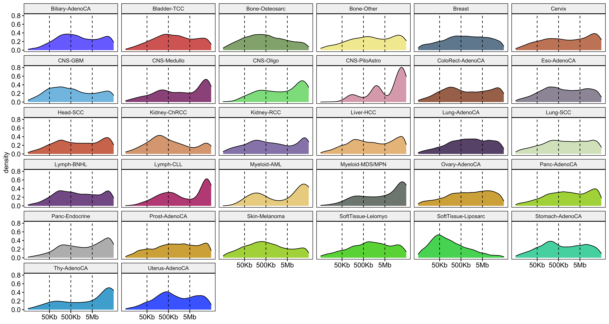
# distribution of copy number
high_cancer <- c(
"Breast", "Liver-HCC", "Ovary-AdenoCA",
"Panc-AdenoCA", "Prost-AdenoCA", "Eso-AdenoCA"
)
pcawg_cn2$cancer_type <- factor(
pcawg_cn2$cancer_type,
levels = c(
high_cancer,
setdiff(names(table(pcawg_cn2$cancer_type)), high_cancer)
)
)
p_cn_number <- ggpubr::ggdensity(pcawg_cn2,
x = "segVal",
y = "..count..",
facet.by = "cancer_type",
scales = "free_y",
fill = "cancer_type",
alpha = 0.8,
) +
scale_fill_igv() +
scale_color_igv() +
theme(
legend.position = "none",
axis.title.x = element_blank()
) +
scale_x_continuous(
name = "segVal",
limits = c(0, 32),
breaks = c(0, 2, 16, 32),
labels = c("0", "2", "16", "32")
) +
geom_vline(xintercept = c(2, 16, 32), linetype = "dashed")
p_cn_number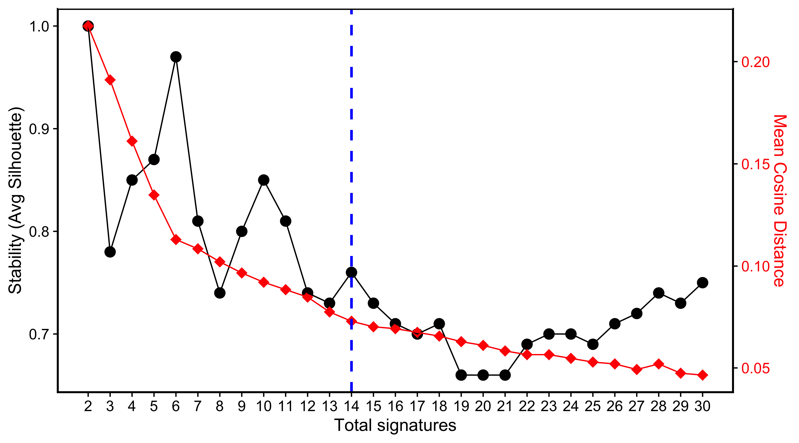
PCAWG genotype/phenotype data type and source
If no references described, PCAWG genotype/phenotype data used in this study are obtained from UCSC Xena database, the original data source is PCAWG paper collection published in early 2020.
- Consensus copy number (page in UCSC Xena).
- General phenotype information (page in UCSC Xena).
- Tumor purity & ploidy & WGD status (page in UCSC Xena).
- Gene level fusion events (page in UCSC Xena).
- LOH number, calculated from copy number data, defined as number of copy number segments passing the following criterion:
- Minor copy number equals to
0. - Total copy number is greater than
0. - Segment length is greater than
10Kb.
- Minor copy number equals to
- HRD status by CHORD framework, the raw data is available at Nguyen et al. (2020), cleaned by Huimin Li.
- Chromothripsis detected by ShatterSeek, the data is obtained from http://compbio.med.harvard.edu/chromothripsis/.
- Amplicons (including ecDNA) detected by AmpliconArchitect, obtained from Kim et al. (2020).
- Telomere content detected by TelomereHunter, obtained from PCAWG-Structural Variation Working Group et al. (2020).
- APOBEC mutations (page in UCSC Xena).
PART 1: Copy number signature identification and activity attribution
In this part, how the copy number signatures are identified and how the corresponding signature activities (a.k.a. exposures) are attributed are described in sections below. The 176 component classification for PCAWG data is our main focus.
The work of this part has been done by either setting root path of the project repository as work directory or moving data and code to the same path (see below). Therefore, keep in mind the work directory/data path should be properly set if you are interested in reproducing the analysis procedure.
The signature identification work cannot be done in local machine because high intensity calculations are required, we used HPC of ShanghaiTech University to submit computation jobs to HPC clusters. Input data files, R scripts and PBS job scripts are stored in a same path, the structure can be viewed as:
.
├── call_pcawg_sp.R
├── pcawg_cn_tally_X.rds
├── pcawg.pbsCopy number signature identification
We use the gold-standard tool SigProfiler v1.0.17 to identify Pan-Cancer copy number signatures and their activities in each sample. The SigProfiler has been successfully applied to many studies, especially in PCAWG Mutational Signatures Working Group et al. (2020) for multiple types of signatures.
Apply to PCAWG catalog matrix
PBS file pcawg.pbs content:
#PBS -l walltime=1000:00:00
#PBS -l nodes=1:ppn=36
#PBS -S /bin/bash
#PBS -l mem=20gb
#PBS -j oe
#PBS -M w_shixiang@163.com
#PBS -q pub_fast
# Please set PBS arguments above
cd /public/home/wangshx/wangshx/PCAWG-TCGA
module load apps/R/3.6.1
# Following are commands/scripts you want to run
# If you do not know how to set this, please check README.md file
Rscript call_pcawg_sp.RWe developed a SigProfiler caller in our R package [sigminer] and run SigProfiler with default settings for most of parameters.
R script call_pcawg_sp.R content:
library(sigminer)
tally_X <- readRDS("pcawg_cn_tally_X.rds")
sigprofiler_extract(tally_X$nmf_matrix,
output = "PCAWG_CN176X",
range = 2:30,
nrun = 100,
init_method = "random",
is_exome = FALSE,
use_conda = TRUE
)All metadata info and detail settings reported by SigProfiler are copied below:
THIS FILE CONTAINS THE METADATA ABOUT SYSTEM AND RUNTIME
-------System Info-------
Operating System Name: Linux
Nodename: node34
Release: 3.10.0-693.el7.x86_64
Version: #1 SMP Tue Aug 22 21:09:27 UTC 2017
-------Python and Package Versions-------
Python Version: 3.8.5
Sigproextractor Version: 1.0.17
SigprofilerPlotting Version: 1.1.8
SigprofilerMatrixGenerator Version: 1.1.20
Pandas version: 1.1.2
Numpy version: 1.19.2
Scipy version: 1.5.2
Scikit-learn version: 0.23.2
--------------EXECUTION PARAMETERS--------------
INPUT DATA
input_type: matrix
output: TCGA_CN176X
input_data: /tmp/RtmphYcBmk/dir852158ab0364/sigprofiler_input.txt
reference_genome: GRCh37
context_types: SBS176
exome: False
NMF REPLICATES
minimum_signatures: 2
maximum_signatures: 30
NMF_replicates: 100
NMF ENGINE
NMF_init: random
precision: single
matrix_normalization: gmm
resample: True
seeds: random
min_NMF_iterations: 10,000
max_NMF_iterations: 1,000,000
NMF_test_conv: 10,000
NMF_tolerance: 1e-15
CLUSTERING
clustering_distance: cosine
EXECUTION
cpu: 36; Maximum number of CPU is 36
gpu: False
Solution Estimation
stability: 0.8
min_stability: 0.2
combined_stability: 1.0
COSMIC MATCH
opportunity_genome: GRCh37
nnls_add_penalty: 0.05
nnls_remove_penalty: 0.01
initial_remove_penalty: 0.05
de_novo_fit_penalty: 0.02
refit_denovo_signatures: False
-------Analysis Progress-------
[2020-11-29 17:39:12] Analysis started:
##################################
[2020-11-29 17:39:18] Analysis started for SBS176. Matrix size [176 rows x 10851 columns]
[2020-11-29 17:39:18] Normalization GMM with cutoff value set at 17600
[2020-11-29 19:12:03] SBS176 de novo extraction completed for a total of 2 signatures!
Execution time:1:32:45
[2020-11-29 23:58:10] SBS176 de novo extraction completed for a total of 3 signatures!
Execution time:4:46:06
[2020-11-30 08:32:21] SBS176 de novo extraction completed for a total of 4 signatures!
Execution time:8:34:11
[2020-11-30 19:51:18] SBS176 de novo extraction completed for a total of 5 signatures!
Execution time:11:18:56
[2020-12-01 07:10:18] SBS176 de novo extraction completed for a total of 6 signatures!
Execution time:11:18:59
[2020-12-01 21:14:24] SBS176 de novo extraction completed for a total of 7 signatures!
Execution time:14:04:06
[2020-12-02 15:48:43] SBS176 de novo extraction completed for a total of 8 signatures!
Execution time:18:34:19
[2020-12-03 12:53:25] SBS176 de novo extraction completed for a total of 9 signatures!
Execution time:21:04:41
[2020-12-04 11:25:25] SBS176 de novo extraction completed for a total of 10 signatures!
Execution time:22:31:59
[2020-12-05 10:20:15] SBS176 de novo extraction completed for a total of 11 signatures!
Execution time:22:54:50
[2020-12-06 11:36:03] SBS176 de novo extraction completed for a total of 12 signatures!
Execution time:1 day, 1:15:48
[2020-12-07 14:43:31] SBS176 de novo extraction completed for a total of 13 signatures!
Execution time:1 day, 3:07:28
[2020-12-09 01:15:22] SBS176 de novo extraction completed for a total of 14 signatures!
Execution time:1 day, 10:31:50
[2020-12-10 08:02:39] SBS176 de novo extraction completed for a total of 15 signatures!
Execution time:1 day, 6:47:17
[2020-12-11 16:05:31] SBS176 de novo extraction completed for a total of 16 signatures!
Execution time:1 day, 8:02:51
[2020-12-13 02:19:40] SBS176 de novo extraction completed for a total of 17 signatures!
Execution time:1 day, 10:14:09
[2020-12-14 14:56:13] SBS176 de novo extraction completed for a total of 18 signatures!
Execution time:1 day, 12:36:32
[2020-12-16 02:39:41] SBS176 de novo extraction completed for a total of 19 signatures!
Execution time:1 day, 11:43:27
[2020-12-18 02:54:09] SBS176 de novo extraction completed for a total of 20 signatures!
Execution time:2 days, 0:14:28
[2020-12-19 20:20:57] SBS176 de novo extraction completed for a total of 21 signatures!
Execution time:1 day, 17:26:47
[2020-12-21 19:30:07] SBS176 de novo extraction completed for a total of 22 signatures!
Execution time:1 day, 23:09:10
[2020-12-24 00:44:41] SBS176 de novo extraction completed for a total of 23 signatures!
Execution time:2 days, 5:14:34
[2020-12-25 19:03:07] SBS176 de novo extraction completed for a total of 24 signatures!
Execution time:1 day, 18:18:25
[2020-12-27 07:50:06] SBS176 de novo extraction completed for a total of 25 signatures!
Execution time:1 day, 12:46:58
[2020-12-29 04:40:22] SBS176 de novo extraction completed for a total of 26 signatures!
Execution time:1 day, 20:50:16
[2020-12-30 12:35:04] SBS176 de novo extraction completed for a total of 27 signatures!
Execution time:1 day, 7:54:41
[2020-12-31 19:04:04] SBS176 de novo extraction completed for a total of 28 signatures!
Execution time:1 day, 6:29:00
[2021-01-02 04:50:07] SBS176 de novo extraction completed for a total of 29 signatures!
Execution time:1 day, 9:46:02
[2021-01-03 14:15:32] SBS176 de novo extraction completed for a total of 30 signatures!
Execution time:1 day, 9:25:25
[2021-01-03 14:48:21] Analysis ended:
-------Job Status-------
Analysis of mutational signatures completed successfully!
Total execution time: 34 days, 21:09:09
Results can be found in: TCGA_CN176X folderSignature number determination
First, load the results.
library(sigminer)
SP_PCAWG <- sigprofiler_import("../SP/PCAWG_CN176X/", order_by_expo = TRUE, type = "all")
saveRDS(SP_PCAWG, file = "../data/pcawg_cn_solutions_sp.rds")Then we visualize the signature number survey.
SP_PCAWG <- readRDS("../data/pcawg_cn_solutions_sp.rds")show_sig_number_survey(
SP_PCAWG$all_stats %>%
dplyr::rename(
s = `Stability (Avg Silhouette)`,
e = `Mean Cosine Distance`
) %>%
dplyr::mutate(
SignatureNumber = as.integer(gsub("[^0-9]", "", SignatureNumber))
),
x = "SignatureNumber",
left_y = "s", right_y = "e",
left_name = "Stability (Avg Silhouette)",
right_name = "Mean Cosine Distance",
highlight = 14
)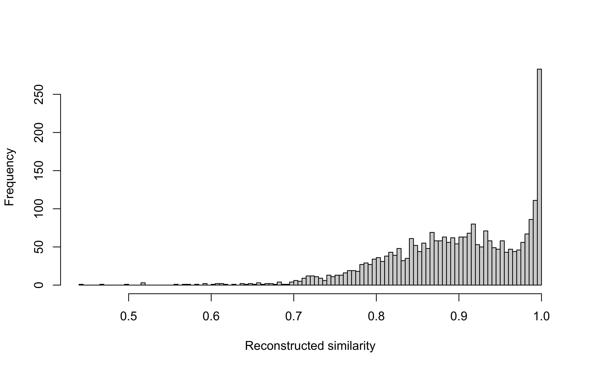
We pick up 14 signatures for PCAWG data due to its relatively high stability and low distance.
The Signature object with 14 signature profiles are stored for further analysis.
To better describe the signatures, we will rename them. The names are ordered by mean activity in samples.
pcawg_sigs <- SP_PCAWG$solution_list$S14
apply(pcawg_sigs$Exposure, 1, mean) Sig1 Sig2 Sig3 Sig4 Sig5 Sig6 Sig7 Sig8
15.830094 13.944564 12.504680 11.570554 10.709143 10.506479 10.429086 9.727142
Sig9 Sig10 Sig11 Sig12 Sig13 Sig14
9.621310 9.116271 7.989201 7.122750 6.835853 6.232541 sig_names(pcawg_sigs) [1] "Sig1" "Sig2" "Sig3" "Sig4" "Sig5" "Sig6" "Sig7" "Sig8" "Sig9"
[10] "Sig10" "Sig11" "Sig12" "Sig13" "Sig14"colnames(pcawg_sigs$Signature) <- colnames(pcawg_sigs$Signature.norm) <- rownames(pcawg_sigs$Exposure) <- rownames(pcawg_sigs$Exposure.norm) <- pcawg_sigs$Stats$signatures$Signatures <- paste0("CNS", 1:14)
sig_names(pcawg_sigs) [1] "CNS1" "CNS2" "CNS3" "CNS4" "CNS5" "CNS6" "CNS7" "CNS8" "CNS9"
[10] "CNS10" "CNS11" "CNS12" "CNS13" "CNS14"saveRDS(pcawg_sigs, file = "../data/pcawg_cn_sigs_CN176_signature.rds")Sample copy number catalog reconstruction
Here we try know how well each sample catalog profile can be constructed from the signature combination.
Firstly we get the activity data.
pcawg_sigs <- readRDS("../data/pcawg_cn_sigs_CN176_signature.rds")
pcawg_act <- list(
absolute = get_sig_exposure(SP_PCAWG$solution_list$S14, type = "absolute"),
relative = get_sig_exposure(SP_PCAWG$solution_list$S14, type = "relative", rel_threshold = 0),
similarity = pcawg_sigs$Stats$samples[, .(Samples, `Cosine Similarity`)]
)
colnames(pcawg_act$absolute)[-1] <- colnames(pcawg_act$relative)[-1] <- paste0("CNS", 1:14)
colnames(pcawg_act$similarity) <- c("sample", "similarity")
saveRDS(pcawg_act, file = "../data/pcawg_cn_sigs_CN176_activity.rds")Check the stat summary of reconstructed Cosine similarity.
summary(pcawg_act$similarity$similarity) Min. 1st Qu. Median Mean 3rd Qu. Max.
0.5130 0.8980 0.9490 0.9326 0.9850 1.0000 Visualize with plot
hist(pcawg_act$similarity$similarity, breaks = 100, xlab = "Reconstructed similarity", main = NA)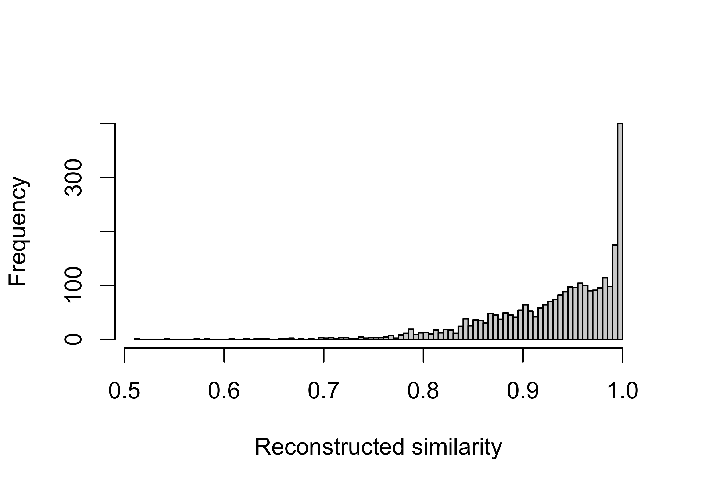
Most of samples are well constructed. Next we will use a similarity threshold 0.75 to filter out some samples for removing their effects on the following analysis.
PART 2: Signature profile visualization and analysis
In this part, we would like to visualize and analyze all tumor samples as a whole.
Signature profile visualization
library(tidyverse)
library(sigminer)
pcawg_sigs <- readRDS(file = "../data/pcawg_cn_sigs_CN176_signature.rds")Show signature profile with relative contribution value for each component.
show_sig_profile(
pcawg_sigs,
mode = "copynumber",
method = "X",
style = "cosmic"
)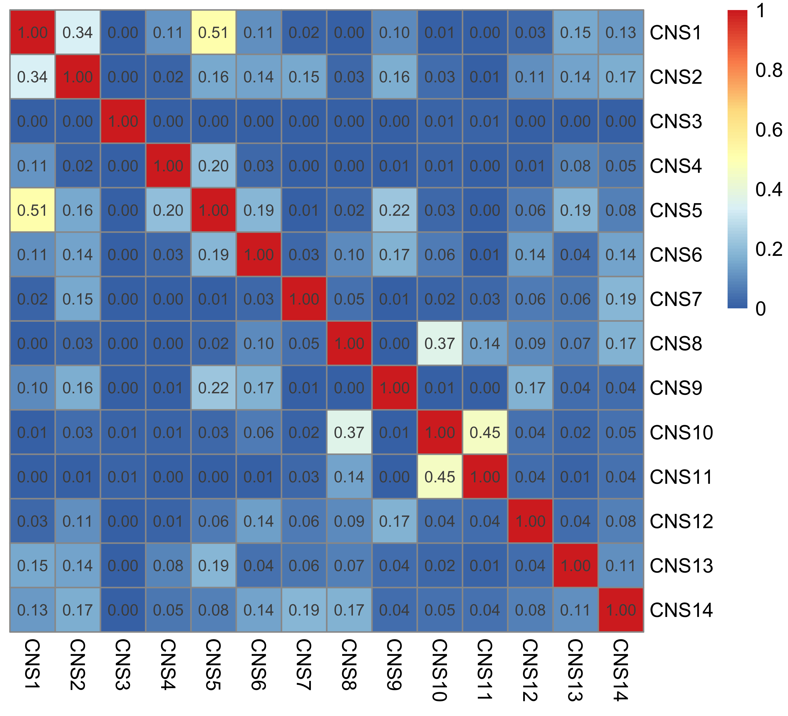
Show signature profile with absolute contribution value (estimated segment count) for each component.
show_sig_profile(
pcawg_sigs,
mode = "copynumber",
method = "X",
style = "cosmic",
normalize = "raw"
)
Show signature activity profile.
show_sig_exposure(
pcawg_sigs,
style = "cosmic",
rm_space = TRUE,
palette = sigminer:::letter_colors
)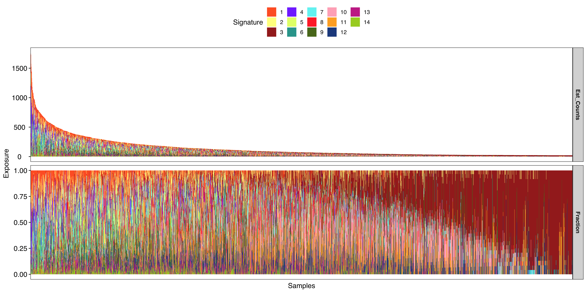
Signature analysis
Signature similarity
Here we explore the similarity between copy number signatures identified in PCAWG data. High cosine similarity will cause some issues in signature assignment and activity attribution (Maura et al. 2019).
sim <- get_sig_similarity(pcawg_sigs, pcawg_sigs)pheatmap::pheatmap(sim$similarity, cluster_cols = F, cluster_rows = F, display_numbers = TRUE)Most of signature-pairs have similarity around 0.1.
Signature activity distribution
Transform data to long format.
df_abs <- get_sig_exposure(pcawg_sigs) %>%
tidyr::pivot_longer(cols = starts_with("CNS"), names_to = "sig", values_to = "activity") %>%
dplyr::mutate(
activity = log10(activity + 1),
sig = factor(sig, levels = paste0("CNS", 1:14))
)
df_rel <- get_sig_exposure(pcawg_sigs, type = "relative", rel_threshold = 0) %>%
tidyr::pivot_longer(cols = starts_with("CNS"), names_to = "sig", values_to = "activity") %>%
dplyr::mutate(
sig = factor(sig, levels = paste0("CNS", 1:14))
)Plot with function in sigminer.
show_group_distribution(
df_abs,
gvar = "sig",
dvar = "activity",
order_by_fun = FALSE,
g_angle = 90,
ylab = "log10(activity+1)"
)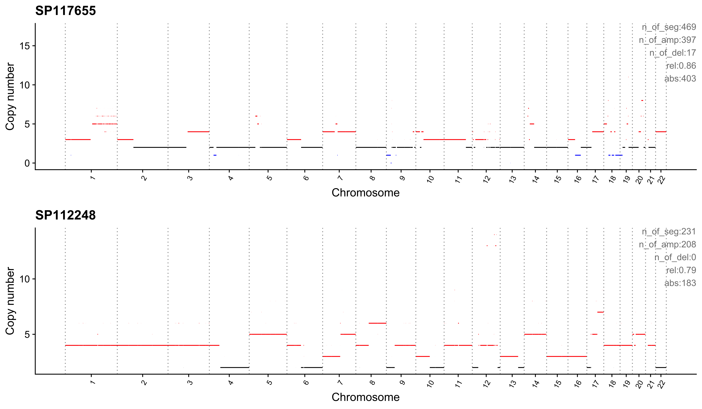
show_group_distribution(
df_rel,
gvar = "sig",
dvar = "activity",
order_by_fun = FALSE,
g_angle = 90,
ylab = "relative activity"
)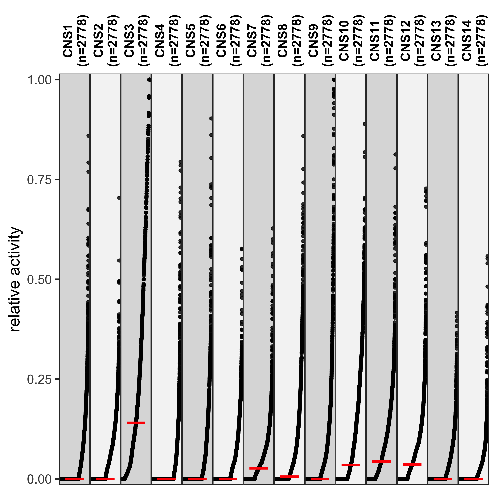
Copy number profile and signature activity
Copy number profile for representative samples
Here we will draw copy number profile of 2 representative samples for each signature.
get_sample_from_sig <- function(dt, sig) {
res <- head(dt[order(dt[[sig]], dt[[paste0("ABS_", sig)]], decreasing = TRUE)], 2L)
res
}Read CopyNumber object for PCAWG data.
pcawg_cn_obj <- readRDS("../data/pcawg_cn_obj.rds")
samp_summary <- pcawg_cn_obj@summary.per.sample
rel_activity <- get_sig_exposure(pcawg_sigs, type = "relative", rel_threshold = 0)
abs_activity <- get_sig_exposure(pcawg_sigs, type = "absolute")
rel_activity <- rel_activity[, lapply(.SD, function(x) {
if (is.numeric(x)) round(x, 2) else x
})]
# all(rownames(abs_activity) == rownames(rel_activity))
colnames(abs_activity) <- c("sample", paste0("ABS_CNS", 1:14))
act <- merge(
rel_activity, abs_activity,
by = "sample"
)dir.create("../output/enrich_samples/", showWarnings = FALSE)
for (i in paste0("CNS", 1:14)) {
cat(paste0("Most enriched in ", i, "\n"))
s <- get_sample_from_sig(act, i)
print(s)
plist <- show_cn_profile(pcawg_cn_obj,
samples = s$sample,
show_title = TRUE,
return_plotlist = TRUE
)
plist <- purrr::map2(plist, s$sample, function(p, x) {
s <- samp_summary[sample == x]
text <- paste0(
"n_of_seg:", s$n_of_seg, "\n",
"n_of_amp:", s$n_of_amp, "\n",
"n_of_del:", s$n_of_del, "\n",
"rel:", act[sample == x][[i]], "\n",
"abs:", act[sample == x][[paste0("ABS_", i)]], "\n"
)
p <- p + annotate("text",
x = Inf, y = Inf, hjust = 1, vjust = 1,
label = text, color = "gray50"
)
p
})
p <- cowplot::plot_grid(plotlist = plist, nrow = 2)
print(p)
ggplot2::ggsave(file.path("../output/enrich_samples/", paste0(i, ".pdf")),
plot = p, width = 12, height = 6
)
}Most enriched in CNS1
sample CNS1 CNS2 CNS3 CNS4 CNS5 CNS6 CNS7 CNS8 CNS9 CNS10 CNS11 CNS12
1: SP117655 0.86 0 0.01 0 0.00 0.02 0.04 0 0.02 0.01 0.01 0.02
2: SP112248 0.79 0 0.00 0 0.06 0.05 0.01 0 0.07 0.00 0.00 0.01
CNS13 CNS14 ABS_CNS1 ABS_CNS2 ABS_CNS3 ABS_CNS4 ABS_CNS5 ABS_CNS6 ABS_CNS7
1: 0 0 403 0 7 0 0 9 17
2: 0 0 183 0 1 0 15 11 2
ABS_CNS8 ABS_CNS9 ABS_CNS10 ABS_CNS11 ABS_CNS12 ABS_CNS13 ABS_CNS14
1: 0 10 6 6 11 0 0
2: 0 16 0 0 3 0 0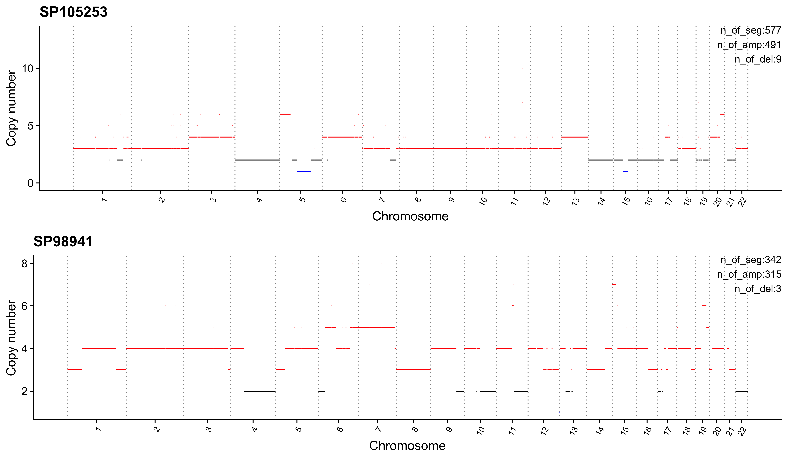
Most enriched in CNS2
sample CNS1 CNS2 CNS3 CNS4 CNS5 CNS6 CNS7 CNS8 CNS9 CNS10 CNS11 CNS12
1: SP8564 0.03 0.70 0.01 0.09 0.14 0.00 0.02 0 0.00 0 0 0
2: SP123894 0.00 0.55 0.00 0.00 0.00 0.11 0.21 0 0.09 0 0 0
CNS13 CNS14 ABS_CNS1 ABS_CNS2 ABS_CNS3 ABS_CNS4 ABS_CNS5 ABS_CNS6 ABS_CNS7
1: 0 0.00 16 338 5 43 67 0 11
2: 0 0.04 0 163 0 0 0 34 62
ABS_CNS8 ABS_CNS9 ABS_CNS10 ABS_CNS11 ABS_CNS12 ABS_CNS13 ABS_CNS14
1: 0 0 0 0 0 0 0
2: 0 26 0 0 0 0 13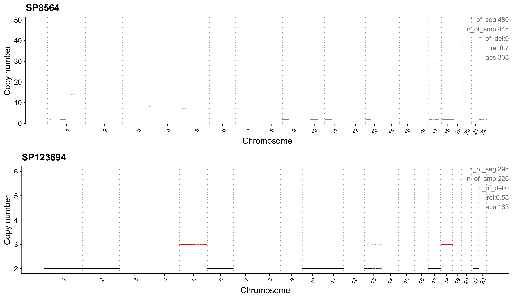
Most enriched in CNS3
sample CNS1 CNS2 CNS3 CNS4 CNS5 CNS6 CNS7 CNS8 CNS9 CNS10 CNS11 CNS12
1: SP105708 0 0 1 0 0 0 0 0 0 0 0 0
2: SP107381 0 0 1 0 0 0 0 0 0 0 0 0
CNS13 CNS14 ABS_CNS1 ABS_CNS2 ABS_CNS3 ABS_CNS4 ABS_CNS5 ABS_CNS6 ABS_CNS7
1: 0 0 0 0 22 0 0 0 0
2: 0 0 0 0 22 0 0 0 0
ABS_CNS8 ABS_CNS9 ABS_CNS10 ABS_CNS11 ABS_CNS12 ABS_CNS13 ABS_CNS14
1: 0 0 0 0 0 0 0
2: 0 0 0 0 0 0 0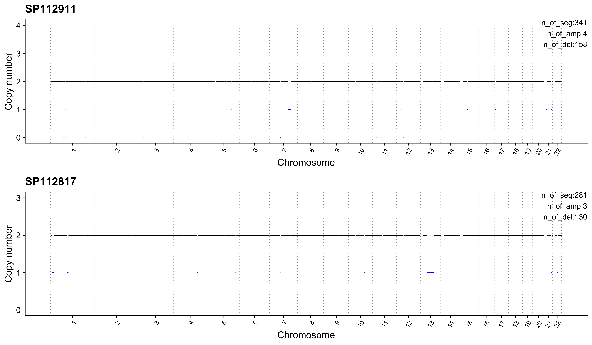
Most enriched in CNS4
sample CNS1 CNS2 CNS3 CNS4 CNS5 CNS6 CNS7 CNS8 CNS9 CNS10 CNS11 CNS12
1: SP116525 0.07 0.01 0.00 0.79 0 0.08 0.00 0 0.04 0 0 0
2: SP121824 0.00 0.00 0.02 0.79 0 0.00 0.01 0 0.00 0 0 0
CNS13 CNS14 ABS_CNS1 ABS_CNS2 ABS_CNS3 ABS_CNS4 ABS_CNS5 ABS_CNS6 ABS_CNS7
1: 0.00 0.00 63 13 0 740 0 75 0
2: 0.18 0.01 0 0 14 446 0 0 3
ABS_CNS8 ABS_CNS9 ABS_CNS10 ABS_CNS11 ABS_CNS12 ABS_CNS13 ABS_CNS14
1: 0 35 0 0 0 4 2
2: 0 0 0 0 0 100 5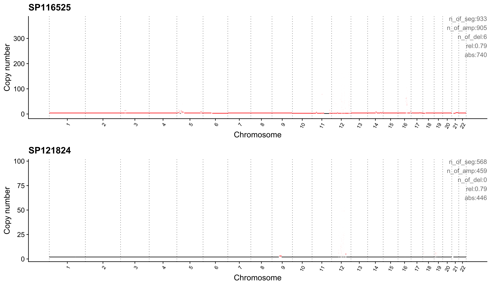
Most enriched in CNS5
sample CNS1 CNS2 CNS3 CNS4 CNS5 CNS6 CNS7 CNS8 CNS9 CNS10 CNS11 CNS12
1: SP56303 0.00 0 0 0.07 0.90 0.02 0 0 0.00 0 0 0
2: SP117309 0.03 0 0 0.00 0.86 0.00 0 0 0.11 0 0 0
CNS13 CNS14 ABS_CNS1 ABS_CNS2 ABS_CNS3 ABS_CNS4 ABS_CNS5 ABS_CNS6 ABS_CNS7
1: 0.01 0 0 0 0 21 278 6 0
2: 0.00 0 2 0 0 0 62 0 0
ABS_CNS8 ABS_CNS9 ABS_CNS10 ABS_CNS11 ABS_CNS12 ABS_CNS13 ABS_CNS14
1: 0 0 0 1 0 2 0
2: 0 8 0 0 0 0 0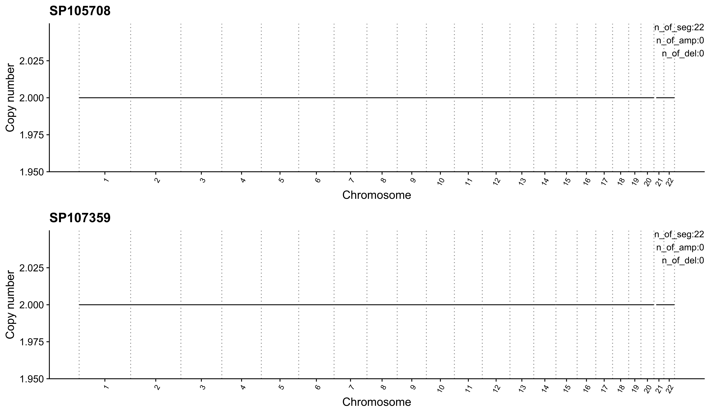
Most enriched in CNS6
sample CNS1 CNS2 CNS3 CNS4 CNS5 CNS6 CNS7 CNS8 CNS9 CNS10 CNS11 CNS12
1: SP77443 0.00 0.00 0.02 0 0.00 0.58 0.02 0 0.27 0 0.02 0.10
2: SP124197 0.15 0.02 0.00 0 0.06 0.57 0.00 0 0.11 0 0.02 0.05
CNS13 CNS14 ABS_CNS1 ABS_CNS2 ABS_CNS3 ABS_CNS4 ABS_CNS5 ABS_CNS6 ABS_CNS7
1: 0 0.00 0 0 1 0 0 30 1
2: 0 0.02 32 5 0 0 12 123 0
ABS_CNS8 ABS_CNS9 ABS_CNS10 ABS_CNS11 ABS_CNS12 ABS_CNS13 ABS_CNS14
1: 0 14 0 1 5 0 0
2: 0 23 0 5 10 0 4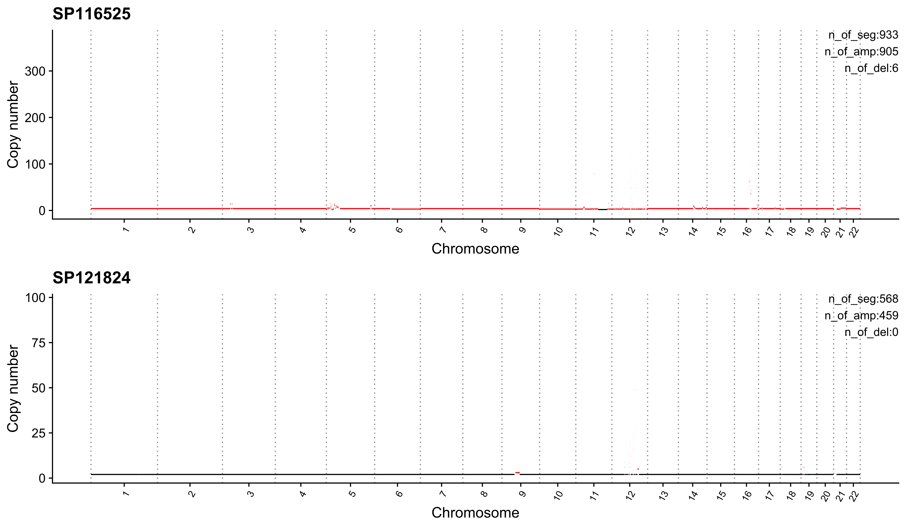
Most enriched in CNS7
sample CNS1 CNS2 CNS3 CNS4 CNS5 CNS6 CNS7 CNS8 CNS9 CNS10 CNS11 CNS12
1: SP49114 0.04 0.00 0.23 0 0 0.01 0.63 0 0.01 0.05 0.03 0.00
2: SP114903 0.04 0.15 0.17 0 0 0.00 0.60 0 0.00 0.01 0.02 0.01
CNS13 CNS14 ABS_CNS1 ABS_CNS2 ABS_CNS3 ABS_CNS4 ABS_CNS5 ABS_CNS6 ABS_CNS7
1: 0 0 15 0 78 0 0 4 212
2: 0 0 28 100 118 0 0 0 413
ABS_CNS8 ABS_CNS9 ABS_CNS10 ABS_CNS11 ABS_CNS12 ABS_CNS13 ABS_CNS14
1: 0 2 18 9 0 0 0
2: 0 0 7 17 5 0 0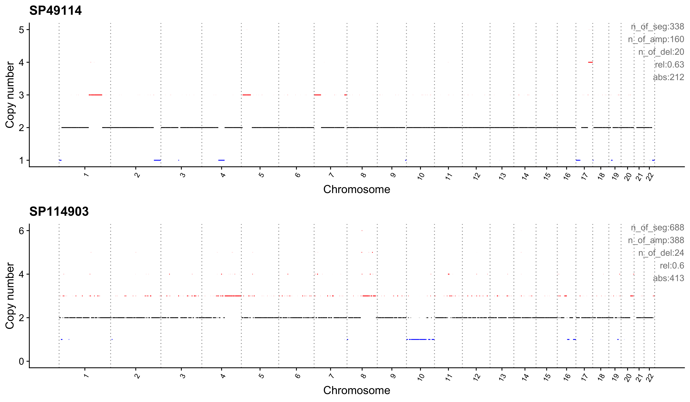
Most enriched in CNS8
sample CNS1 CNS2 CNS3 CNS4 CNS5 CNS6 CNS7 CNS8 CNS9 CNS10 CNS11 CNS12
1: SP116539 0 0 0.08 0 0.00 0.00 0 0.86 0.00 0.00 0.00 0
2: SP116706 0 0 0.06 0 0.01 0.01 0 0.78 0.01 0.11 0.04 0
CNS13 CNS14 ABS_CNS1 ABS_CNS2 ABS_CNS3 ABS_CNS4 ABS_CNS5 ABS_CNS6 ABS_CNS7
1: 0 0.06 0 0 16 0 0 0 0
2: 0 0.00 0 0 10 0 1 1 0
ABS_CNS8 ABS_CNS9 ABS_CNS10 ABS_CNS11 ABS_CNS12 ABS_CNS13 ABS_CNS14
1: 164 0 0 0 0 0 11
2: 135 1 19 7 0 0 0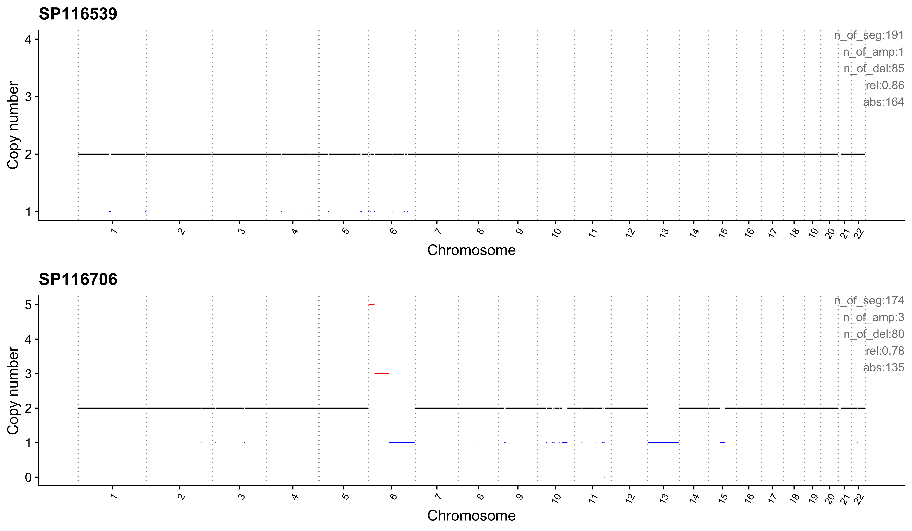
Most enriched in CNS9
sample CNS1 CNS2 CNS3 CNS4 CNS5 CNS6 CNS7 CNS8 CNS9 CNS10 CNS11 CNS12
1: SP118048 0 0 0 0 0 0 0 0 1 0 0 0
2: SP123964 0 0 0 0 0 0 0 0 1 0 0 0
CNS13 CNS14 ABS_CNS1 ABS_CNS2 ABS_CNS3 ABS_CNS4 ABS_CNS5 ABS_CNS6 ABS_CNS7
1: 0 0 0 0 0 0 0 0 0
2: 0 0 0 0 0 0 0 0 0
ABS_CNS8 ABS_CNS9 ABS_CNS10 ABS_CNS11 ABS_CNS12 ABS_CNS13 ABS_CNS14
1: 0 47 0 0 0 0 0
2: 0 34 0 0 0 0 0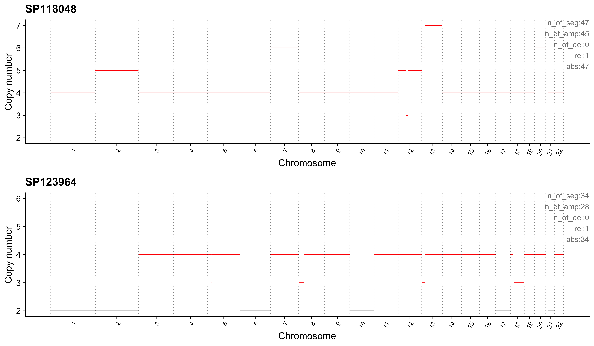
Most enriched in CNS10
sample CNS1 CNS2 CNS3 CNS4 CNS5 CNS6 CNS7 CNS8 CNS9 CNS10 CNS11 CNS12
1: SP112887 0 0 0.10 0 0 0 0 0.00 0 0.89 0.02 0
2: SP112917 0 0 0.06 0 0 0 0 0.04 0 0.82 0.08 0
CNS13 CNS14 ABS_CNS1 ABS_CNS2 ABS_CNS3 ABS_CNS4 ABS_CNS5 ABS_CNS6 ABS_CNS7
1: 0 0 0 0 6 0 0 0 0
2: 0 0 0 0 5 0 0 0 0
ABS_CNS8 ABS_CNS9 ABS_CNS10 ABS_CNS11 ABS_CNS12 ABS_CNS13 ABS_CNS14
1: 0 0 56 1 0 0 0
2: 3 0 63 6 0 0 0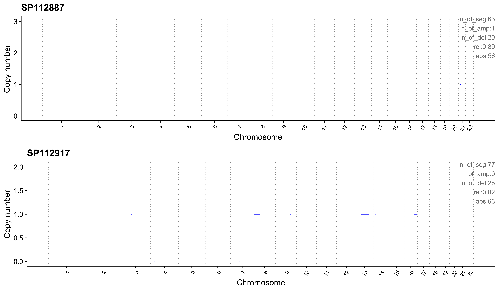
Most enriched in CNS11
sample CNS1 CNS2 CNS3 CNS4 CNS5 CNS6 CNS7 CNS8 CNS9 CNS10 CNS11 CNS12
1: SP106797 0 0 0.12 0 0 0 0.03 0.03 0 0 0.81 0
2: SP135354 0 0 0.22 0 0 0 0.00 0.00 0 0 0.78 0
CNS13 CNS14 ABS_CNS1 ABS_CNS2 ABS_CNS3 ABS_CNS4 ABS_CNS5 ABS_CNS6 ABS_CNS7
1: 0 0 0 0 4 0 0 0 1
2: 0 0 0 0 6 0 0 0 0
ABS_CNS8 ABS_CNS9 ABS_CNS10 ABS_CNS11 ABS_CNS12 ABS_CNS13 ABS_CNS14
1: 1 0 0 26 0 0 0
2: 0 0 0 21 0 0 0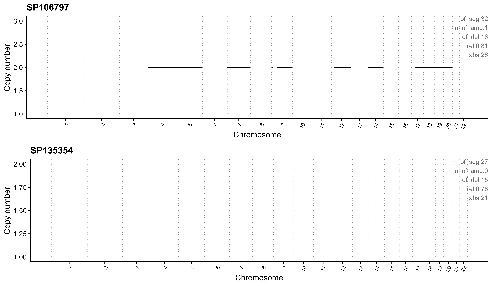
Most enriched in CNS12
sample CNS1 CNS2 CNS3 CNS4 CNS5 CNS6 CNS7 CNS8 CNS9 CNS10 CNS11 CNS12
1: SP106734 0 0.00 0.09 0 0 0 0 0 0.18 0 0 0.73
2: SP37636 0 0.06 0.03 0 0 0 0 0 0.19 0 0 0.72
CNS13 CNS14 ABS_CNS1 ABS_CNS2 ABS_CNS3 ABS_CNS4 ABS_CNS5 ABS_CNS6 ABS_CNS7
1: 0 0 0 0 2 0 0 0 0
2: 0 0 0 2 1 0 0 0 0
ABS_CNS8 ABS_CNS9 ABS_CNS10 ABS_CNS11 ABS_CNS12 ABS_CNS13 ABS_CNS14
1: 0 4 0 0 16 0 0
2: 0 6 0 0 23 0 0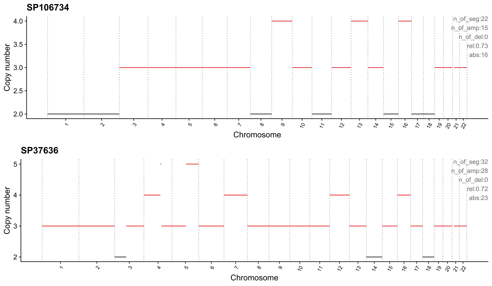
Most enriched in CNS13
sample CNS1 CNS2 CNS3 CNS4 CNS5 CNS6 CNS7 CNS8 CNS9 CNS10 CNS11 CNS12 CNS13
1: SP90269 0.00 0.17 0.07 0.01 0.04 0 0.16 0.02 0 0.03 0.08 0 0.42
2: SP43664 0.11 0.00 0.11 0.11 0.18 0 0.00 0.00 0 0.01 0.08 0 0.41
CNS14 ABS_CNS1 ABS_CNS2 ABS_CNS3 ABS_CNS4 ABS_CNS5 ABS_CNS6 ABS_CNS7
1: 0 0 51 20 2 13 0 47
2: 0 13 0 13 14 22 0 0
ABS_CNS8 ABS_CNS9 ABS_CNS10 ABS_CNS11 ABS_CNS12 ABS_CNS13 ABS_CNS14
1: 6 0 10 25 0 124 0
2: 0 0 1 10 0 50 0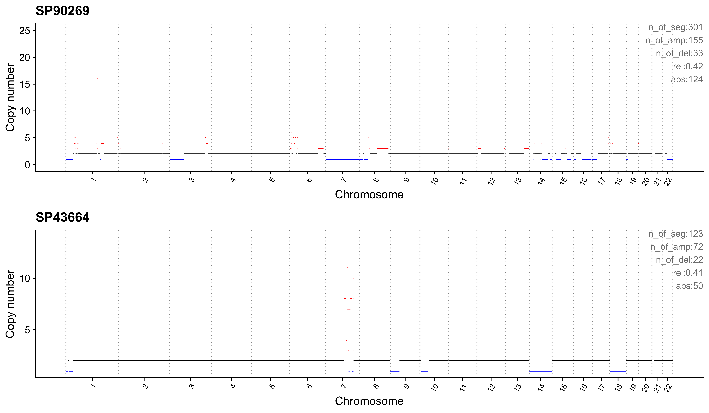
Most enriched in CNS14
sample CNS1 CNS2 CNS3 CNS4 CNS5 CNS6 CNS7 CNS8 CNS9 CNS10 CNS11 CNS12
1: SP96163 0 0.08 0.09 0 0 0 0.09 0.03 0.01 0.02 0.12 0.01
2: SP116365 0 0.01 0.10 0 0 0 0.11 0.01 0.00 0.00 0.21 0.01
CNS13 CNS14 ABS_CNS1 ABS_CNS2 ABS_CNS3 ABS_CNS4 ABS_CNS5 ABS_CNS6 ABS_CNS7
1: 0 0.56 0 44 48 0 0 0 50
2: 0 0.55 0 5 35 0 0 0 41
ABS_CNS8 ABS_CNS9 ABS_CNS10 ABS_CNS11 ABS_CNS12 ABS_CNS13 ABS_CNS14
1: 18 4 12 64 5 0 309
2: 4 0 0 78 2 0 203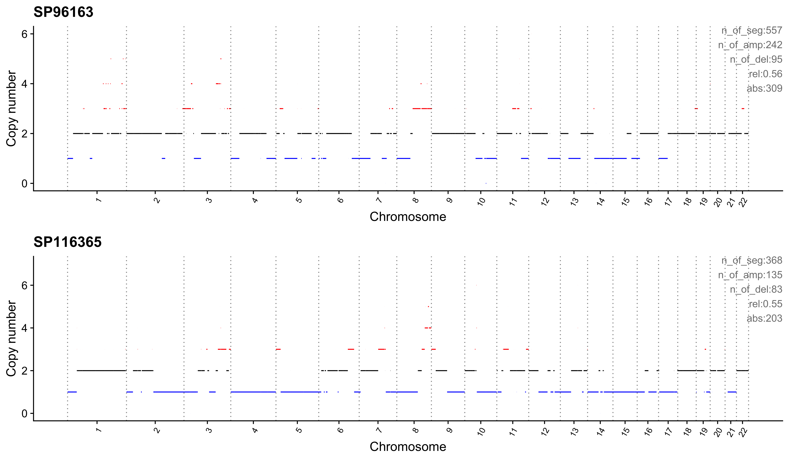
Plot sample profile for presentation in manuscript.
sel_samps <- c(
"SP117655", "SP123894", "SP105708", "SP116525", "SP117309",
"SP77443", "SP114903", "SP116539", "SP118048", "SP112887",
"SP135354", "SP37636", "SP43664", "SP96163"
)
# table(pcawg_cn_obj@data[sample == "SP116539"]$chromosome)
# table(pcawg_cn_obj@data[sample == "SP112887"]$chromosome)
plist <- list()
for (s in sel_samps) {
if (s == sel_samps[4]) {
p <- show_cn_profile(pcawg_cn_obj,
samples = s, chrs = c("chr12"),
show_title = TRUE,
return_plotlist = TRUE
)
} else if (s == sel_samps[8]) {
p <- show_cn_profile(pcawg_cn_obj,
samples = s, chrs = c("chr1", "chr2", "chr4", "chr5", "chr6"),
show_title = TRUE,
return_plotlist = TRUE
)
} else if (s == sel_samps[10]) {
p <- show_cn_profile(pcawg_cn_obj,
samples = s, chrs = paste0("chr", c(1:10, 14, 16, 18, 19, 21)),
show_title = TRUE,
return_plotlist = TRUE
)
} else if (s == sel_samps[13]) {
p <- show_cn_profile(pcawg_cn_obj,
samples = s, chrs = c("chr7"),
show_title = TRUE,
return_plotlist = TRUE
)
} else {
p <- show_cn_profile(pcawg_cn_obj,
samples = s,
show_title = TRUE,
return_plotlist = TRUE
)
}
plist[[s]] <- p[[1]] + ggplot2::labs(x = NULL)
}
plist <- purrr::pmap(list(plist, sel_samps, paste0("CNS", 1:14)), function(p, x, y) {
s <- samp_summary[sample == x]
text <- paste0(
"n_of_seg:", s$n_of_seg, "\n",
"n_of_amp:", s$n_of_amp, "\n",
"n_of_del:", s$n_of_del, "\n",
"rel:", act[sample == x][[y]], "\n",
"abs:", act[sample == x][[paste0("ABS_", y)]], "\n"
)
p <- p + annotate("text",
x = Inf, y = Inf, hjust = 1, vjust = 1,
label = text, color = "gray50"
)
p
})
p <- cowplot::plot_grid(plotlist = plist, ncol = 1)
ggplot2::ggsave(file.path("../output/enrich_samples/", "selected_samples.pdf"),
plot = p, width = 12, height = 42
)Ideograph for copy number profile reconstruction
Select one/two samples and draw copy number profile -> catalog profile -> signature relative activity.
ss <- c("SP102561", "SP123964")p <- show_cn_profile(pcawg_cn_obj,
samples = ss,
show_title = TRUE, ncol = 1
)
ggplot2::ggsave("../output/example_cn_profile.pdf",
plot = p, width = 12, height = 6
)tally_X <- readRDS("../data/pcawg_cn_tally_X.rds")p <- show_catalogue(tally_X, mode = "copynumber", method = "X", style = "cosmic", samples = ss, by_context = TRUE, font_scale = 0.7)
ggplot2::ggsave("../output/example_sig_profile.pdf",
plot = p, width = 15, height = 4
)p <- show_sig_exposure(sig_exposure(pcawg_sigs)[, ss], hide_samps = FALSE) + ggplot2::ylab("Activity") + ggpubr::rotate_x_text(0, hjust = 0.5)
ggplot2::ggsave("../output/example_sig_activity.pdf",
plot = p, width = 4, height = 5
)PART 3: Pan-Cancer signature analysis
In this part, we will analyze copy number signatures across cancer types and show the landscape.
Signature number and contribution in each cancer type
Load tidy cancer type annotation data.
library(sigminer)
library(tidyverse)
pcawg_types <- readRDS("../data/pcawg_type_info.rds")Load signature activity data.
pcawg_activity <- readRDS("../data/pcawg_cn_sigs_CN176_activity.rds")Combine the cancer type annotation and activity data and only keep samples with good reconstruction (>0.75 cosine similarity).
keep_samps <- pcawg_activity$similarity[similarity > 0.75]$sample
df_abs <- merge(pcawg_activity$absolute[sample %in% keep_samps], pcawg_types, by = "sample")
df_rel <- merge(pcawg_activity$relative[sample %in% keep_samps], pcawg_types, by = "sample")Signature activity in each cancer type
Here we draw distribution of a signature across cancer types.
show_group_distribution(
df_abs,
gvar = "cancer_type",
dvar = "CNS1",
order_by_fun = FALSE,
g_angle = 90,
point_size = 0.3
)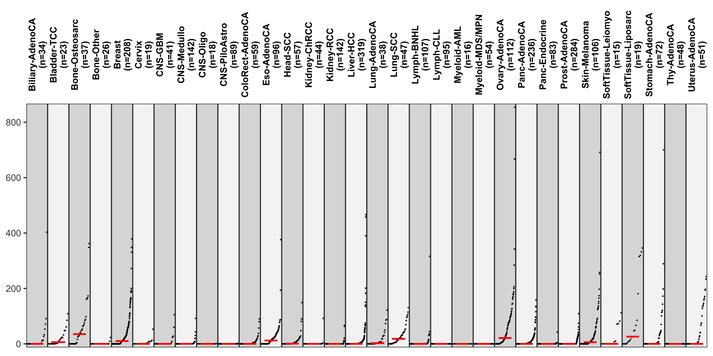
We have many signatures here, so we output them to PDF files.
dir.create("../output/cancer-type-dist", showWarnings = F)
signames <- paste0("CNS", 1:14)
for (i in signames) {
pxx <- show_group_distribution(df_abs,
gvar = "cancer_type",
dvar = i, order_by_fun = FALSE,
ylab = i,
g_angle = 90, point_size = 0.3
)
ggplot2::ggsave(file.path("../output/cancer-type-dist/", paste0("Absolute_activity_", i, ".pdf")),
plot = pxx, width = 12, height = 6
)
pxx <- show_group_distribution(df_rel,
gvar = "cancer_type",
dvar = i, order_by_fun = FALSE,
ylab = i,
g_angle = 90, point_size = 0.3
)
ggplot2::ggsave(file.path("../output/cancer-type-dist/", paste0("Relative_activity_", i, ".pdf")),
plot = pxx, width = 12, height = 6
)
}
rm(pxx)Signature landscape
Define a signature which is detectable if this signature contribute >5% exposures and contribute >15 segments in a sample.
df <- df_rel %>%
dplyr::mutate_at(dplyr::vars(dplyr::starts_with("CNS")), ~ ifelse(. > 0.05, 1L, 0L)) %>%
tidyr::pivot_longer(
cols = dplyr::starts_with("CNS"),
names_to = "sig", values_to = "detectable"
)
df2 <- df_rel %>%
tidyr::pivot_longer(
cols = dplyr::starts_with("CNS"),
names_to = "sig", values_to = "expo"
)
df3 <- df_abs %>%
dplyr::mutate_at(dplyr::vars(dplyr::starts_with("CNS")), ~ ifelse(. > 15, 1L, 0L)) %>%
tidyr::pivot_longer(
cols = dplyr::starts_with("CNS"),
names_to = "sig", values_to = "segment_detect"
)
df <- dplyr::left_join(df, df2,
by = c("sample", "cancer_type", "sig")
) %>% dplyr::left_join(., df3, by = c("sample", "cancer_type", "sig"))
df_type <- df %>%
dplyr::group_by(cancer_type, sig) %>%
dplyr::summarise(
freq = sum(segment_detect), # directly use count
expo = median(expo[detectable == 1]),
n = n(),
label = paste0(unique(cancer_type), " (n=", n, ")"),
.groups = "drop"
) %>%
dplyr::group_by(cancer_type) %>%
dplyr::mutate(pro = freq / sum(freq))
df_type$expo <- ifelse(df_type$freq == 0, 0, df_type$expo)
mps <- unique(df_type[, c("cancer_type", "label")])
mpss <- mps$label
names(mpss) <- mps$cancer_typesummary(df_type$freq) Min. 1st Qu. Median Mean 3rd Qu. Max.
0.00 1.00 7.00 15.27 20.00 175.00 Show copy number signature landscape.
library(cowplot)
p <- ggplot(
df_type,
aes(x = cancer_type, y = factor(sig, levels = paste0("CNS", 1:14)))
) +
geom_point(aes(size = pro, color = expo)) +
theme_cowplot() +
ggpubr::rotate_x_text(60) +
scale_x_discrete(breaks = mps$cancer_type, labels = mps$label) +
scale_size_continuous(
limits = c(0.1, 1),
breaks = c(0, 0.25, 0.5, 0.75, 1)
) +
scale_color_stepsn(
colors = viridis::viridis(5, direction = -1),
breaks = c(0, 0.25, 0.5, 0.75, 1)
) +
labs(
x = NULL, y = "Copy number signatures",
color = "Median activity\ndue to signature",
size = "Proportion of tumors \nwith the signatures"
)
p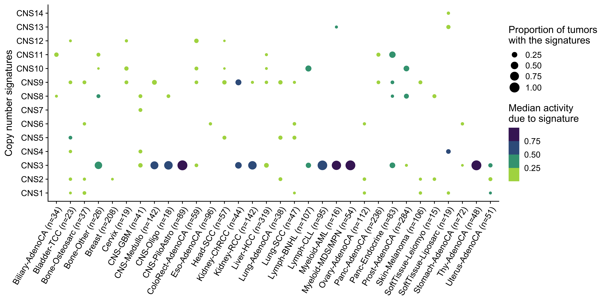 ### Signature number distribution
For most of cancer types, they have similar signature constitution (most of copy number signatures available in them). However, we need to further check that if many tumors have so many signatures activated.
pcawg_cns <- readRDS("../data/pcawg_cn_sigs_CN176_signature.rds") %>%
.[["Exposure.norm"]] %>%
t() %>%
as.data.frame() %>%
tibble::rownames_to_column(., var = "sample")
pcawg_sbs <- read_csv("../data/PCAWG/PCAWG_sigProfiler_SBS_signatures_in_samples.csv")
pcawg_dbs <- read_csv("../data/PCAWG/PCAWG_sigProfiler_DBS_signatures_in_samples.csv")
pcawg_id <- read_csv("../data/PCAWG/PCAWG_SigProfiler_ID_signatures_in_samples.csv")
# Use signature relative contribution for analysis
pcawg_sbs <- pcawg_sbs[, -c(1, 3)] %>%
dplyr::rename(sample = `Sample Names`) %>%
dplyr::select(-SBS43, -c(SBS45:SBS60))
pcawg_dbs <- pcawg_dbs[, -c(1, 3)] %>%
dplyr::rename(sample = `Sample Names`)
pcawg_id <- pcawg_id[, -c(1, 3)] %>%
dplyr::rename(sample = `Sample Names`)
df_cns <- df_rel %>%
dplyr::mutate_at(dplyr::vars(dplyr::starts_with("CNS")), ~ ifelse(. > 0.05, 1L, 0L)) %>%
tidyr::pivot_longer(
cols = dplyr::starts_with("CNS"),
names_to = "sig", values_to = "detectable"
)
df2_cns <- df_rel %>%
tidyr::pivot_longer(
cols = dplyr::starts_with("CNS"),
names_to = "sig", values_to = "expo"
)
df3_cns <- df_abs %>%
dplyr::mutate_at(dplyr::vars(dplyr::starts_with("CNS")), ~ ifelse(. > 15, 1L, 0L)) %>%
tidyr::pivot_longer(
cols = dplyr::starts_with("CNS"),
names_to = "sig", values_to = "segment_detect"
)
df_cns <- dplyr::left_join(df_cns, df2_cns,
by = c("sample", "cancer_type", "sig")
) %>% dplyr::left_join(., df3_cns, by = c("sample", "cancer_type", "sig"))
df_type_cns <- df_cns %>%
dplyr::group_by(cancer_type, sig) %>%
dplyr::summarise(
freq = sum(segment_detect), # directly use count
expo = median(expo[detectable == 1]),
n = n(),
label = paste0(unique(cancer_type), " (n=", n, ")"),
.groups = "drop"
)
mps <- unique(df_type_cns[, c("cancer_type", "label")])
mpss <- mps$label
names(mpss) <- mps$cancer_type
df_detc_cns <- df_cns %>%
dplyr::group_by(cancer_type, sample) %>%
dplyr::summarise(
signumber = sum(segment_detect),
.groups = "drop"
)
num_CNS <- df_detc_cns$signumber
# SBS
pcawg_sbs2 <- dplyr::inner_join(pcawg_sbs,
df_rel[, c("sample", "cancer_type")],
by = "sample"
)
df_sbs <- pcawg_sbs2 %>%
dplyr::mutate_at(dplyr::vars(dplyr::starts_with("SBS")), ~ ifelse(. > 0, 1L, 0L)) %>%
tidyr::pivot_longer(
cols = dplyr::starts_with("SBS"),
names_to = "sig", values_to = "detectable"
)
df2_sbs <- pcawg_sbs2 %>%
tidyr::pivot_longer(
cols = dplyr::starts_with("SBS"),
names_to = "sig", values_to = "expo"
)
df_sbs <- dplyr::left_join(df_sbs, df2_sbs,
by = c("sample", "cancer_type", "sig")
)
df_type_sbs <- df_sbs %>%
dplyr::group_by(cancer_type, sig) %>%
dplyr::summarise(
freq = sum(detectable), # directly use count
expo = median(expo[detectable == 1]),
n = n(),
label = paste0(unique(cancer_type), " (n=", n, ")"),
.groups = "drop"
)
df_detc_sbs <- df_sbs %>%
dplyr::group_by(cancer_type, sample) %>%
dplyr::summarise(
signumber = sum(detectable),
.groups = "drop"
)
num_SBS <- df_detc_sbs$signumber
# DBS
pcawg_dbs2 <- dplyr::inner_join(pcawg_dbs,
df_rel[, c("sample", "cancer_type")],
by = "sample"
)
df_dbs <- pcawg_dbs2 %>%
dplyr::mutate_at(dplyr::vars(dplyr::starts_with("DBS")), ~ ifelse(. > 0, 1L, 0L)) %>%
tidyr::pivot_longer(
cols = dplyr::starts_with("DBS"),
names_to = "sig", values_to = "detectable"
)
df2_dbs <- pcawg_dbs2 %>%
tidyr::pivot_longer(
cols = dplyr::starts_with("DBS"),
names_to = "sig", values_to = "expo"
)
df_dbs <- dplyr::left_join(df_dbs, df2_dbs,
by = c("sample", "cancer_type", "sig")
)
df_type_dbs <- df_dbs %>%
dplyr::group_by(cancer_type, sig) %>%
dplyr::summarise(
freq = sum(detectable), # directly use count
expo = median(expo[detectable == 1]),
n = n(),
label = paste0(unique(cancer_type), " (n=", n, ")"),
.groups = "drop"
)
df_detc_dbs <- df_dbs %>%
dplyr::group_by(cancer_type, sample) %>%
dplyr::summarise(
signumber = sum(detectable),
.groups = "drop"
)
num_DBS <- df_detc_dbs$signumber
# ID
# DBS
pcawg_id2 <- dplyr::inner_join(pcawg_id,
df_rel[, c("sample", "cancer_type")],
by = "sample"
)
df_id <- pcawg_id2 %>%
dplyr::mutate_at(dplyr::vars(dplyr::starts_with("ID")), ~ ifelse(. > 0, 1L, 0L)) %>%
tidyr::pivot_longer(
cols = dplyr::starts_with("ID"),
names_to = "sig", values_to = "detectable"
)
df2_id <- pcawg_id2 %>%
tidyr::pivot_longer(
cols = dplyr::starts_with("ID"),
names_to = "sig", values_to = "expo"
)
df_id <- dplyr::left_join(df_id, df2_id,
by = c("sample", "cancer_type", "sig")
)
df_type_id <- df_id %>%
dplyr::group_by(cancer_type, sig) %>%
dplyr::summarise(
freq = sum(detectable), # directly use count
expo = median(expo[detectable == 1]),
n = n(),
label = paste0(unique(cancer_type), " (n=", n, ")"),
.groups = "drop"
)
df_detc_id <- df_id %>%
dplyr::group_by(cancer_type, sample) %>%
dplyr::summarise(
signumber = sum(detectable),
.groups = "drop"
)
num_ID <- df_detc_id$signumber
# sum
df_num_all <- dplyr::tibble(
sig_type = rep(
c("CNS", "SBS", "DBS", "ID"),
c(length(num_CNS), length(num_SBS), length(num_DBS), length(num_ID))
),
num = c(num_CNS, num_SBS, num_DBS, num_ID)
)
# saveRDS(df_num_all, file = "/home/tzy/projects/CNX-method/data/df_num_all.rds")Pan-Cancer signature number distribution.
library(ggpubr)
num <- ggboxplot(df_num_all,
x = "sig_type", y = "num",
ylab = "Signature number",
color = "sig_type",
xlab = FALSE,
legend = "none",
palette = "jco",
width = 0.3,
outlier.size = 0.05
) +
scale_color_manual(values = c("#0073C2", "#EFC000", "#CD534C", "#7AA6DC"))
num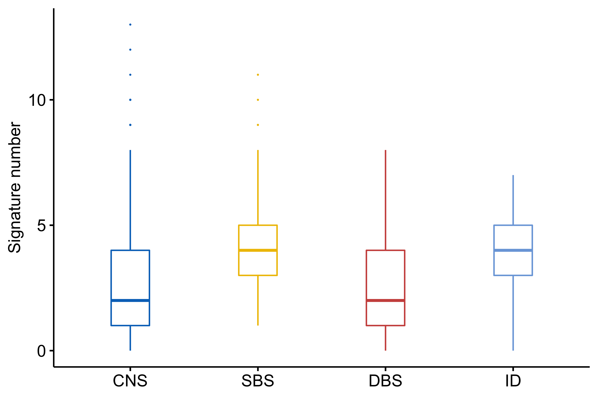
Most tumors have 3-6 signatures.
cancer_num <- ggplot(data = df_detc_cns, aes(x = cancer_type, y = signumber, fill = cancer_type)) +
geom_boxplot() +
coord_flip() +
labs(x = NULL, y = "Signature number") +
theme_cowplot() +
theme(legend.position = "none")
cancer_num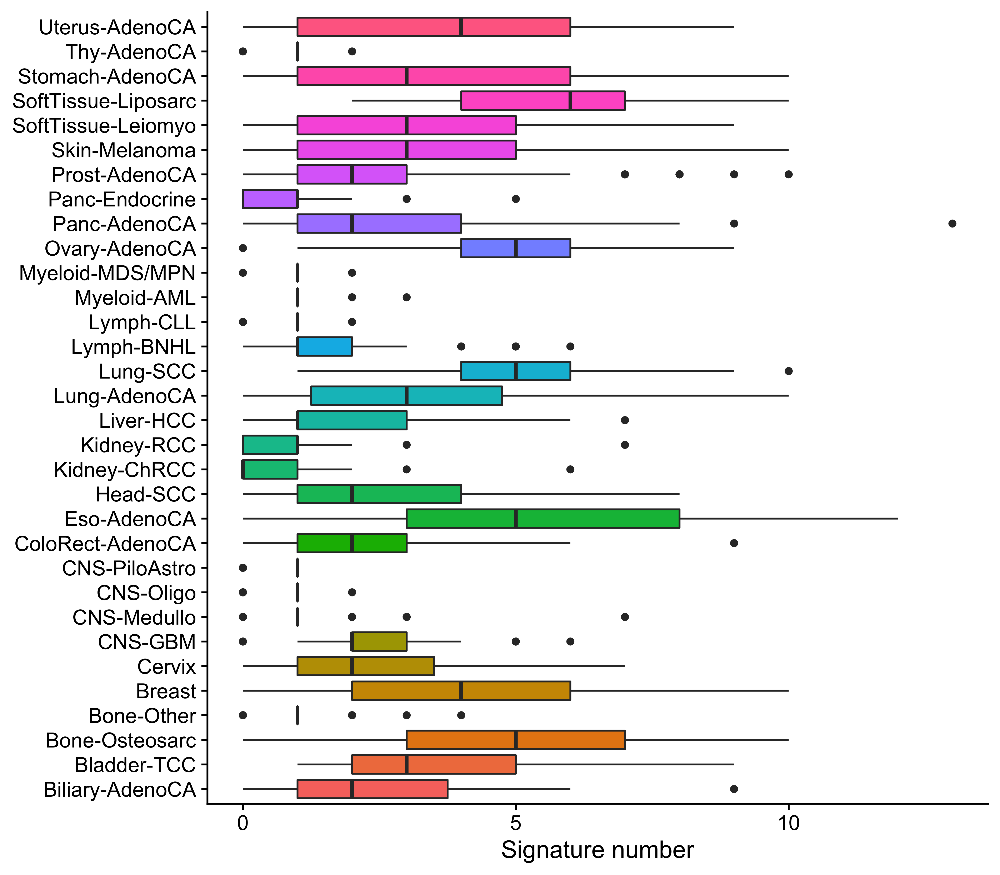
From the landscape and distribution data, we know that many signatures activate in most of cancer types, but for a specified tumor, in general there are 2-4 signatures are detectable.
Cancer type associated enrichment
Run enrichment analysis.
enrich_result <- group_enrichment(
df_abs,
grp_vars = "cancer_type",
enrich_vars = paste0("CNS", 1:14),
co_method = "wilcox.test"
)Show enrichment landscape.
enrich_result$enrich_var <- factor(enrich_result$enrich_var, paste0("CNS", 1:14))
p <- show_group_enrichment(enrich_result, fill_by_p_value = TRUE, return_list = T)
p <- p$cancer_type + labs(x = NULL, y = NULL)
p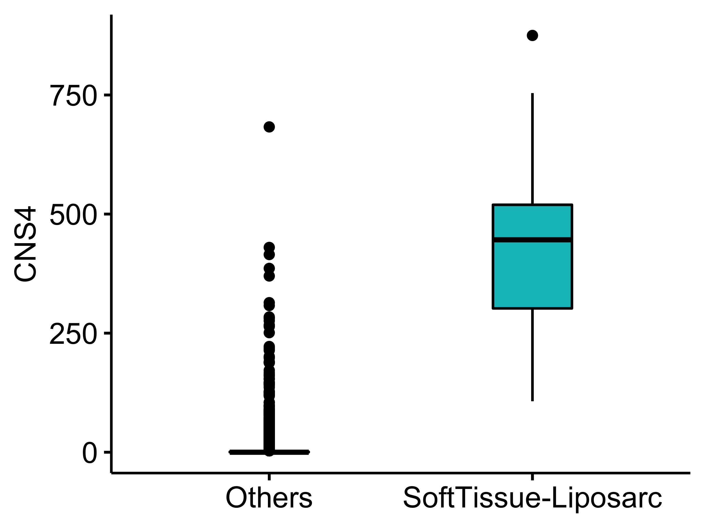
ggsave("../output/CNS_PCAWG_enrichment_landscape.pdf",
plot = p,
height = 8, width = 8.5
)To better visualize the enrichment results, we use binned color regions.
p <- show_group_enrichment(
enrich_result,
fill_by_p_value = TRUE,
cut_p_value = TRUE,
return_list = T
)
p <- p$cancer_type + labs(x = NULL, y = NULL)
p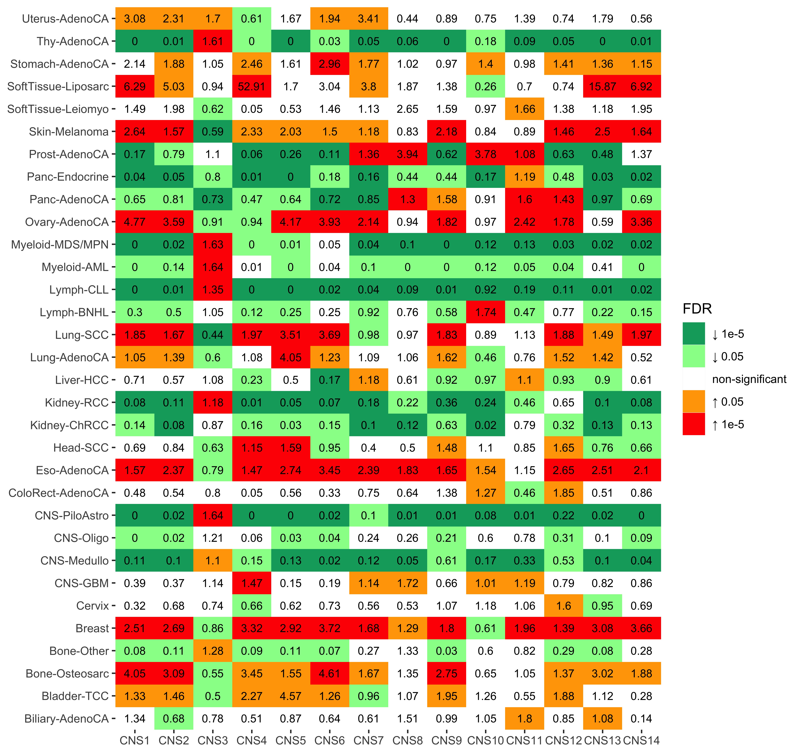
ggsave("../output/CNS_PCAWG_enrichment_landscape2.pdf",
plot = p,
height = 8, width = 8.5
)We see cancer type SoftTissue-Liposarc has pretty high enrichment on CNS4. Let’s check the enrichment result.
enrich_result[grp1 == "SoftTissue-Liposarc"] grp_var enrich_var grp1 grp2 grp1_size grp1_pos_measure
1: cancer_type CNS1 SoftTissue-Liposarc Rest 19 96.315789
2: cancer_type CNS2 SoftTissue-Liposarc Rest 19 68.736842
3: cancer_type CNS3 SoftTissue-Liposarc Rest 19 11.947368
4: cancer_type CNS4 SoftTissue-Liposarc Rest 19 435.526316
5: cancer_type CNS5 SoftTissue-Liposarc Rest 19 17.684211
grp2_size grp2_pos_measure measure_observed measure_tested p_value
1: 2718 15.318985 6.2873482 NA 7.503689e-07
2: 2718 13.663355 5.0307439 NA 1.832154e-02
3: 2718 12.660412 0.9436793 NA 8.258332e-01
4: 2718 8.231052 52.9125928 NA 1.535689e-22
5: 2718 10.408389 1.6990344 NA 6.439534e-02
type method fdr
1: continuous wilcox.test 1.715129e-06
2: continuous wilcox.test 2.664952e-02
3: continuous wilcox.test 8.258332e-01
4: continuous wilcox.test 4.914204e-21
5: continuous wilcox.test 8.586046e-02
[ reached getOption("max.print") -- omitted 9 rows ]Let’s go further plot the distribution for the two groups.
df_check <- df_abs[, c("CNS4", "cancer_type")][
, .(
cancer_type = ifelse(cancer_type == "SoftTissue-Liposarc",
"SoftTissue-Liposarc",
"Others"
),
CNS4 = CNS4
)
]# ggpubr::ggboxplot(
# df_check,
# x = "cancer_type", y = "CNS4",
# fill = "cancer_type",
# xlab = FALSE, width = 0.3, legend = "none")
show_group_distribution(
df_check,
gvar = "cancer_type",
dvar = "CNS4",
order_by_fun = FALSE,
g_angle = 90,
ylab = "CNS4"
)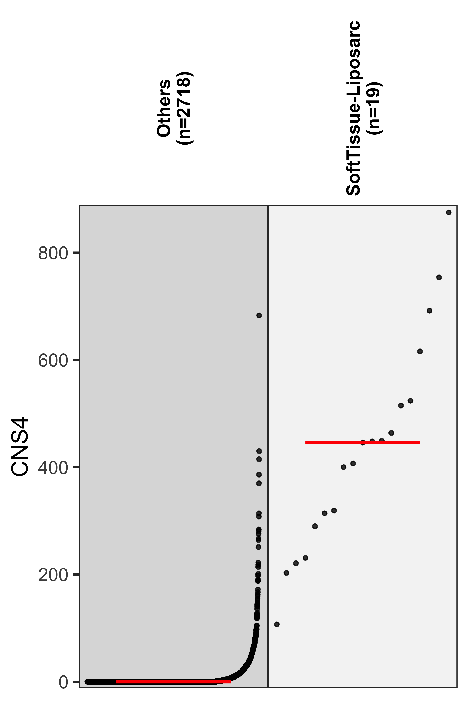 Check copy number distribution for the "SoftTissue-Liposarc" samples.
samples <- df_abs[cancer_type == "SoftTissue-Liposarc"]$sample
pcawg_cn_obj <- readRDS("../data/pcawg_cn_obj.rds")
cn_dt <- subset(pcawg_cn_obj@data, sample %in% samples)
cn_dt$segLen <- cn_dt$end - cn_dt$start + 1Copy number value:
boxplot(cn_dt$segVal, ylab = "Copy number value")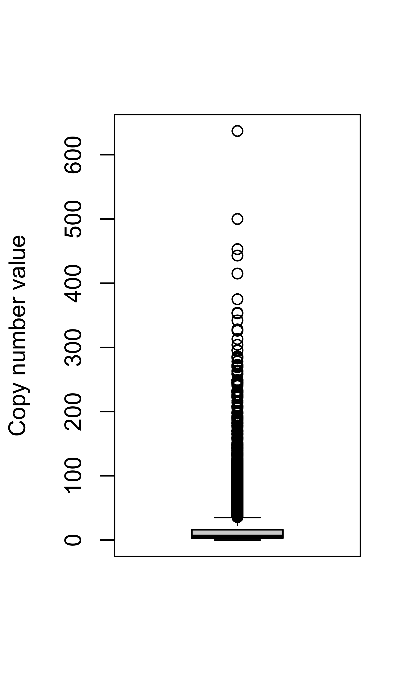
Segment length:
boxplot(cn_dt$segLen, ylab = "Segment length")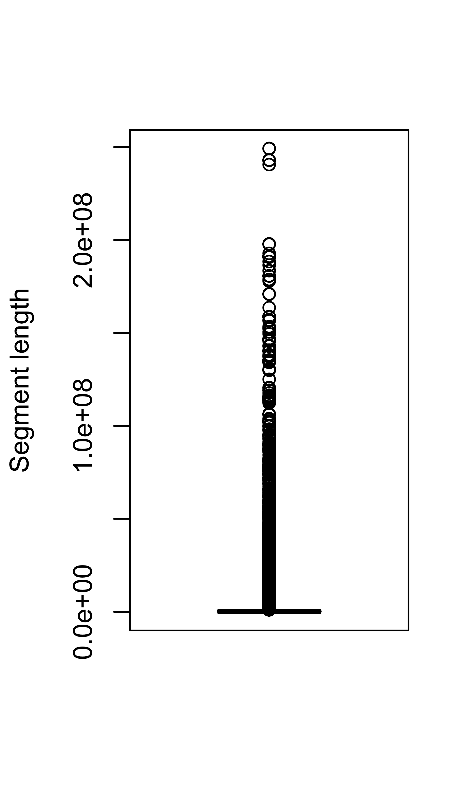
cn_dt_samp <- cn_dt[, .(nAMP = sum(segVal > 2)), by = sample]boxplot(cn_dt_samp$nAMP, ylab = "Number of amplifications")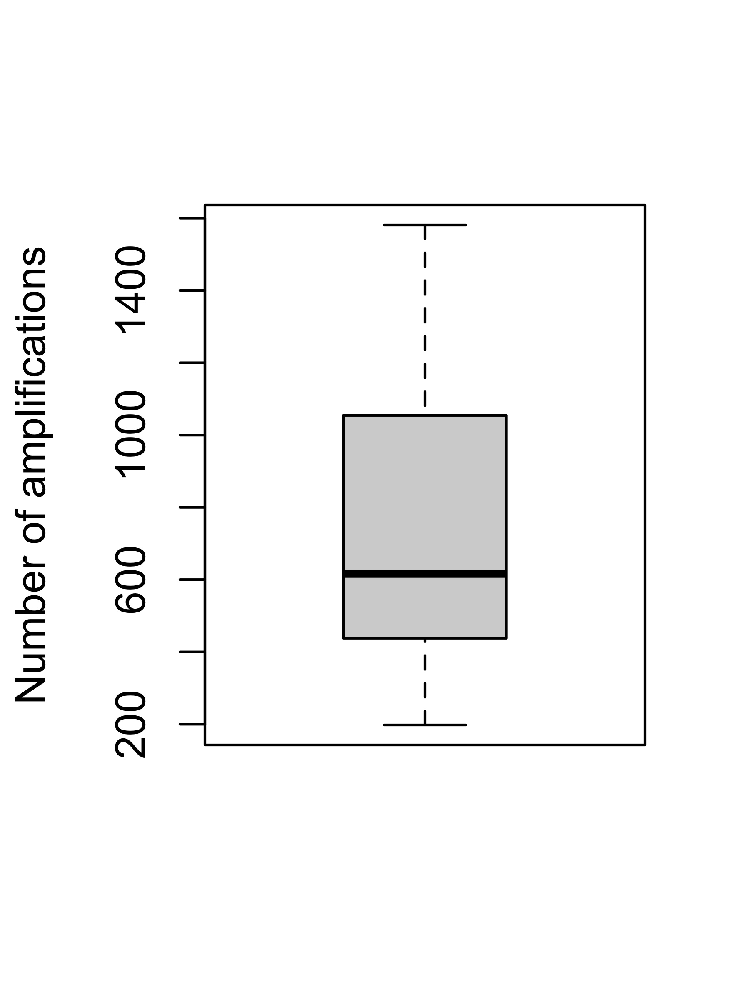
PART 4: Cancer subtyping and prognosis analysis
In this part, we would like to cluster all tumors based on CN signatures and use the clusters to explore Pan-Cancer heterogeneity.
Data integration
Many raw data have been processed by tools (or collected) and cleaned. This part I mainly describe how to combine them to construct the integrated dataset.
If you care about the data (source) shown below, please check the last section of PART 0.
library(pacman)
p_load(
tidyverse,
data.table,
sigminer,
IDConverter
)Load pre-processed data.
pcawg_cn_obj <- readRDS("../data/pcawg_cn_obj.rds")
pcawg_cn_sig <- readRDS("../data/pcawg_cn_sigs_CN176_signature.rds")
pcawg_samp_info_sp <- readRDS("../data/pcawg_samp_info_sp.rds")
samp_summary <- pcawg_cn_obj@summary.per.sample
samp_summary$n_loh <- NULLCheck if all samples are recorded.
all(pcawg_cn_obj@summary.per.sample$sample %in% pcawg_samp_info_sp$pcawg_specimen_histology_August2016_v9$icgc_specimen_id)pcawg_samp_info_sp <- lapply(pcawg_samp_info_sp, function(x) {
colnames(x)[1] <- "sample"
x
})
pcawg_samp_info <- purrr::reduce(pcawg_samp_info_sp, dplyr::full_join, by = "sample")
pcawg_samp_info <- pcawg_samp_info %>% dplyr::filter(sample %in% pcawg_cn_obj@summary.per.sample$sample)
rm(pcawg_samp_info_sp)Refer to PCAWG Mutational Signatures Working Group et al. (2020), some cancer types with small sample size should be combined.
table(pcawg_samp_info$histology_abbreviation)pcawg_samp_info <- pcawg_samp_info %>%
mutate(
cancer_type = case_when(
startsWith(histology_abbreviation, "Breast") ~ "Breast",
startsWith(histology_abbreviation, "Biliary-AdenoCA") ~ "Biliary-AdenoCA",
histology_abbreviation %in% c("Bone-Epith", "Bone-Benign") ~ "Bone-Other",
startsWith(histology_abbreviation, "Cervix") ~ "Cervix",
histology_abbreviation %in% c("Myeloid-AML, Myeloid-MDS", "Myeloid-AML, Myeloid-MPN", "Myeloid-MDS", "Myeloid-MPN") ~ "Myeloid-MDS/MPN",
TRUE ~ histology_abbreviation
)
)Select important features.
pcawg_samp_info <- pcawg_samp_info %>%
dplyr::select(c(
"sample", "_PATIENT", "donor_sex", "donor_age_at_diagnosis",
"donor_survival_time", "donor_vital_status", "first_therapy_type",
"tobacco_smoking_history_indicator", "alcohol_history",
"dcc_project_code", "dcc_specimen_type",
"histology_abbreviation", "cancer_type",
"tumour_stage",
"level_of_cellularity"
))
colnames(pcawg_samp_info)[2] <- "donor_id"
# Remove duplicated samples
pcawg_samp_info <- pcawg_samp_info[!duplicated(pcawg_samp_info$sample), ]Get signature activities.
pcawg_activity <- readRDS("../data/pcawg_cn_sigs_CN176_activity.rds")
expo_abs <- pcawg_activity$absolute[, lapply(.SD, function(x) if (is.numeric(x)) round(x, digits = 3) else x)]
colnames(expo_abs) <- c("sample", paste0("Abs_", colnames(expo_abs)[-1]))
expo_rel <- pcawg_activity$relative[, lapply(.SD, function(x) if (is.numeric(x)) round(x, digits = 3) else x)]
colnames(expo_rel) <- c("sample", paste0("Rel_", colnames(expo_rel)[-1]))
pcawg_activity2 <- dplyr::left_join(expo_abs, expo_rel, by = "sample")
pcawg_activity2 <- dplyr::left_join(pcawg_activity2, pcawg_activity$similarity, by = "sample")
pcawg_activity2$keep <- pcawg_activity2$similarity > 0.75
pcawg_activity <- pcawg_activity2
rm(pcawg_activity2, expo_abs, expo_rel)Read tumor purity & ploidy & WGD status.
dt_pp <- fread("../data/PCAWG/consensus.20170217.purity.ploidy_sp")
dt_pp <- dt_pp[, c("samplename", "purity", "ploidy", "wgd_status")]
colnames(dt_pp)[1] <- "sample"Calculate fusion events in all samples.
fusion <- fread("../data/PCAWG/pcawg3_fusions_PKU_EBI.gene_centric.sp.xena")
fusion <- as.matrix(fusion[, -1])
fusion <- apply(fusion, 2, sum)
fusion <- dplyr::tibble(
sample = names(fusion),
n_fusion = as.numeric(fusion)
)Load HRD status in all samples.
HRD <- readRDS("../data/PCAWG/pcawg_CHORD.rds")
HRD <- HRD %>%
dplyr::select(icgc_specimen_id, is_hrd, genotype_monoall) %>%
set_names(c("sample", "hrd_status", "hrd_genotype")) %>%
unique()Read LOH data.
LOH <- readRDS("../data/pcawg_loh.rds")Read Chromothripsis data and clean it.
# http://compbio.med.harvard.edu/chromothripsis/
chromothripsis <- fread("../data/PCAWG/PCAWG-ShatterSeek.txt.gz")
chromothripsis <- chromothripsis[, c("icgc_donor_id", "type_chromothripsis", "chromo_label")]
# Check label
table(chromothripsis$chromo_label)
any(is.na(chromothripsis$chromo_label))
# Summarize
chromothripsis_summary <- chromothripsis[
, .(
n_chromo = sum(chromo_label != "No"),
chromo_type = paste0(na.omit(type_chromothripsis), collapse = "/")
),
by = icgc_donor_id
]
chromothripsis_summary <- merge(chromothripsis_summary, pcawg_full[, c("icgc_donor_id", "icgc_specimen_id")],
by = "icgc_donor_id"
) %>% unique()
chromothripsis_summary$icgc_donor_id <- NULL
colnames(chromothripsis_summary)[3] <- "sample"
rm(chromothripsis)Read AmpliconArchitect results.
aa1 <- readxl::read_excel("../data/PCAWG/ecDNA.xlsx", skip = 1)
aa2 <- readxl::read_excel("../data/PCAWG/ecDNA.xlsx", sheet = 3)
table(aa1$amplicon_classification)
table(aa2$sample_classification)
all(aa1$sample_barcode %in% aa2$sample_barcode)
aa_summary <- aa1 %>%
dplyr::group_by(sample_barcode) %>%
dplyr::summarise(
n_amplicon_BFB = sum(amplicon_classification == "BFB", na.rm = TRUE),
n_amplicon_ecDNA = sum(amplicon_classification == "Circular", na.rm = TRUE),
n_amplicon_HR = sum(amplicon_classification == "Heavily-rearranged", na.rm = TRUE),
n_amplicon_Linear = sum(amplicon_classification == "Linear", na.rm = TRUE),
.groups = "drop"
)
data.table::setDT(aa_summary)
custom_dt <- IDConverter::pcawg_simple[, c("submitted_specimen_id", "icgc_specimen_id")]
custom_dt <- custom_dt[startsWith(submitted_specimen_id, "TCGA")]
custom_dt[, submitted_specimen_id := substr(submitted_specimen_id, 1, 15)]
aa_summary[
, sample := ifelse(
startsWith(sample_barcode, "SA"),
convert_pcawg(sample_barcode, from = "icgc_sample_id", to = "icgc_specimen_id"),
convert_custom(sample_barcode, from = "submitted_specimen_id", to = "icgc_specimen_id", dt = custom_dt)
)
]
## Filter out samples not in PCAWG
aa_summary <- aa_summary[!is.na(sample)][, sample_barcode := NULL]
rm(aa1, aa2, custom_dt)Read TelomereHunter results.
TC <- readxl::read_excel("../data/PCAWG/TelomereContent.xlsx")
TC <- TC %>% dplyr::select(c("icgc_specimen_id", "tel_content_log2"))
colnames(TC)[1] <- "sample"
data.table::setDT(TC)apobec <- read_tsv("../data/PCAWG/MAF_Aug31_2016_sorted_A3A_A3B_comparePlus.txt", col_types = cols())
apobec <- apobec %>%
dplyr::select(c(1, 5)) %>%
data.table::as.data.table() %>%
setNames(c("sample", "APOBEC_mutations"))Combine and save result combined data.
pcawg_samp_info <- purrr::reduce(list(
pcawg_samp_info,
pcawg_activity,
samp_summary,
dt_pp,
fusion,
HRD,
LOH,
chromothripsis_summary,
aa_summary,
TC,
apobec
),
dplyr::left_join,
by = "sample"
)
saveRDS(pcawg_samp_info, file = "../data/pcawg_sample_tidy_info.rds")
## Remove all objects
rm(list = ls())Clustering with signature activity
Here, we use recent consensus clustering toolkit cola.
We take 2 steps to obtain a robust clustering result:
- We sort all samples by their total signature activities and randomly select
500samples for running multiple methods provided bycolaat the same time, then pick up the optimal method combination. - We run clustering for all samples by the method combination above and check the cola report to determine the suitable cluster number.
Step 1: select suitable method combination
There are 2 key arguments in cola clustering function:
top_value_method: used to extract rows (i.e. signatures here) with top values.partition_method: used to select partition method.
We try all combinations with randomly selected 500 samples to explore the suitable setting.
library(cola)
library(tidyverse)
act <- readRDS("../data/pcawg_cn_sigs_CN176_activity.rds")
df <- purrr::reduce(
list(
act$absolute,
act$similarity
),
dplyr::left_join,
by = "sample"
)
mat <- df %>%
filter(similarity > 0.75) %>%
select(sample, starts_with("CNS")) %>%
column_to_rownames("sample") %>%
t()
mat_adj <- adjust_matrix(mat)
# 1 rows have been removed with too low variance (sd < 0.05 quantile)
rownames(mat_adj)
# Select suitable parameters ----------------------------------------------
ds <- colSums(mat_adj)
boxplot(ds)
set.seed(123)
select_samps <- sample(names(sort(ds)), 500)
boxplot(ds[select_samps])
rl_samp <- run_all_consensus_partition_methods(mat_adj[, select_samps], top_n = 13, mc.cores = 8, max_k = 10)
cola_report(rl_samp, output_dir = "../output/cola_report/pcawg_sigs_500_sampls", mc.cores = 8)
rm(rl_samp)The cola output report is very big and isn’t suitable to show, here I only include key figures to determine the parameter setting.
# Cluster number 2
knitr::include_graphics("cola-test-figs/tab-collect-stats-from-consensus-partition-list-1-1.png")
# Cluster number 3
knitr::include_graphics("cola-test-figs/tab-collect-stats-from-consensus-partition-list-2-1.png")
# Cluster number 4
knitr::include_graphics("cola-test-figs/tab-collect-stats-from-consensus-partition-list-3-1.png")
# Cluster number 5
knitr::include_graphics("cola-test-figs/tab-collect-stats-from-consensus-partition-list-4-1.png")
# Cluster number 6
knitr::include_graphics("cola-test-figs/tab-collect-stats-from-consensus-partition-list-5-1.png")
# Cluster number 7
knitr::include_graphics("cola-test-figs/tab-collect-stats-from-consensus-partition-list-6-1.png")
# Cluster number 8
knitr::include_graphics("cola-test-figs/tab-collect-stats-from-consensus-partition-list-7-1.png")
# Cluster number 9
knitr::include_graphics("cola-test-figs/tab-collect-stats-from-consensus-partition-list-8-1.png")
# Cluster number 10
knitr::include_graphics("cola-test-figs/tab-collect-stats-from-consensus-partition-list-9-1.png")
Step 2: select suitable cluster number
From figures above we do clearly see that the skmeans partition method fits our data and any top_value_method is okay (because all signatures are used). Finally, we choose combine skmeans (partition method) and ATC (top value method introduced firstly by cola) to run clustering for all samples.
final <- run_all_consensus_partition_methods(
mat_adj,
top_value_method = "ATC",
partition_method = "skmeans",
top_n = 13, mc.cores = 8, max_k = 10
)
cola_report(final, output_dir = "../output/cola_report/pcawg_sigs_all_sampls", mc.cores = 8)
saveRDS(final, file = "../data/pcawg_cola_result.rds")The report can be viewed at here.
Next, we will load the data and visualize to select suitable cluster number.
library(cola)
library(ComplexHeatmap)
library(tidyverse)
cluster_res <- readRDS("../data/pcawg_cola_result.rds")
cluster_res <- cluster_res["ATC", "skmeans"]
cluster_resA 'ConsensusPartition' object with k = 2, 3, 4, 5, 6, 7, 8, 9, 10.
On a matrix with 13 rows and 2737 columns.
Top rows (13) are extracted by 'ATC' method.
Subgroups are detected by 'skmeans' method.
Performed in total 450 partitions by row resampling.
Best k for subgroups seems to be 2.
Following methods can be applied to this 'ConsensusPartition' object:
[1] "cola_report" "collect_classes"
[3] "collect_plots" "collect_stats"
[5] "colnames" "compare_signatures"
[7] "consensus_heatmap" "dimension_reduction"
[9] "functional_enrichment" "get_anno_col"
[11] "get_anno" "get_classes"
[13] "get_consensus" "get_matrix"
[15] "get_membership" "get_param"
[17] "get_signatures" "get_stats"
[19] "is_best_k" "is_stable_k"
[21] "membership_heatmap" "ncol"
[23] "nrow" "plot_ecdf"
[25] "rownames" "select_partition_number"
[27] "show" "suggest_best_k"
[29] "test_to_known_factors" Show different statistics along with different cluster number k, which helps to determine the “best k.”
select_partition_number(cluster_res)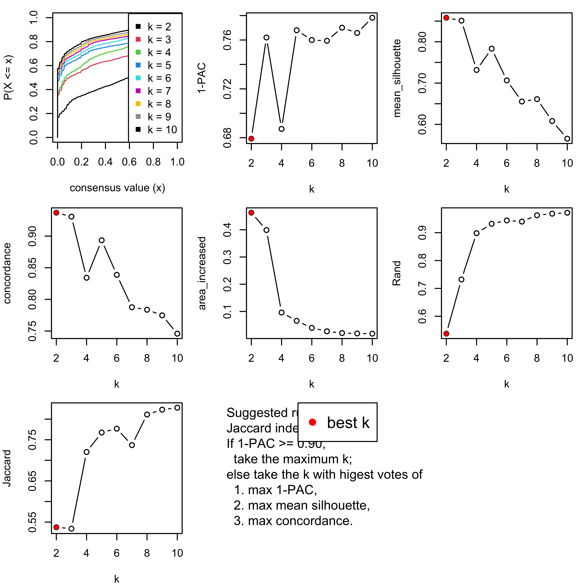
There are many details about all statistical measures shown above at cola vignette. The best k 2 is suggested by cola package due to its better statistical measures. However, in this practice, I think 5 is more suitable.
I have the following reasons:
- Measure
1 - PACreaches convergence atk = 5. - Measure
Silhouettereaches local optimum atk = 5. - Measure
Concordancereaches local optimum atk = 5.
I will draw another plot to show why the two ks are suitable.
collect_classes(cluster_res)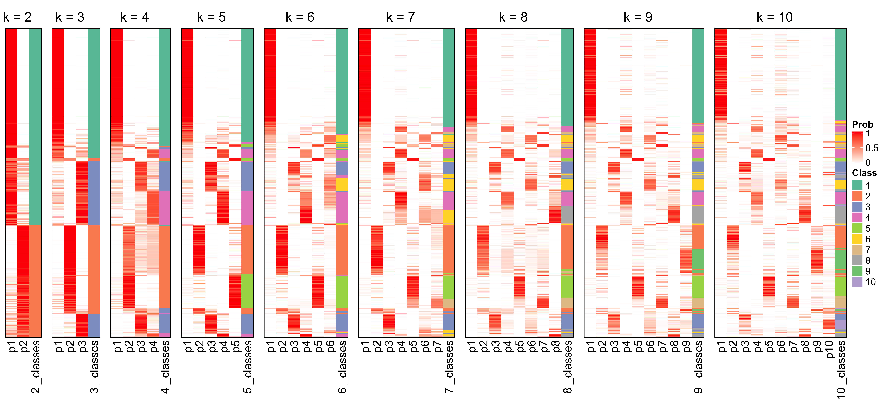
We can see that the probability constitution of class assignment for subgroups for k = 6, 7, 8 are similar to k = 5.
Draw all plots into one single page.
pdf(file = "../output/cola_all_plots.pdf", width = 16, height = 10)
collect_plots(cluster_res)
dev.off()Now we get the cluster labels of samples for downstream analysis.
pcawg_clusters <- get_classes(cluster_res, k = 5)
saveRDS(pcawg_clusters, file = "../data/pcawg_clusters.rds")Heatmap for clustering and genotype/phenotype features
Load tidy sample info.
tidy_info <- readRDS("../data/pcawg_sample_tidy_info.rds")Clean some info.
detect_any <- function(x, p) {
if (length(p) == 1L) {
y <- stringr::str_detect(x, p)
} else {
y <- purrr::map(p, ~ stringr::str_detect(x, .))
y <- purrr::reduce(y, `|`)
}
y[is.na(y)] <- FALSE
y
}
tidy_info <- tidy_info %>%
dplyr::mutate(
# Roughly reassign the staging to TNM stages
# Basically follow 7th TNM staging version, see plot <https://bkimg.cdn.bcebos.com/pic/a8014c086e061d952019ec8773f40ad162d9ca36?x-bce-process=image/watermark,image_d2F0ZXIvYmFpa2U4MA==,g_7,xp_5,yp_5>
#
# Other references:
# https://www.cancer.org/treatment/understanding-your-diagnosis/staging.html
# https://www.cancer.gov/publications/dictionaries/cancer-terms/def/abcd-rating
# https://web.archive.org/web/20081004121942/http://www.oncologychannel.com/prostatecancer/stagingsystems.shtml
# https://baike.baidu.com/item/TNM%E5%88%86%E6%9C%9F%E7%B3%BB%E7%BB%9F/10700513
tumour_stage = case_when(
tumour_stage %in% c("1", "1a", "1b", "A", "I", "IA", "IB", "T1c", "T1N0") | detect_any(tumour_stage, c("T1N0M0", "T1aN0M0", "T1bN0M0", "T2aN0M0")) ~ "I",
tumour_stage %in% c("2", "2a", "2b", "B", "II", "IIA", "IIB", "T3a", "T3aN0") | detect_any(tumour_stage, c("T2bN0M0", "T3N0M0", "T[^34]N1.*M0")) ~ "II",
tumour_stage %in% c("3", "3a", "3b", "3c", "C", "III", "IIIA", "IIIB", "IIIC") | detect_any(tumour_stage, c("N[23].*M0", "T3N1.*M0", "T4.*M0")) ~ "III",
tumour_stage %in% c("4", "IV", "IVA") | detect_any(tumour_stage, "M[^0X]") ~ "IV",
TRUE ~ "Unknown"
),
first_therapy_type = ifelse(first_therapy_type == "monoclonal antibodies (for liquid tumours)",
"other therapy", first_therapy_type
)
)Generate annotation data for plotting.
anno_df <- tidy_info %>%
dplyr::filter(keep) %>%
dplyr::select(
sample,
donor_age_at_diagnosis, n_of_amp, n_of_del, n_of_vchr, cna_burden, purity, ploidy,
n_LOH, n_fusion, n_chromo, n_amplicon_BFB, n_amplicon_ecDNA, n_amplicon_HR, n_amplicon_Linear,
tel_content_log2,
donor_sex, tumour_stage, wgd_status, hrd_status
) %>%
dplyr::mutate_at(
vars(n_fusion, n_chromo, n_amplicon_BFB, n_amplicon_ecDNA, n_amplicon_HR, n_amplicon_Linear),
~ ifelse(is.na(.), 0, .)
) %>%
dplyr::mutate(hrd_status = ifelse(hrd_status, "hrd", "no_hrd")) %>%
rename(
Age = donor_age_at_diagnosis,
AMPs = n_of_amp,
DELs = n_of_del,
Affected_Chrs = n_of_vchr,
CNA_Burden = cna_burden,
Purity = purity,
Ploidy = ploidy,
LOHs = n_LOH,
Fusions = n_fusion,
Chromothripsis = n_chromo,
BFBs = n_amplicon_BFB,
ecDNAs = n_amplicon_ecDNA,
HRs = n_amplicon_HR,
Linear_Amplicons = n_amplicon_Linear,
`Telomere_Content(log2)` = tel_content_log2,
Sex = donor_sex,
Tumor_Stage = tumour_stage,
WGD_Status = wgd_status,
HRD_Status = hrd_status
) %>%
tibble::column_to_rownames("sample")
saveRDS(anno_df, file = "../data/pcawg_tidy_anno_df.rds")
left_annotation <- rowAnnotation(foo = anno_text(paste0("CNS", 1:13)))Show heatmap for clusters based on signature activities.
get_signatures(cluster_res,
k = 5, silhouette_cutoff = 0.2, anno = anno_df,
left_annotation = left_annotation
)* 2674/2737 samples (in 5 classes) remain after filtering by silhouette (>= 0.2).
* cache hash: 4b9a944dfe09dbf61fff67d0357a67aa (seed 888).
* calculating row difference between subgroups by Ftest.
* split rows into 4 groups by k-means clustering.
* 13 signatures (100.0%) under fdr < 0.05, group_diff > 0.
* making heatmaps for signatures.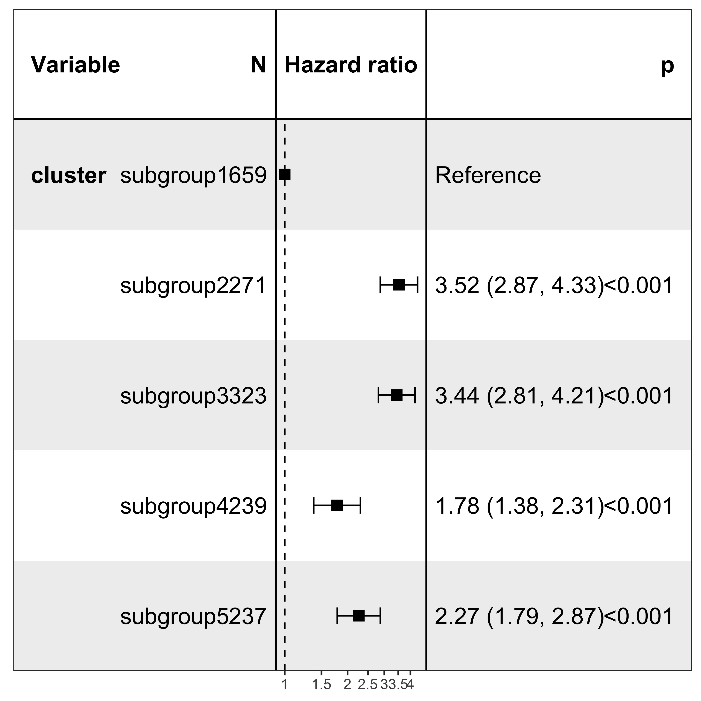
Save to file.
pdf(file = "../output/pcawg_cluster_heatmap.pdf", width = 22, height = 10, onefile = FALSE)
get_signatures(cluster_res, k = 5, silhouette_cutoff = 0.2, anno = anno_df, left_annotation = left_annotation)
dev.off()Exploration of patients’ prognosis difference across clusters
Clean data for survival analysis
library(ezcox)
library(tidyverse)
cluster_df <- readRDS("../data/pcawg_clusters.rds") %>%
as.data.frame() %>%
tibble::rownames_to_column("sample")
tidy_info <- readRDS("../data/pcawg_sample_tidy_info.rds")
df_os <- tidy_info %>%
dplyr::filter(keep) %>%
dplyr::select(sample, donor_vital_status, donor_survival_time) %>%
purrr::set_names(c("sample", "os", "time")) %>%
na.omit() %>%
mutate(
os = ifelse(os == "deceased", 1, 0),
time = time / 365
) %>%
left_join(cluster_df, by = "sample")
colnames(df_os)[4] <- "cluster"
# Use the group with minimal CNV level as reference group
df_os$cluster <- paste0("subgroup", df_os$cluster)Available sample number with OS data:
nrow(df_os)[1] 1729Forest plot
It’s pretty easy to visualize the relationship between subgroups and patient’s prognosis with forest plot by R package ezcox developed by me before.
show_forest(df_os, covariates = "cluster", status = "os", add_caption = FALSE, merge_models = TRUE)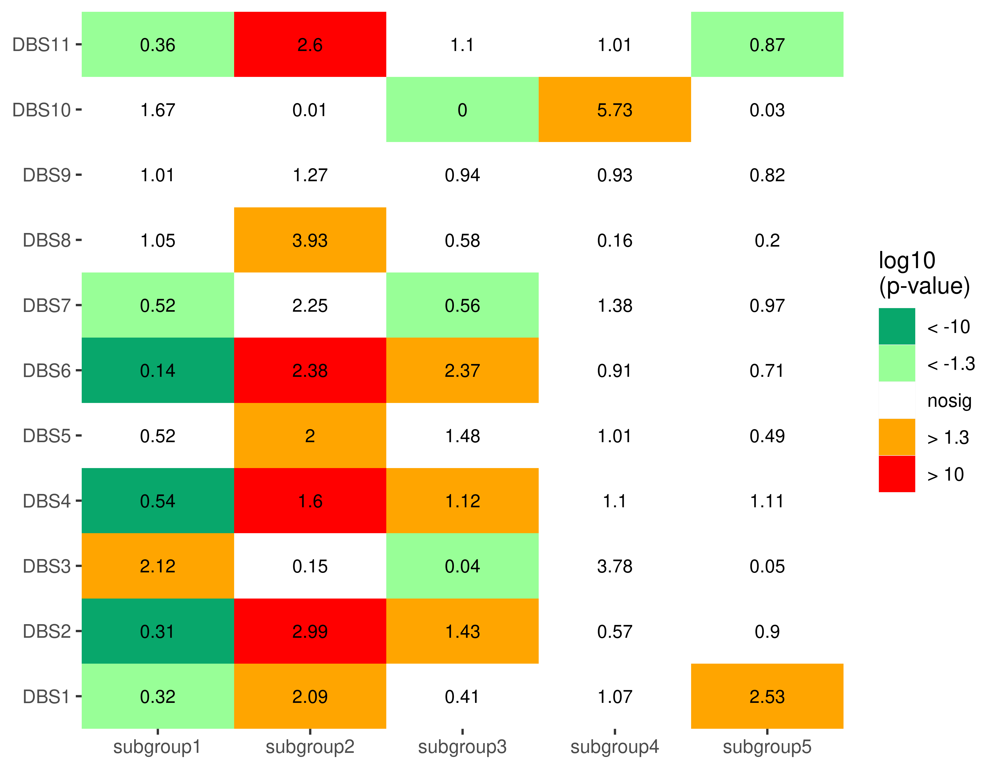
K-M plot
We can also check the OS difference with K-M plot.
library(survival)
library(survminer)sfit <- survfit(Surv(time, os) ~ cluster, data = df_os)
ggsurvplot(sfit,
pval = TRUE,
fun = "pct",
xlab = "Time (in years)",
# palette = "jco",
legend.title = ggplot2::element_blank(),
legend.labs = paste0("subgroup", 1:5),
break.time.by = 5,
risk.table = TRUE,
tables.height = 0.4
)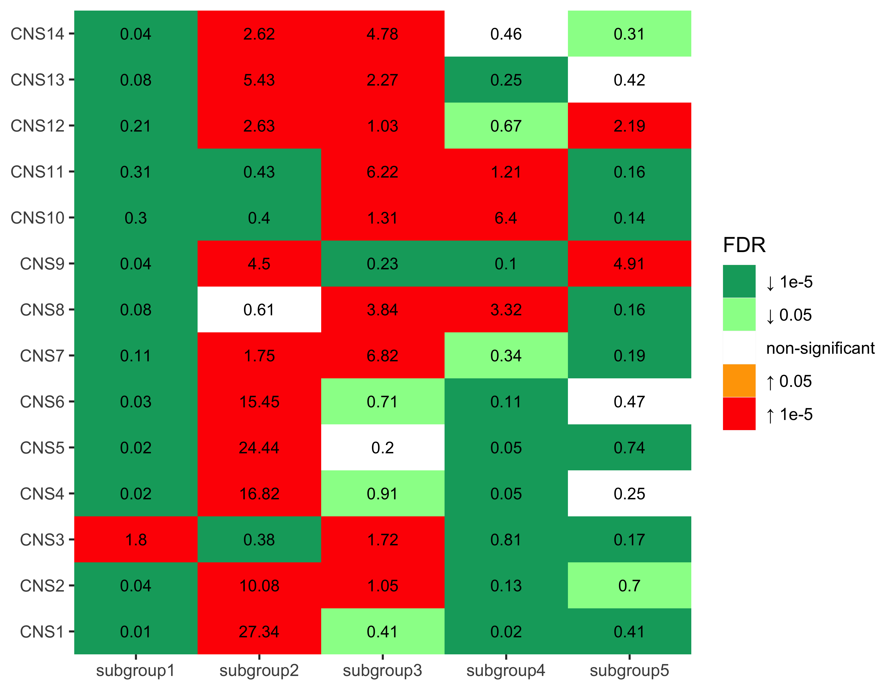
The result has similar meaning as forest plot.
The difference of genotype/phenotype measures across clusters
Signatures
Load SBS/DBS/ID signature activities generated from PCAWG Nature Study.
pcawg_sbs <- read_csv("../data/PCAWG/PCAWG_sigProfiler_SBS_signatures_in_samples.csv")
pcawg_dbs <- read_csv("../data/PCAWG/PCAWG_sigProfiler_DBS_signatures_in_samples.csv")
pcawg_id <- read_csv("../data/PCAWG/PCAWG_SigProfiler_ID_signatures_in_samples.csv")Merge data.
df_merged <- purrr::reduce(
list(
tidy_info,
pcawg_sbs[, -c(1, 3)] %>% dplyr::rename(sample = `Sample Names`) %>%
# Drop Possible sequencing artefact associated signatures
dplyr::select(-SBS43, -c(SBS45:SBS60)),
pcawg_dbs[, -c(1, 3)] %>% dplyr::rename(sample = `Sample Names`),
pcawg_id[, -c(1, 3)] %>% dplyr::rename(sample = `Sample Names`),
cluster_df[, 1:2] %>% purrr::set_names(c("sample", "cluster"))
),
dplyr::left_join,
by = "sample"
) %>%
dplyr::filter(!is.na(cluster)) %>%
mutate(cluster = paste0("subgroup", cluster))
colnames(df_merged) <- gsub("Abs_", "", colnames(df_merged))Enrichment analysis for copy number signatures
library(sigminer)
enrich_result_cn <- group_enrichment(
df_merged,
grp_vars = "cluster",
enrich_vars = paste0("CNS", 1:14),
co_method = "wilcox.test"
)enrich_result_cn$enrich_var <- factor(enrich_result_cn$enrich_var, paste0("CNS", 1:14))
p <- show_group_enrichment(
enrich_result_cn,
fill_by_p_value = TRUE,
cut_p_value = TRUE,
return_list = T
)
p <- p$cluster + labs(x = NULL, y = NULL)
p + coord_flip()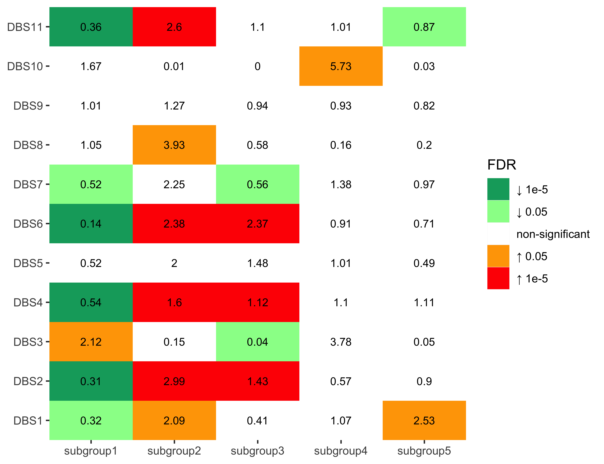
Enrichment analysis for SBS signatures
nm_sbs <- colnames(df_merged)[grepl("SBS", colnames(df_merged))]
enrich_result_sbs <- group_enrichment(
df_merged,
grp_vars = "cluster",
enrich_vars = nm_sbs,
co_method = "wilcox.test"
)enrich_result_sbs$enrich_var <- factor(enrich_result_sbs$enrich_var, nm_sbs)
p <- show_group_enrichment(
enrich_result_sbs,
fill_by_p_value = TRUE,
cut_p_value = TRUE,
return_list = T
)
p <- p$cluster + labs(x = NULL, y = NULL)
p + coord_flip()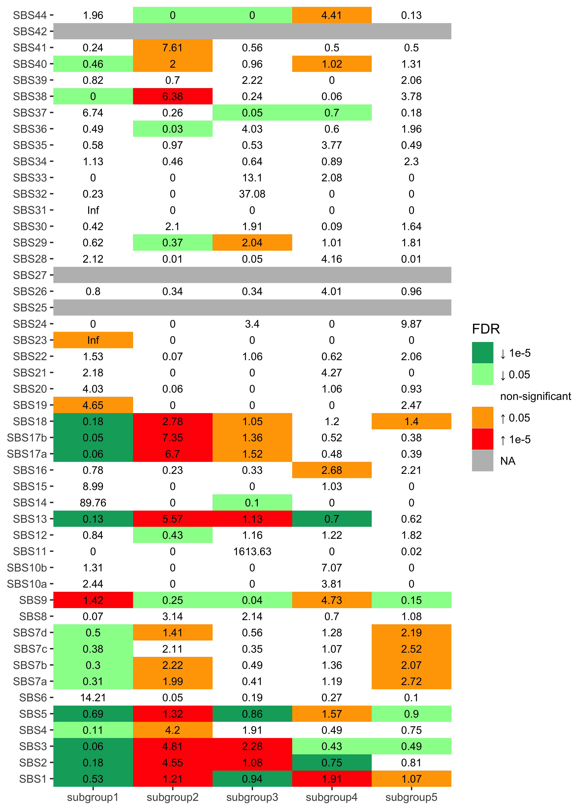
Enrichment analysis for DBS signatures
nm_dbs <- colnames(df_merged)[grepl("DBS", colnames(df_merged))]
enrich_result_dbs <- group_enrichment(
df_merged,
grp_vars = "cluster",
enrich_vars = nm_dbs,
co_method = "wilcox.test"
)enrich_result_dbs$enrich_var <- factor(enrich_result_dbs$enrich_var, nm_dbs)
p <- show_group_enrichment(
enrich_result_dbs,
fill_by_p_value = TRUE,
cut_p_value = TRUE,
return_list = T
)
p <- p$cluster + labs(x = NULL, y = NULL)
p + coord_flip()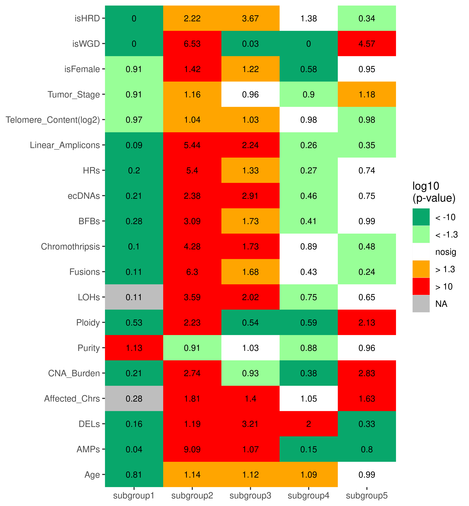
Enrichment analysis for ID signatures
nm_id <- colnames(df_merged)[grepl("^ID[0-9]+", colnames(df_merged))]
enrich_result_id <- group_enrichment(
df_merged,
grp_vars = "cluster",
enrich_vars = nm_id,
co_method = "wilcox.test"
)enrich_result_id$enrich_var <- factor(enrich_result_id$enrich_var, nm_id)
p <- show_group_enrichment(
enrich_result_id,
fill_by_p_value = TRUE,
cut_p_value = TRUE,
return_list = T
)
p <- p$cluster + labs(x = NULL, y = NULL)
p + coord_flip()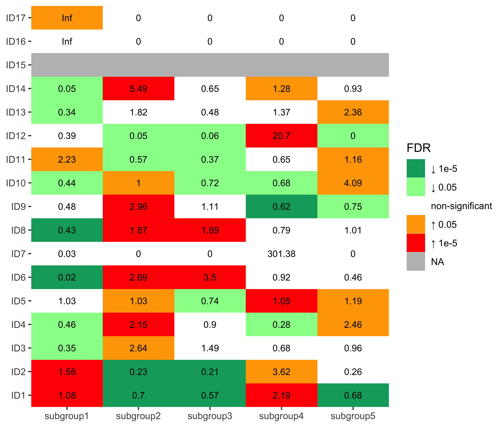
Combined COSMIC signature result
Merge all COSMIC signature results.
enrich_result_cosmic <- purrr::reduce(
list(enrich_result_sbs, enrich_result_dbs, enrich_result_id),
rbind
)移除带 NA 和 Inf 的 signatures 结果，然后绘制一个汇总图，对 signatures 进行聚类，以确定 signature 排序。
Word cloud plot for COSMIC signature etiologies
There are so many COSMIC signatures above, it is not easy to summarize the data. Considering all COSMIC signatures are labeled and many of them have been assigned to a specific etiology, here we try to use word cloud plot to summarize the result above.
Load etiologies of COSMIC signatures.
cosmic_ets <- purrr::reduce(
list(
sigminer::get_sig_db("SBS")$aetiology %>% tibble::rownames_to_column("sig_name"),
sigminer::get_sig_db("DBS")$aetiology %>% tibble::rownames_to_column("sig_name"),
sigminer::get_sig_db("ID")$aetiology %>% tibble::rownames_to_column("sig_name")
),
rbind
)DT::datatable(cosmic_ets)Generate a data.frame for plotting. We only keep significantly and positively enriched signatures in each subgroup. We note that descriptions for many signatures are too long, thus we use short names.
df_ets <- enrich_result_cosmic %>%
dplyr::filter(p_value < 0.05 & measure_observed > 1) %>%
dplyr::select(grp1, enrich_var) %>%
dplyr::left_join(cosmic_ets, by = c("enrich_var" = "sig_name")) %>%
dplyr::mutate(
aetiology = dplyr::case_when(
grepl("APOBEC", aetiology) ~ "APOBEC",
grepl("Tobacco", aetiology) ~ "Tobacco",
grepl("clock", aetiology) ~ "Clock",
grepl("Ultraviolet", aetiology, ignore.case = TRUE) ~ "UV",
grepl("homologous recombination", aetiology) ~ "HRD",
grepl("mismatch repair", aetiology) ~ "dMMR",
grepl("Slippage", aetiology) ~ "Slippage",
grepl("base excision repair", aetiology) ~ "dBER",
grepl("NHEJ", aetiology) ~ "NHEJ repair",
grepl("reactive oxygen", aetiology) ~ "ROS",
grepl("Polymerase epsilon exonuclease", aetiology) ~ "Polymerase epsilon mutation",
grepl("eta somatic hypermutation", aetiology) ~ "Polimerase eta hypermutation",
TRUE ~ aetiology
)
) %>%
dplyr::count(grp1, aetiology) %>%
dplyr::filter(!aetiology %in% c("Unknown", "Possible sequencing artefact"))Plotting.
library(ggwordcloud)
set.seed(42)
ggplot(df_ets, aes(label = aetiology, size = n)) +
geom_text_wordcloud_area(eccentricity = .35, shape = "square") +
scale_size_area(max_size = 14) +
facet_wrap(~grp1) +
theme_bw()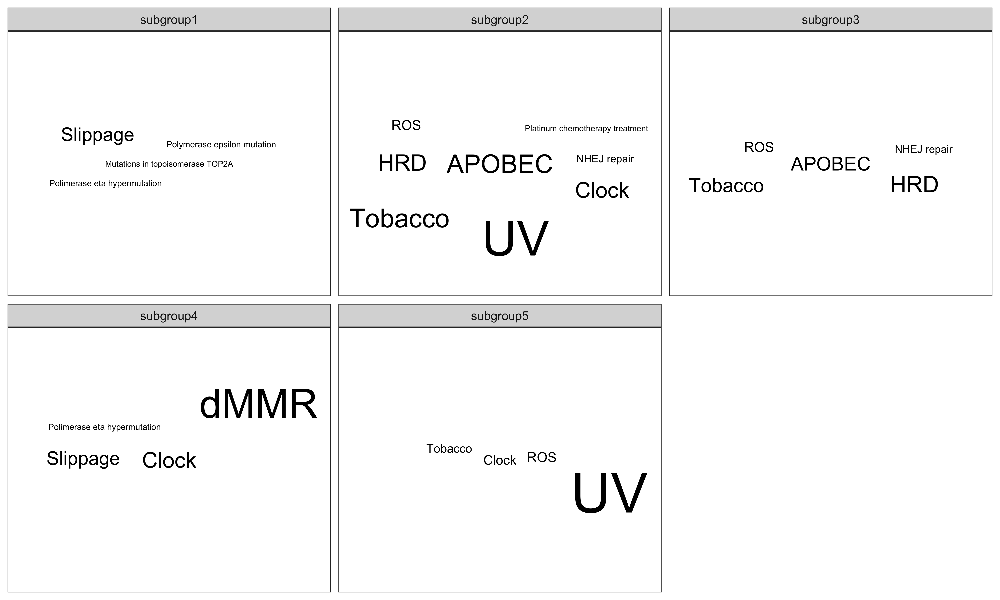
Other integrated variables
df_others <- readRDS("../data/pcawg_tidy_anno_df.rds") %>%
tibble::rownames_to_column("sample") %>%
dplyr::left_join(
cluster_df[, 1:2] %>% purrr::set_names(c("sample", "cluster")),
by = "sample"
) %>%
dplyr::mutate(
Tumor_Stage = dplyr::case_when(
Tumor_Stage == "I" ~ 1,
Tumor_Stage == "II" ~ 2,
Tumor_Stage == "III" ~ 3,
Tumor_Stage == "IV" ~ 4
),
isFemale = Sex == "female",
isWGD = WGD_Status == "wgd",
isHRD = HRD_Status == "hrd",
cluster = paste0("subgroup", cluster)
) %>%
dplyr::select(-c(Sex, WGD_Status, HRD_Status))nm_others <- setdiff(colnames(df_others), c("sample", "cluster"))
enrich_result_others <- group_enrichment(
df_others,
grp_vars = "cluster",
enrich_vars = nm_others,
co_method = "wilcox.test"
)enrich_result_others$enrich_var <- factor(enrich_result_others$enrich_var, nm_others)
p <- show_group_enrichment(
enrich_result_others,
fill_by_p_value = TRUE,
cut_p_value = TRUE,
return_list = T
)
p <- p$cluster + labs(x = NULL, y = NULL)
p + coord_flip()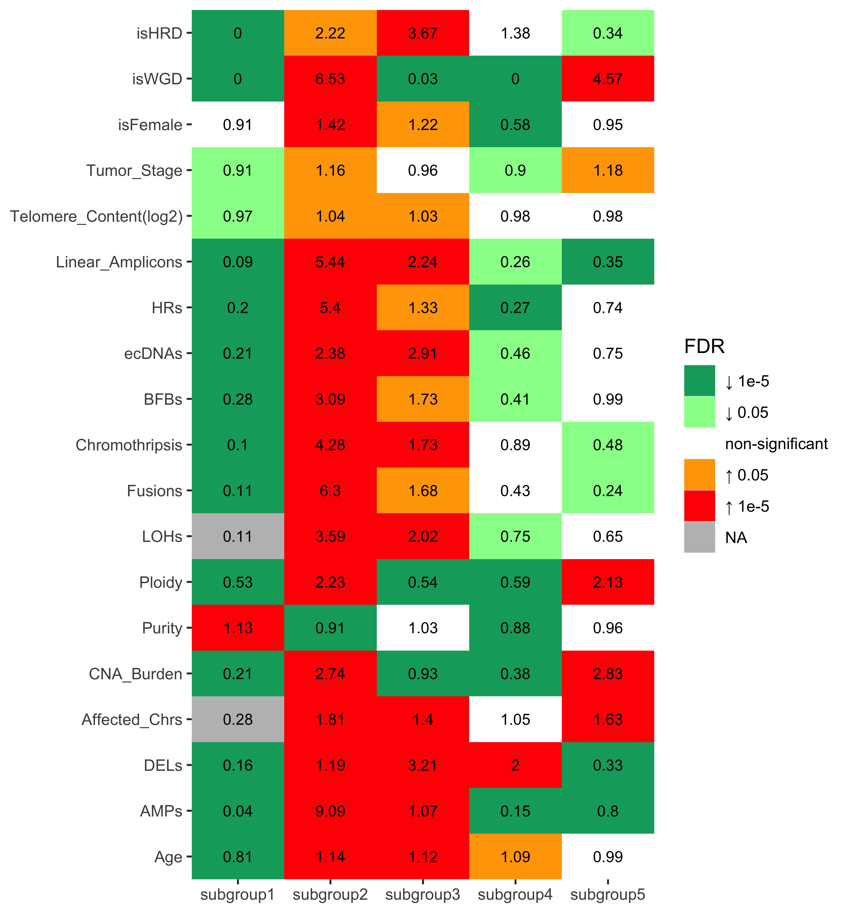
The
HRhere representsHeavily rearrangement, don’t mix it withHRDwhich meansDefective homologous recombination DNA damage repair.
DNA-repair genes
We collect pathogeniv germline variants and somatic driver mutations in DNA-repair genes. Identification of pathogenic variants in human kinases from the PCAWG Drivers and Functional Interpretation Group (https://dcc.icgc.org/releases/PCAWG/driver_mutations). The file TableS3_panorama_driver_mutations_ICGC_samples.public.tsv.gz reported both somatic and pathogenic germline variants.
choose DNA-repair genes
repair.select <- c(
"ATM", "BRCA1", "BRCA2", "CDK12", "CHEK2",
"FANCA", "FANCC", "FANCD2", "FANCF",
# "MSH2",
"MSH3", "MSH4",
# "MSH5","MSH6",
"PALB2", "POLE", "RAD51B", "TP53"
)select pathogenic gene and count for each sample
pcawg_pathogenic <- dplyr::inner_join(
read.csv2("../data/TableS3_panorama_driver_mutations_ICGC_samples.public.tsv.gz", sep = "\t"),
read.csv2("../data/pcawg_sample_sheet.tsv", sep = "\t")
%>%
dplyr::select(., aliquot_id, icgc_specimen_id, dcc_project_code) %>%
dplyr::rename(., sample_id = "aliquot_id"),
by = "sample_id"
) %>%
dplyr::select(., gene, icgc_specimen_id) %>%
dplyr::rename(., Sample = "icgc_specimen_id") %>%
subset(., gene %in% repair.select) %>%
.[!duplicated(.), ] %>%
dplyr::mutate(num = 1)Driver genes
We have already observed that there are different mutational processes across different groups. Here we try to go further study if different driver genes activate in different groups.
We obtained coding driver mutations from UCSC Xena database. For known driver genes, we focus on driver gene list obtained from Martínez-Jiménez et al. (2020).
load("../data/pcawg_driver_info.RData")
df_mut <- dplyr::left_join(df_others[, c("sample", "cluster")],
pcawg_driver_number,
by = "sample"
)
colnames(df_mut)[3] <- "Driver_variants"
df_mut$Driver_variants <- ifelse(is.na(df_mut$Driver_variants), 0, df_mut$Driver_variants)
driver_gene_num <- pcawg_driver_gene %>%
dplyr::group_by(sample, ROLE) %>%
dplyr::summarise(driver_genes = n(), .groups = "drop") %>%
tidyr::pivot_wider(names_from = "ROLE", values_from = "driver_genes", values_fill = 0)
df_mut <- dplyr::left_join(df_mut, driver_gene_num, by = "sample")
colnames(df_mut)[4:5] <- c("Act_genes", "LoF_genes")
df_mut$Act_genes <- ifelse(is.na(df_mut$Act_genes), 0, df_mut$Act_genes)
df_mut$LoF_genes <- ifelse(is.na(df_mut$LoF_genes), 0, df_mut$LoF_genes)Also merge into info of each driver gene.
df_mut2 <- df_mut %>%
dplyr::left_join(
pcawg_driver_gene %>%
tidyr::pivot_wider(names_from = "gene", values_from = "ROLE") %>%
dplyr::mutate_at(vars(-sample), ~ !is.na(.)),
by = "sample"
)
## Filter out driver genes with < 10 mutation
gene_sum <- sort(colSums(df_mut2[, -c(1:5)], na.rm = TRUE), decreasing = TRUE)
# 基因按突变数量排序
df_mut2 <- df_mut2 %>% dplyr::select_at(c(colnames(df_mut2)[1:5], names(gene_sum[gene_sum >= 10])))Save the data.
saveRDS(df_mut2, file = "../data/pcawg_mut_df.rds")nm_mut <- setdiff(colnames(df_mut2), c("sample", "cluster"))
enrich_result_mut <- group_enrichment(
df_mut2,
grp_vars = "cluster",
enrich_vars = nm_mut,
co_method = "wilcox.test"
)Filter out genes insignificant in all subgroups.
keep_df <- enrich_result_mut[, .(count = sum(p_value < 0.05)), by = enrich_var]
drop_vars <- keep_df[count == 0]$enrich_var
enrich_result_mut2 <- enrich_result_mut[!enrich_var %in% drop_vars]Plotting.
enrich_result_mut2$enrich_var <- factor(enrich_result_mut2$enrich_var, setdiff(nm_mut, drop_vars))
keep_vars <- setdiff(nm_mut, drop_vars)[-c(1:3)]
labels <- c(nm_mut[1:3], paste0(keep_vars, " (", gene_sum[keep_vars], ")"))
p <- show_group_enrichment(
enrich_result_mut2,
fill_by_p_value = TRUE,
cut_p_value = TRUE,
return_list = T
)
p <- p$cluster + labs(x = NULL, y = NULL)
p + coord_flip() + scale_x_discrete(labels = labels)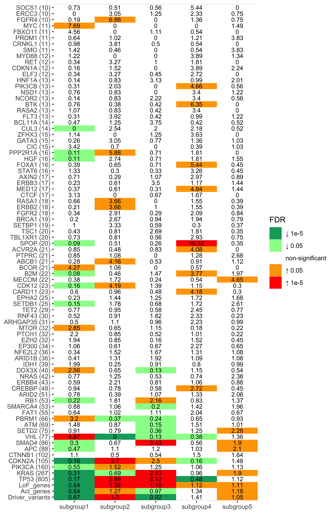
rm(list = ls())PART 5: Inference of copy number signature etiologies
In this part, we would like to explore CN signatures in more details with association analysis and summarize what we get to infer their etiologies.
Let’s merge load all data we got and combine them.
library(tidyverse)
library(sigminer)
tidy_info <- readRDS("../data/pcawg_sample_tidy_info.rds")
tidy_anno <- readRDS("../data/pcawg_tidy_anno_df.rds")
tidy_mut <- readRDS("../data/pcawg_mut_df.rds")
pcawg_sbs <- read_csv("../data/PCAWG/PCAWG_sigProfiler_SBS_signatures_in_samples.csv")
pcawg_dbs <- read_csv("../data/PCAWG/PCAWG_sigProfiler_DBS_signatures_in_samples.csv")
pcawg_id <- read_csv("../data/PCAWG/PCAWG_SigProfiler_ID_signatures_in_samples.csv")
# Use signature relative contribution for analysis
pcawg_sbs <- pcawg_sbs[, -c(1, 3)] %>%
dplyr::rename(sample = `Sample Names`) %>%
dplyr::mutate(s = rowSums(.[, -1])) %>%
dplyr::mutate_at(vars(starts_with("SBS")), ~ . / s) %>%
dplyr::select(-s) %>%
# Drop Possible sequencing artefact associated signatures
dplyr::select(-SBS43, -c(SBS45:SBS60))
pcawg_dbs <- pcawg_dbs[, -c(1, 3)] %>%
dplyr::rename(sample = `Sample Names`) %>%
dplyr::mutate(s = rowSums(.[, -1])) %>%
dplyr::mutate_at(vars(starts_with("DBS")), ~ . / s) %>%
dplyr::select(-s)
pcawg_id <- pcawg_id[, -c(1, 3)] %>%
dplyr::rename(sample = `Sample Names`) %>%
dplyr::mutate(s = rowSums(.[, -1])) %>%
dplyr::mutate_at(vars(starts_with("ID")), ~ . / s) %>%
dplyr::select(-s)Merge data.
df_merged <- purrr::reduce(
list(
tidy_info %>%
dplyr::filter(keep) %>%
dplyr::select(sample, starts_with("Abs"), starts_with("Rel")),
tidy_anno %>%
tibble::rownames_to_column("sample") %>%
dplyr::mutate(
Tumor_Stage = dplyr::case_when(
Tumor_Stage == "I" ~ 1,
Tumor_Stage == "II" ~ 2,
Tumor_Stage == "III" ~ 3,
Tumor_Stage == "IV" ~ 4
),
isFemale = Sex == "female",
isWGD = WGD_Status == "wgd",
isHRD = HRD_Status == "hrd"
) %>%
dplyr::select(-c(Sex, WGD_Status, HRD_Status)),
pcawg_sbs,
pcawg_dbs,
pcawg_id,
tidy_mut %>% dplyr::select(-cluster)
),
dplyr::left_join,
by = "sample"
) %>%
dplyr::mutate_if(
is.logical,
~ ifelse(is.na(.), FALSE, .)
)
colnames(df_merged) <- gsub("Rel_", "", colnames(df_merged))
saveRDS(df_merged, file = "../data/pcawg_merged_df.rds")Association analysis for copy number signatures
Copy number signature activity self-association
show_cor(dplyr::select(df_merged, starts_with("CNS")))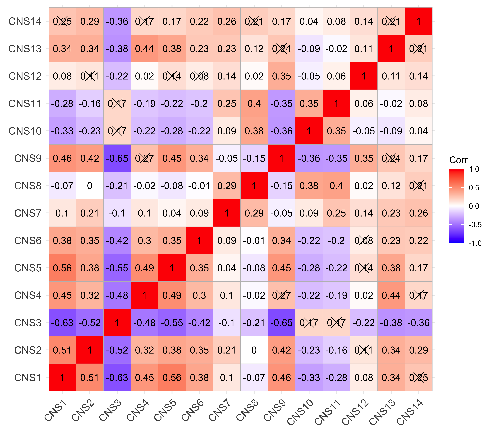
We can find that most the signatures are correlated. Therefore, it will add difficulty in understanding etiologies by association analysis.
Visualize with full correlation network
library(see)
library(ggraph)
library(correlation)
cc <- dplyr::select(df_merged, starts_with("CNS")) %>%
correlation(partial = FALSE, method = "spearman") %>%
dplyr::rename(r = rho)
plot(cc)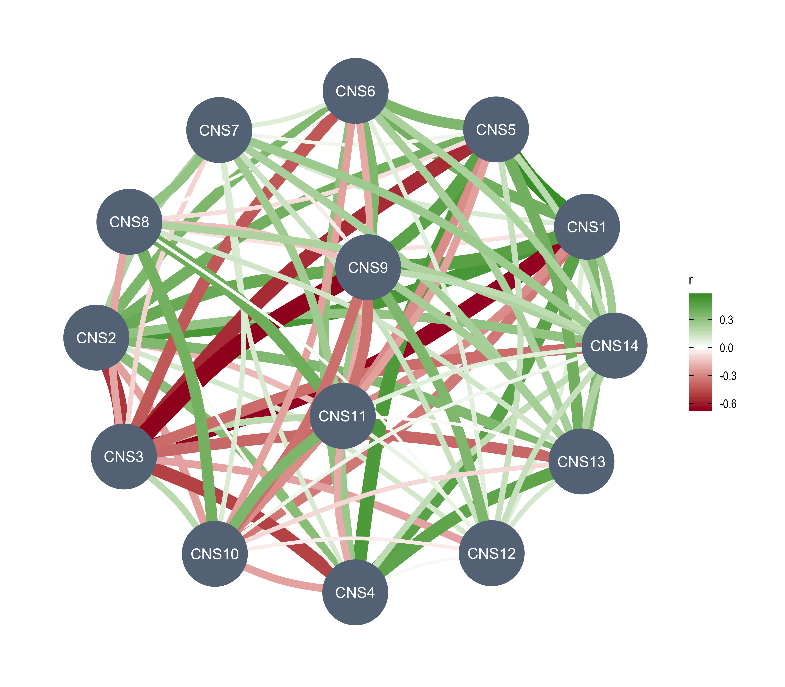
Copy number signatures and COSMIC signatures
p_cosmic <- show_cor(
data = df_merged,
x_vars = colnames(df_merged)[grepl("^CNS|^SBS[0-9]+", colnames(df_merged))],
y_vars = colnames(df_merged)[grepl("^CNS|^SBS[0-9]+", colnames(df_merged))],
hc_order = FALSE,
test = TRUE,
lab_size = 2,
# type = "lower",
insig = "blank"
)
p_cosmic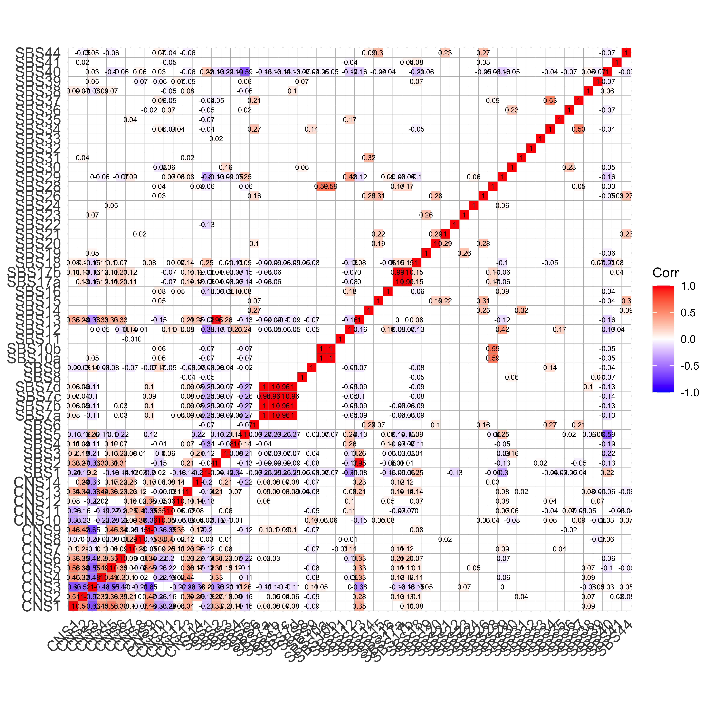
Just show specified signatures:
p_cosmic2 <- show_cor(
data = df_merged,
x_vars = colnames(df_merged)[grepl("^CNS", colnames(df_merged))],
y_vars = c(
"SBS1", "SBS5",
"SBS2", "SBS13", "DBS11",
"SBS3", "ID6", "ID8",
"SBS4", "DBS2",
"SBS9",
"SBS18",
"DBS7", "ID1", "ID2",
"SBS12", "SBS17a", "SBS17b", "DBS6", "ID5", "ID12"
),
hc_order = FALSE,
test = FALSE,
lab_size = 2
)
p_cosmic2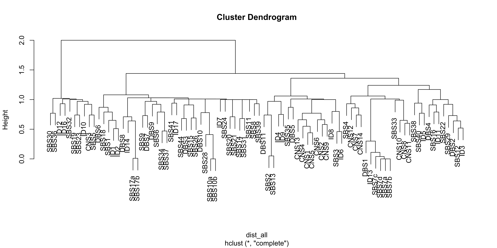
Visualize signature with similar trends with network.
siglist <- list(
c("SBS1", "SBS5"),
c("SBS2", "SBS13", "DBS11"),
c("SBS3", "ID6", "ID8"),
c("SBS4", "DBS2"),
c("SBS9"),
c("SBS18"),
c("DBS7", "ID1", "ID2"),
c("SBS12", "SBS17a", "SBS17b", "DBS6", "ID5", "ID12")
)
for (i in siglist) {
cc <- correlation(
dplyr::select(df_merged, starts_with("CNS")),
dplyr::select_at(df_merged, i),
partial = FALSE, method = "spearman"
) %>%
dplyr::rename(r = rho) %>%
plot()
print(cc)
}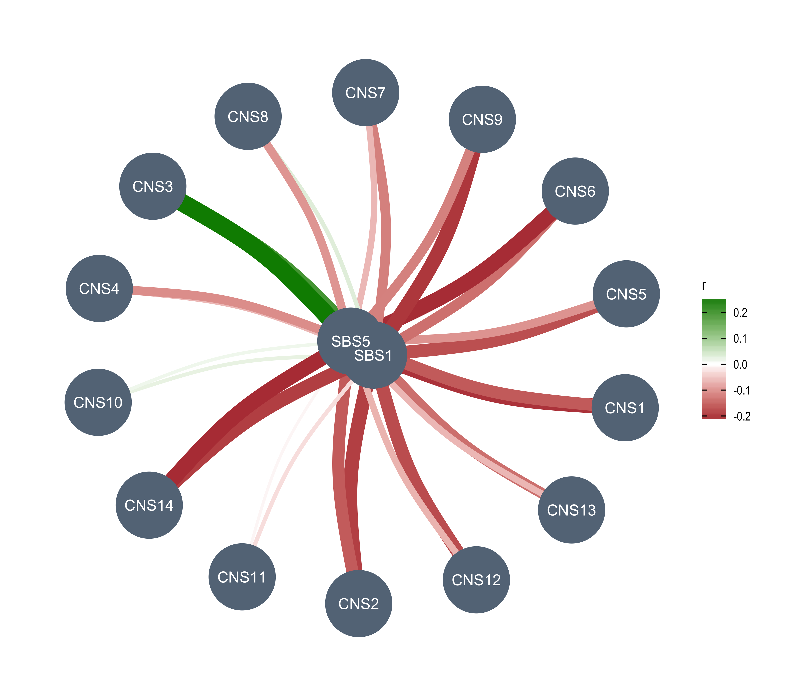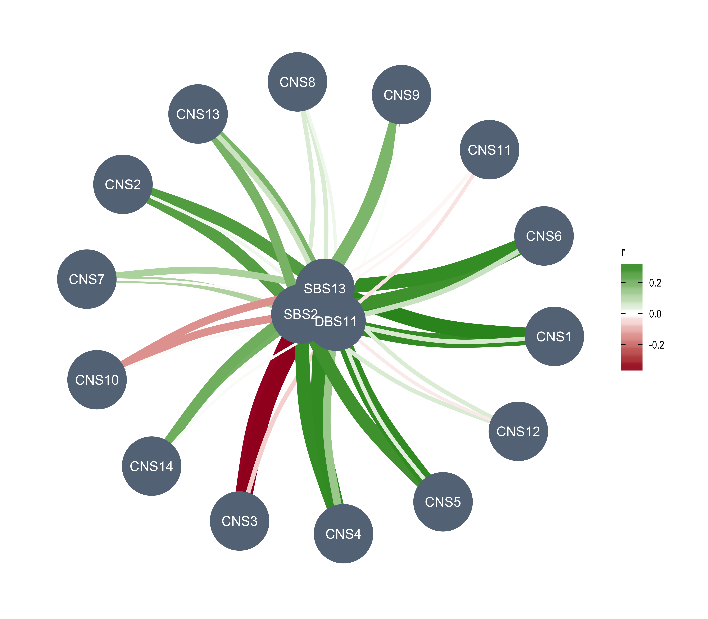
Signature clustering
We can take a try to cluster signatures based on their activity association.
First get the correlation data.
p_all <- show_cor(
data = df_merged,
x_vars = colnames(df_merged)[grepl("^CNS|^SBS|^DBS|^ID[0-9]+", colnames(df_merged))],
y_vars = colnames(df_merged)[grepl("^CNS|^SBS|^DBS|^ID[0-9]+", colnames(df_merged))],
hc_order = FALSE,
test = FALSE,
lab_size = 3
)Get the correlation matrix and convert it into distance matrix.
p_all_cor <- p_all$cor$cor_mat
all_dist <- 1 - p_all_cor
# Set the NA value to 2
all_dist[is.na(all_dist)] <- 2Only include copy number signatures
dist_cn <- as.dist(all_dist[1:14, 1:14])
hc_cn <- hclust(dist_cn)
plot(hc_cn)Roughly there is 3 clusters.
factoextra::fviz_dend(hc_cn, k = 3, rect = T)All signatures
dist_all <- as.dist(all_dist)
hc_all <- hclust(dist_all)
plot(hc_all)Here we manually set 10 clusters for better visualization.
factoextra::fviz_dend(
hc_all,
k = 10,
cex = 0.6, rect = F,
type = "circular"
) + theme_void() +
theme(
panel.border = element_blank()
)# theme(
# panel.background = element_rect(fill = "transparent", colour = NA),
# plot.background = element_rect(fill = "transparent", colour = NA),
# panel.grid = element_blank(),
# panel.border = element_blank(),
# plot.margin = unit(c(0, 0, 0, 0), "null"),
# panel.margin = unit(c(0, 0, 0, 0), "null"),
# axis.ticks = element_blank(),
# axis.text = element_blank(),
# axis.title = element_blank(),
# axis.line = element_blank(),
# legend.position = "none",
# axis.ticks.length = unit(0, "null"),
# axis.ticks.margin = unit(0, "null"),
# legend.margin = unit(0, "null")
# )Association between CNS and genotype/phenotype features
Association between CNS and continuous variables
p_cn_others <- show_cor(
data = df_merged,
x_vars = colnames(df_merged)[16:29],
y_vars = colnames(df_merged)[c(30:44, 125:127)],
lab_size = 3
)
p_cn_othersVisualize it with correlation network one by one.
var_names <- colnames(df_merged)[c(30:44, 125:127)]
df_mut <- df_merged[, var_names] %>%
dplyr::rename(
Telomere_Content = `Telomere_Content(log2)`
)
var_names <- colnames(df_mut)
# dir.create("../output/cor_network")
for (i in var_names) {
# pdf(file.path("../output/cor_network", paste0(i, ".pdf")), width = 6, height = 5)
print(i)
correlation(
df_mut[, i, drop = FALSE],
df_merged[, colnames(df_merged)[16:29]],
partial = FALSE, method = "spearman"
) %>%
dplyr::rename(r = rho) %>%
plot() -> p
print(p)
# dev.off()
}[1] "Age"[1] "AMPs"[1] "DELs"[1] "Affected_Chrs"[1] "CNA_Burden"[1] "Purity"[1] "Ploidy"[1] "LOHs"[1] "Fusions"[1] "Chromothripsis"[1] "BFBs"[1] "ecDNAs"[1] "HRs"[1] "Linear_Amplicons"[1] "Telomere_Content"[1] "Driver_variants"[1] "Act_genes"[1] "LoF_genes"Association between CNS and discrete variables
Here we directly compare the CNS activity between different discrete variable groups.
Here 3 variables including WGD_Status, HRD_Status and Tumor_Stage are included.
df_ds2 <- tidy_info %>%
dplyr::filter(keep) %>%
dplyr::select(sample, starts_with("Abs")) %>%
dplyr::mutate_if(is.numeric, ~ log2(. + 1)) %>%
purrr::set_names(c("sample", paste0("CNS", 1:14))) %>%
dplyr::left_join(
tidy_anno %>%
tibble::rownames_to_column("sample") %>%
dplyr::select(sample, WGD_Status, HRD_Status, Tumor_Stage),
by = "sample"
) %>%
dplyr::mutate(Tumor_Stage = ifelse(Tumor_Stage == "Unknown", NA, Tumor_Stage))
df_ds <- df_ds2 %>%
tidyr::pivot_longer(
starts_with("CNS"),
names_to = "sig_name",
values_to = "activity"
)library(ggpubr)For WGD.
ggboxplot(
df_ds,
x = "sig_name", y = "activity",
color = "WGD_Status",
palette = "jco", width = .3,
xlab = FALSE, ylab = "log2(Activity)",
outlier.size = 0.05
) +
stat_compare_means(aes(group = WGD_Status), label = "p.signif") +
rotate_x_text()CNS3 and CNS9 are highly associated with WGD.
For HRD.
ggboxplot(
df_ds %>%
dplyr::mutate(HRD_Status = factor(HRD_Status, c("no_hrd", "hrd"))),
x = "sig_name", y = "activity",
color = "HRD_Status",
palette = "jco", width = .3,
xlab = FALSE, ylab = "log2(Activity)",
outlier.size = 0.05
) +
stat_compare_means(aes(group = HRD_Status), label = "p.signif") +
rotate_x_text()CNS14 is highly associated with HRD status.
See supplementary analysis for HRD and WGD prediction analysis.
For tumor stage.
ggboxplot(
df_ds %>% dplyr::filter(!is.na(Tumor_Stage)),
x = "sig_name", y = "activity",
color = "Tumor_Stage",
palette = "jco", width = .3,
xlab = FALSE, ylab = "log2(Activity)",
outlier.size = 0.05
) +
stat_compare_means(aes(group = Tumor_Stage),
label = "p.signif",
method = "anova"
) +
rotate_x_text()Association between CNS and driver gene mutation
asso_res <- get_sig_feature_association(
df_merged,
cols_to_sigs = paste0("CNS", 1:14),
cols_to_features = colnames(df_merged)[128:291],
method_ca = wilcox.test,
min_n = 0
)
asso_res_tidy <- get_tidy_association(asso_res)Plotting.
show_sig_feature_corrplot(
asso_res_tidy,
sig_orders = paste0("CNS", 1:14),
p_val = 0.05,
breaks_count = NA,
ylab = NULL,
xlab = NULL
) + ggpubr::rotate_x_text(0, hjust = 0.5) +
labs(color = "Difference\nin means of\nactivity") +
ggpubr::rotate_x_text()
Association between CNS and patients’ prognosis
Get tidy data fro survival analysis.
library(ezcox)
cluster_df <- readRDS("../data/pcawg_clusters.rds") %>%
as.data.frame() %>%
tibble::rownames_to_column("sample")
df_surv <- tidy_info %>%
dplyr::filter(keep) %>%
dplyr::select(
sample, cancer_type, donor_survival_time, donor_vital_status,
dplyr::starts_with("Abs_")
) %>%
dplyr::left_join(
cluster_df,
by = "sample"
) %>%
na.omit() %>%
dplyr::rename(
time = donor_survival_time,
status = donor_vital_status,
cluster = class
) %>%
dplyr::mutate(
status = ifelse(status == "deceased", 1, 0)
) %>%
dplyr::rename_at(vars(starts_with("Abs_")), ~ sub("Abs_", "", .)) %>%
dplyr::mutate_at(vars(starts_with("CNS")), ~ . / 10)We divide all signature activity by 10 to explore the HR change per 10 records contributed by a signature.
Unicox analysis for CNS
Here we focus on the association between each CNS and patients’ overall survival time.
p1 <- show_forest(df_surv,
covariates = paste0("CNS", 1:14),
merge_models = TRUE, add_caption = FALSE, point_size = 2
)
p1Multivariate cox analysis for CNS
We also build a multivariate cox model to explore if all CNSs are included, which is more important?
p2 <- show_forest(df_surv,
covariates = "CNS1", controls = paste0("CNS", 2:14),
merge_models = TRUE, add_caption = FALSE, point_size = 2
)
p2Control the cancer types, and run Cox for each signatures:
p3 <- show_forest(df_surv,
covariates = paste0("CNS", 1:14), controls = "cancer_type",
vars_to_show = paste0("CNS", 1:14),
merge_models = TRUE, add_caption = FALSE, point_size = 2,
)
p3
Control the cancer types, and run Cox for all signatures in one model:
p4 <- show_forest(df_surv,
covariates = "CNS1", controls = c(paste0("CNS", 2:14), "cancer_type"),
vars_to_show = paste0("CNS", 1:14),
merge_models = TRUE, add_caption = FALSE, point_size = 2,
)
p4Signature similarity comparison between different types of signatures
The similarity between signatures is a key parameter, it determines how hard it is to distinguish between signatures and the precision to assign the contribution to a signature. If you have read the paper Maura et al. (2019), you may know that 2 of 3 main issues proposed by the authors are actually because of high similarity between mutational signatures:
- the ambiguous signature assignment that occurs when different combinations of signatures can explain equally well the same mutational catalog.
- bleeding of signatures that signatures present in only part of the set are also erroneously assigned to the entire set.
In this section, we explore the similarity of CNSs discovered in this study and known COSMIC signatures.
Load data.
CNS <- readRDS("../data/pcawg_cn_sigs_CN176_signature.rds")
SBSv2 <- get_sig_db()
SBS <- get_sig_db("SBS")
DBS <- get_sig_db("DBS")
ID <- get_sig_db("ID")Get signature similarity in each signature type.
sim_CNS <- get_sig_similarity(CNS, CNS)$similarity
sim_SBSv2 <- get_sig_similarity(SBSv2$db, SBSv2$db)$similarity
sim_SBS <- get_sig_similarity(SBS$db, SBS$db)$similarity
sim_DBS <- get_sig_similarity(DBS$db, DBS$db)$similarity
sim_ID <- get_sig_similarity(ID$db, ID$db)$similarityOnly use upper matrix to get similarity between one signature and non-self signatures.
a <- sim_CNS[upper.tri(sim_CNS)]
b <- sim_SBSv2[upper.tri(sim_SBSv2)]
c <- sim_SBS[upper.tri(sim_SBS)]
d <- sim_DBS[upper.tri(sim_DBS)]
e <- sim_ID[upper.tri(sim_ID)]
df_sim <- dplyr::tibble(
sig_type = rep(
c("CNS", "SBSv2", "SBS", "DBS", "ID"),
c(length(a), length(b), length(c), length(d), length(e))
),
similarity = c(a, b, c, d, e)
)See header rows:
head(df_sim)# A tibble: 6 x 2
sig_type similarity
<chr> <dbl>
1 CNS 0.34
2 CNS 0
3 CNS 0
4 CNS 0.112
5 CNS 0.018
6 CNS 0 Let’s visualize it and use ‘CNS’ as reference group to run statistical test (‘wilcox.test’ method).
library(ggpubr)
ggboxplot(df_sim,
x = "sig_type", y = "similarity",
color = "sig_type",
xlab = FALSE,
ylab = "Similarity between signatures",
legend = "none",
palette = "jco",
width = 0.3,
outlier.size = 0.05
) +
# stat_compare_means(method = "anova") +
stat_compare_means(
label = "p.signif", method = "wilcox.test",
ref.group = "CNS"
)We can see that signature type CNS has lowest similarity level and CNS signatures are not likely similar to others. CNS has much lower similarity level than all other signature types except DBS.
Data summary and inference of signature etiologies
See our manuscript for the inference.
PART 6: Benchmark analysis
To evaluate the performance of our method across different platform and copy number calling tools. We carried out benchmark analysis in prostate cancer.
Compare the copy number calling algorithms
For WGS, we select copy number from ABSOLUTE and ACEseq. For WES, we select copy number from ABSOLUTE and ASCAT.
tally_SNP_ABSOLUTE <- readRDS("../data/benchmark/tally_SNP_ABSOLUTE_matrix.rds")
tally_SNP_ASCAT2 <- readRDS("../data/benchmark/tally_SNP_ASCAT2_matrix.rds")
# Compare different CNV algorithms in SNP
SNP_sample <- intersect(rownames(tally_SNP_ABSOLUTE), rownames(tally_SNP_ASCAT2))
tally_SNP_ABSOLUTE <- subset(tally_SNP_ABSOLUTE, rownames(tally_SNP_ABSOLUTE) %in% SNP_sample)
tally_SNP_ASCAT2 <- subset(tally_SNP_ASCAT2, rownames(tally_SNP_ASCAT2) %in% SNP_sample)
sim_profile.SNP <- sapply(SNP_sample, function(i) {
dt1.1 <- tally_SNP_ASCAT2[i, ]
dt2.1 <- tally_SNP_ABSOLUTE[i, ]
sigminer:::cosine(dt1.1, dt2.1)
}) %>%
subset(. > 0.4)
median(sim_profile.SNP)[1] 0.8500122hist(sim_profile.SNP,
breaks = 50, xlab = "",
main = "Copy number profile similarity from two methods(SNP)", xlim = range(0, 1)
)
abline(v = 0.8500122, col = "red", lty = 2)We compared the signature between tools in SNP.
SNP_ABSOLUTE_SP_sigs <- readRDS("../data/benchmark/SNP_ABSOLUTE_SP_highmatch.rds")
SNP_ASCAT2_SP_sigs <- readRDS("../data/benchmark/SNP_ASCAT2_SP_highmatch.rds")
colnames(SNP_ABSOLUTE_SP_sigs$solution_list$S4$Signature.norm) <- paste0("SNP_ABSOLUTE_sigs", seq(1:4))
colnames(SNP_ASCAT2_SP_sigs$solution_list$S4$Signature.norm) <- paste0("SNP_ASCAT_sigs", seq(1:4))
sim <- get_sig_similarity(SNP_ABSOLUTE_SP_sigs$solution_list$S4, SNP_ASCAT2_SP_sigs$solution_list$S4)p <- pheatmap::pheatmap(sim$similarity, cluster_cols = F, cluster_rows = F, display_numbers = TRUE)tally_WGS_ABSOLUTE <- readRDS("../data/benchmark/tally_WGS_ABSOLUTE_matrix.rds")
tally_WGS_aceseq <- readRDS("../data/benchmark/tally_WGS_aceseq_matrix.rds")
# Compare different CNV algorithms in WGS
WGS_sample <- intersect(rownames(tally_WGS_ABSOLUTE), rownames(tally_WGS_aceseq))
tally_WGS_ABSOLUTE <- subset(
tally_WGS_ABSOLUTE,
rownames(tally_WGS_ABSOLUTE) %in% WGS_sample
)
tally_WGS_aceseq <- subset(tally_WGS_aceseq, rownames(tally_WGS_aceseq) %in% WGS_sample)
sim_profile.WGS <- sapply(WGS_sample, function(i) {
dt1.1 <- tally_WGS_ABSOLUTE[i, ]
dt2.1 <- tally_WGS_aceseq[i, ]
sigminer:::cosine(dt1.1, dt2.1)
}) %>%
subset(. > 0.4)
hist(sim_profile.WGS,
breaks = 50, xlab = "",
main = "Copy number profile similarity from two methods(WGS)", xlim = range(0, 1)
)
abline(v = 0.9725061, col = "red", lty = 2)We compared the signature between tools in WGS.
WGS_ABSOLUTE_SP_sigs <- readRDS("../data/benchmark/WGS_ABSOLUTE_SP_highmatch.rds")
WGS_aceseq_SP_sigs <- readRDS("../data/benchmark/wgs_aceseq_sig.rds")
colnames(WGS_ABSOLUTE_SP_sigs$solution_list$S4$Signature.norm) <- paste0("WGS_ABSOLUTE_sigs", seq(1:4))
colnames(WGS_aceseq_SP_sigs$Signature.norm) <- paste0("WGS_ACEseq_sigs", seq(1:4))
sim <- get_sig_similarity(WGS_ABSOLUTE_SP_sigs$solution_list$S4, WGS_aceseq_SP_sigs)p <- pheatmap::pheatmap(sim$similarity, cluster_cols = F, cluster_rows = F, display_numbers = TRUE)Compare the data platforms
CNA signatures have been extracted independently from WGS, WES and SNP array derived prostate cancer CNA profiles. We compare the 4 copy number signatures extracted by Sigprofiler platform.
SNP vs WGS
SNP_sigs_source <- readRDS("../data/benchmark/SNP_ABSOLUTE_SP_source.rds")
WGS_sigs_source <- readRDS("../data/benchmark/WGS_ABSOLUTE_SP_source.rds")
WES_sigs_source <- readRDS("../data/benchmark/WES_FACETS_SP_source.rds")
colnames(SNP_sigs_source$solution_list$S4$Signature.norm) <- paste0("SNP_sigs", seq(1:4))
colnames(WGS_sigs_source$solution_list$S4$Signature.norm) <- paste0("WGS_sigs", seq(1:4))
colnames(WES_sigs_source$solution_list$S4$Signature.norm) <- paste0("WES_sigs", seq(1:4))
sim <- get_sig_similarity(SNP_sigs_source$solution_list$S4, WGS_sigs_source$solution_list$S4)p <- pheatmap::pheatmap(sim$similarity, cluster_cols = F, cluster_rows = F, display_numbers = TRUE)SNP vs WES
sim <- get_sig_similarity(SNP_sigs_source$solution_list$S4, WES_sigs_source$solution_list$S4)
p <- pheatmap::pheatmap(
sim$similarity,
cluster_cols = F,
cluster_rows = F,
display_numbers = TRUE,
legend_breaks = c(0.2, 0.4, 0.6, 0.8)
)### WES vs WGS
sim <- get_sig_similarity(WES_sigs_source$solution_list$S4, WGS_sigs_source$solution_list$S4)
p <- pheatmap::pheatmap(sim$similarity, cluster_cols = F, cluster_rows = F, display_numbers = TRUE)Fit PCAWG to TCGA
In this part, we fit PCAWG to TCGA signatures.
library(sigminer)
tcga_cn_sigs_CN176_signature <- readRDS("../data/TCGA/tcga_cn_sigs_CN176_signature.rds")
pcawg_cn_tally_X <- readRDS("../data/pcawg_cn_tally_X.rds")
pcawg_matrix <- t(pcawg_cn_tally_X$nmf_matrix)
pcawg_fit_qp <- sig_fit_bootstrap_batch(
pcawg_matrix,
sig = tcga_cn_sigs_CN176_signature,
methods = c("QP"),
n = 100L,
min_count = 1L,
p_val_thresholds = c(0.05),
use_parallel = 12,
type = c("absolute")
)
saveRDS(pcawg_fit_qp, file = "../data/pcawg_fit_qp.rds")observed segment catalog profile
pcawg_fit_qp <- readRDS("../data/pcawg_fit_qp.rds")
pcawg_tcga_sample <- readRDS("../data/pcawg_sample_tidy_info.rds")
pcawg_tcga <- readRDS("../data/pcawg_tcga_type.rds") %>% distinct()
choose_fit_sample <- subset(
pcawg_fit_qp[["cosine"]],
sample %in% pcawg_tcga_sample$sample
)
s <- "SP112827"
tally_x <- readRDS("../data/pcawg_cn_tally_X.rds")
tcga_sig <- readRDS("../data/TCGA/tcga_cn_sigs_CN176_signature.rds")
pcawg_sig <- readRDS("../data/pcawg_cn_sigs_CN176_signature.rds")p <- show_catalogue(t(tally_x$nmf_matrix),
samples = s,
style = "cosmic", mode = "copynumber", method = "X",
# by_context = TRUE, font_scale = 0.7,
normalize = "row"
)
preconstructed catalog profile
pcawg_fit_expo <- pcawg_fit_qp$expo %>%
subset(., type == "optimal") %>%
dplyr::select(., sample, sig, exposure) %>%
reshape2::dcast(., sig ~ sample) %>%
tibble::column_to_rownames(., var = "sig") %>%
as.matrix()
reconstructed_mat <- tcga_sig$Signature.norm %*% pcawg_fit_expop <- show_catalogue(reconstructed_mat,
samples = s,
style = "cosmic", mode = "copynumber", method = "X",
normalize = "row"
)
pThe similarity of observed profile of reconstructed profile.
cosine(reconstructed_mat[, s], t(tally_x$nmf_matrix)[, s])[1] 0.9695092p <- show_sig_profile(tcga_sig,
sig_names = paste0("Sig", c(1, 2, 10, 13)),
style = "cosmic", mode = "copynumber", method = "X",
)
ppcawg_sig <- readRDS("../data/pcawg_cn_sigs_CN176_signature.rds")
p <- show_sig_profile(
pcawg_sig,
sig_names = factor(paste0("CNS", c(2, 3, 7, 8, 10, 11)),
levels = paste0("CNS", c(10, 3, 2, 8, 7, 11))
),
style = "cosmic",
mode = "copynumber",
method = "X"
)
pSupplementary Analyses
In this part, we will add some supplementary analyses.
CNS validation
TCGA CNS
TCGA has ~10, 000 tumors and we can obtain allele specific copy number data from GDC portal, so it is the good resource to validate the CNS discovered in PCAWG.
Call signatures.
PBS file content:
#PBS -l walltime=1000:00:00
#PBS -l nodes=1:ppn=12
#PBS -S /bin/bash
#PBS -l mem=100gb
#PBS -j oe
#PBS -M w_shixiang@163.com
#PBS -q pub_fast
# Please set PBS arguments above
cd /public/home/wangshx/wangshx/PCAWG-TCGA
module load apps/R/3.6.1
echo Extracting TCGA signatures...
# Following are commands/scripts you want to run
# If you do not know how to set this, please check README.md file
Rscript call_tcga.RR script content:
library(sigminer)
tally_X <- readRDS("tcga_cn_tally_X.rds")
sigprofiler_extract(tally_X$nmf_matrix,
output = "TCGA_CN176X",
range = 2:30,
nrun = 100,
cores = 36,
init_method = "random",
is_exome = FALSE,
use_conda = TRUE)Metadata:
THIS FILE CONTAINS THE METADATA ABOUT SYSTEM AND RUNTIME
-------System Info-------
Operating System Name: Linux
Nodename: node34
Release: 3.10.0-693.el7.x86_64
Version: #1 SMP Tue Aug 22 21:09:27 UTC 2017
-------Python and Package Versions-------
Python Version: 3.8.5
Sigproextractor Version: 1.0.17
SigprofilerPlotting Version: 1.1.8
SigprofilerMatrixGenerator Version: 1.1.20
Pandas version: 1.1.2
Numpy version: 1.19.2
Scipy version: 1.5.2
Scikit-learn version: 0.23.2
--------------EXECUTION PARAMETERS--------------
INPUT DATA
input_type: matrix
output: TCGA_CN176X
input_data: /tmp/RtmphYcBmk/dir852158ab0364/sigprofiler_input.txt
reference_genome: GRCh37
context_types: SBS176
exome: False
NMF REPLICATES
minimum_signatures: 2
maximum_signatures: 30
NMF_replicates: 100
NMF ENGINE
NMF_init: random
precision: single
matrix_normalization: gmm
resample: True
seeds: random
min_NMF_iterations: 10,000
max_NMF_iterations: 1,000,000
NMF_test_conv: 10,000
NMF_tolerance: 1e-15
CLUSTERING
clustering_distance: cosine
EXECUTION
cpu: 36; Maximum number of CPU is 36
gpu: False
Solution Estimation
stability: 0.8
min_stability: 0.2
combined_stability: 1.0
COSMIC MATCH
opportunity_genome: GRCh37
nnls_add_penalty: 0.05
nnls_remove_penalty: 0.01
initial_remove_penalty: 0.05
de_novo_fit_penalty: 0.02
refit_denovo_signatures: False
-------Analysis Progress-------
[2020-11-29 17:39:12] Analysis started:
##################################
[2020-11-29 17:39:18] Analysis started for SBS176. Matrix size [176 rows x 10851 columns]
[2020-11-29 17:39:18] Normalization GMM with cutoff value set at 17600
[2020-11-29 19:12:03] SBS176 de novo extraction completed for a total of 2 signatures!
Execution time:1:32:45
[2020-11-29 23:58:10] SBS176 de novo extraction completed for a total of 3 signatures!
Execution time:4:46:06
[2020-11-30 08:32:21] SBS176 de novo extraction completed for a total of 4 signatures!
Execution time:8:34:11
[2020-11-30 19:51:18] SBS176 de novo extraction completed for a total of 5 signatures!
Execution time:11:18:56
[2020-12-01 07:10:18] SBS176 de novo extraction completed for a total of 6 signatures!
Execution time:11:18:59
[2020-12-01 21:14:24] SBS176 de novo extraction completed for a total of 7 signatures!
Execution time:14:04:06
[2020-12-02 15:48:43] SBS176 de novo extraction completed for a total of 8 signatures!
Execution time:18:34:19
[2020-12-03 12:53:25] SBS176 de novo extraction completed for a total of 9 signatures!
Execution time:21:04:41
[2020-12-04 11:25:25] SBS176 de novo extraction completed for a total of 10 signatures!
Execution time:22:31:59
[2020-12-05 10:20:15] SBS176 de novo extraction completed for a total of 11 signatures!
Execution time:22:54:50
[2020-12-06 11:36:03] SBS176 de novo extraction completed for a total of 12 signatures!
Execution time:1 day, 1:15:48
[2020-12-07 14:43:31] SBS176 de novo extraction completed for a total of 13 signatures!
Execution time:1 day, 3:07:28
[2020-12-09 01:15:22] SBS176 de novo extraction completed for a total of 14 signatures!
Execution time:1 day, 10:31:50
[2020-12-10 08:02:39] SBS176 de novo extraction completed for a total of 15 signatures!
Execution time:1 day, 6:47:17
[2020-12-11 16:05:31] SBS176 de novo extraction completed for a total of 16 signatures!
Execution time:1 day, 8:02:51
[2020-12-13 02:19:40] SBS176 de novo extraction completed for a total of 17 signatures!
Execution time:1 day, 10:14:09
[2020-12-14 14:56:13] SBS176 de novo extraction completed for a total of 18 signatures!
Execution time:1 day, 12:36:32
[2020-12-16 02:39:41] SBS176 de novo extraction completed for a total of 19 signatures!
Execution time:1 day, 11:43:27
[2020-12-18 02:54:09] SBS176 de novo extraction completed for a total of 20 signatures!
Execution time:2 days, 0:14:28
[2020-12-19 20:20:57] SBS176 de novo extraction completed for a total of 21 signatures!
Execution time:1 day, 17:26:47
[2020-12-21 19:30:07] SBS176 de novo extraction completed for a total of 22 signatures!
Execution time:1 day, 23:09:10
[2020-12-24 00:44:41] SBS176 de novo extraction completed for a total of 23 signatures!
Execution time:2 days, 5:14:34
[2020-12-25 19:03:07] SBS176 de novo extraction completed for a total of 24 signatures!
Execution time:1 day, 18:18:25
[2020-12-27 07:50:06] SBS176 de novo extraction completed for a total of 25 signatures!
Execution time:1 day, 12:46:58
[2020-12-29 04:40:22] SBS176 de novo extraction completed for a total of 26 signatures!
Execution time:1 day, 20:50:16
[2020-12-30 12:35:04] SBS176 de novo extraction completed for a total of 27 signatures!
Execution time:1 day, 7:54:41
[2020-12-31 19:04:04] SBS176 de novo extraction completed for a total of 28 signatures!
Execution time:1 day, 6:29:00
[2021-01-02 04:50:07] SBS176 de novo extraction completed for a total of 29 signatures!
Execution time:1 day, 9:46:02
[2021-01-03 14:15:32] SBS176 de novo extraction completed for a total of 30 signatures!
Execution time:1 day, 9:25:25
[2021-01-03 14:48:21] Analysis ended:
-------Job Status-------
Analysis of mutational signatures completed successfully!
Total execution time: 34 days, 21:09:09
Results can be found in: TCGA_CN176X folderNext we determine the signature number.
SP_TCGA <- sigprofiler_import("../SP/TCGA_CN176X/", order_by_expo = TRUE, type = "all")
saveRDS(SP_TCGA, file = "../data/TCGA/tcga_cn_solutions_sp.rds")SP_TCGA <- readRDS("../data/TCGA/tcga_cn_solutions_sp.rds")show_sig_number_survey(
SP_TCGA$all_stats %>%
dplyr::rename(
s = `Stability (Avg Silhouette)`,
e = `Mean Cosine Distance`
) %>%
dplyr::mutate(
SignatureNumber = as.integer(gsub("[^0-9]", "", SignatureNumber))
),
x = "SignatureNumber",
left_y = "s", right_y = "e",
left_name = "Stability (Avg Silhouette)",
right_name = "Mean Cosine Distance",
highlight = 20
)We pick up 20 signatures for TCGA data due to its relatively high stability and low distance.
tcga_sigs <- SP_TCGA$solution_list$S20
saveRDS(tcga_sigs, file = "../data/TCGA/tcga_cn_sigs_CN176_signature.rds")Here we try know how well each sample catalog profile can be constructed from the signature combination.
Firstly we get the activity data.
tcga_sigs <- readRDS("../data/TCGA/tcga_cn_sigs_CN176_signature.rds")
tcga_act <- list(
absolute = get_sig_exposure(tcga_sigs, type = "absolute"),
relative = get_sig_exposure(tcga_sigs, type = "relative", rel_threshold = 0),
similarity = tcga_sigs$Stats$samples[, .(Samples, `Cosine Similarity`)]
)
colnames(tcga_act$similarity) <- c("sample", "similarity")
saveRDS(tcga_act, file = "../data/TCGA/tcga_cn_sigs_CN176_activity.rds")Check the stat summary of reconstructed Cosine similarity.
summary(tcga_act$similarity$similarity) Min. 1st Qu. Median Mean 3rd Qu. Max.
0.4350 0.9010 0.9430 0.9318 0.9710 0.9980 hist(tcga_act$similarity$similarity, breaks = 100, xlab = "Reconstructed similarity", main = NA)Let’s go further check the similarities between PCAWG CNS and TCGA CNS.
pcawg_sigs <- readRDS("../data/pcawg_cn_sigs_CN176_signature.rds")Run similarity analysis.
library(sigminer)
sim <- get_sig_similarity(pcawg_sigs, tcga_sigs)pheatmap::pheatmap(sim$similarity, cluster_rows = FALSE, cluster_cols = FALSE, display_numbers = TRUE)From the pheatmap, we can see that:
- Most of PCAWG copy number signatures can be matched to TCGA copy number signatures with
>0.8similarity. - CNS4, CNS5, CNS6 and CNS14 from PCAWG has lower similarity to TCGA CNS. This indicates either they are not shared signatures or they have relatively different patterns in this two dataset.
It is not surprising to see that TCGA has more copy number signatures than PCAWG due to about 4 times more sample number.
This data remind us it is not easy to get perfect matched copy number signatures between different datasets due to the following reasons:
- TCGA copy number data are generated from SNP array and PCAWG copy number data are generated from WGS.
- They also use different copy number calling softwares. Considering PCAWG data are consensus copy number data from many known calling software, the quality of PCAWG data is much higher than that of TCGA data.
Let’s get the summary of match similarity.
summary(apply(sim$similarity, 1, max)) Min. 1st Qu. Median Mean 3rd Qu. Max.
0.4670 0.6625 0.8380 0.7727 0.8705 0.9620 TCGA CNS labeling and analysis
To better integrate PCAWG and TCGA result, here we use PCAWG CNS as reference and label TCGA copy number signatures by following the rule:
- Define the signature similarity level: >=0.8 (High, H), >=0.51(Medium, M), < 0.51(UNMATCH).
Based on the rule, we can get the labels for TCGA signatures according to the similarity matrix heatmap.
label_df <- readr::read_csv("../data/PCAWG_TCGA_CNS_match.csv")
label_df$label <- paste(label_df$TCGA, label_df$match, sep = "-")DT::datatable(label_df)TCGA survival analysis
Obtain signature activity and survival data.
Update TCGA signature names.
label_map <- label_df$label
names(label_map) <- label_df$TCGA
colnames(tcga_act$absolute)[-1] <- label_map[colnames(tcga_act$absolute)[-1]]
colnames(tcga_act$relative)[-1] <- label_map[colnames(tcga_act$relative)[-1]]Do same operation like PCAWG: keep only samples with >75% reconstructed similarity and divide activity value by 10.
df_act <- data.table::copy(tcga_act$absolute)
df_act <- df_act %>%
dplyr::mutate(dplyr::across(where(is.numeric), ~ . / 10))
keep_tcga_samples <- tcga_act$similarity %>%
dplyr::filter(similarity > 0.75) %>%
dplyr::pull(sample)Read phenotype data.
# tcga_act <- readRDS(file = "../data/TCGA/tcga_cn_sigs_CN176_activity.rds")
tcga_cli <- readRDS("../data/TCGA/tcga_cli.rds")
tcga_type <- readRDS("../data/TCGA/TCGA_type_info.rds")Merge the data.
library(purrr)
library(tidyverse)
tcga_surv_df <- reduce(list(
tcga_type,
tcga_cli,
df_act
), left_join, by = "sample") %>%
filter(sample %in% keep_tcga_samples) %>%
filter(!is.na(cancer_type))Same as for PCAWG data, we build two multi-variable cox model here. However, we handle “OS” and “PFI” data here.
Control the cancer types, and run Cox for each signatures:
library(ezcox)
p1 <- show_forest(tcga_surv_df,
covariates = label_df$label, controls = "cancer_type",
vars_to_show = label_df$label,
merge_models = TRUE, add_caption = FALSE, point_size = 2,
time = "OS.time", status = "OS"
)
p1Control the cancer types, and run Cox for all signatures in one model:
p2 <- show_forest(tcga_surv_df,
covariates = label_df$label[1], controls = c(label_df$label[-1], "cancer_type"),
vars_to_show = label_df$label,
merge_models = TRUE, add_caption = FALSE, point_size = 2,
time = "OS.time", status = "OS"
)
p2Control the cancer types, and run Cox for each signatures:
p3 <- show_forest(tcga_surv_df %>% filter(!is.na(PFI.time)),
covariates = label_df$label, controls = "cancer_type",
vars_to_show = label_df$label,
merge_models = TRUE, add_caption = FALSE, point_size = 2,
time = "PFI.time", status = "PFI"
)
p3Control the cancer types, and run Cox for all signatures in one model:
p4 <- show_forest(tcga_surv_df %>% filter(!is.na(PFI.time)),
covariates = label_df$label[1], controls = c(label_df$label[-1], "cancer_type"),
vars_to_show = label_df$label,
merge_models = TRUE, add_caption = FALSE, point_size = 2,
time = "PFI.time", status = "PFI"
)
p4# run cox for all signatures for selected cancer type in TCGA
library(patchwork)
library(ggplot2)
library(tidyr)
library(ezcox)
selected_cancer <- names(
table(tcga_surv_df$cancer_type)[which(table(tcga_surv_df$cancer_type) >= 500)]
)
myplot <- function(i) {
tcga_surv_df2 <- subset(
tcga_surv_df,
cancer_type == i
)
p4 <- show_forest(tcga_surv_df2 %>% filter(!is.na(PFI.time)),
covariates = label_df$label[1], controls = c(label_df$label[-1]),
vars_to_show = label_df$label,
merge_models = TRUE, add_caption = FALSE, point_size = 2,
time = "PFI.time", status = "PFI"
) + labs(title = i) + xlab("") + ylab("")
}p <- mapply(myplot, i = selected_cancer, SIMPLIFY = FALSE)
# plot
Rmisc::multiplot(plotlist = p, layout = matrix(1:9, nrow = 3))Show signature profile for unmatched/low-matched signatures
library(tidyverse)
tcga_sig_mat <- sig_signature(tcga_sigs)
um_df <- label_df %>% filter(
match %in% c("UNMATCH3", "UNMATCH4", "UNMATCH1", "UNMATCH2")
)
um_names <- um_df$label
names(um_names) <- um_df$TCGA
um_sig_mat <- tcga_sig_mat[, names(um_names)]
colnames(um_sig_mat) <- as.character(um_names)p <- show_sig_profile(um_sig_mat,
mode = "copynumber", method = "X",
check_sig_names = FALSE, style = "cosmic",
by_context = TRUE, font_scale = 0.6,
sig_orders = c(2, 3, 1, 4)
)
pSave the profile.
p <- show_sig_profile_loop(um_sig_mat[, c(2, 3, 1, 4)],
mode = "copynumber", method = "X",
check_sig_names = FALSE, style = "cosmic",
by_context = TRUE, font_scale = 0.6
)
ggsave("../output/TCGA_unmatched_sig_profile_c176_by_context.pdf",
plot = p,
width = 14, height = 8
)Show representative sample profile for unmatched signatures
Here we will draw copy number profile of 2 representative samples for each signature.
get_sample_from_sig <- function(dt, sig) {
res <- head(dt[order(dt[[sig]], dt[[paste0("ABS_", sig)]], decreasing = TRUE)], 2L)
res
}Read CopyNumber object for TCGA data.
tcga_cn_obj <- readRDS("../data/TCGA/tcga_cn_obj.rds")
samp_summary <- tcga_cn_obj@summary.per.sample
rel_activity <- tcga_act$relative
abs_activity <- tcga_act$absolute
rel_activity <- rel_activity[, lapply(.SD, function(x) {
if (is.numeric(x)) round(x, 2) else x
})]
colnames(abs_activity)[-1] <- paste0("ABS_", colnames(abs_activity)[-1])
act <- merge(
rel_activity, abs_activity,
by = "sample"
)dir.create("../output/enrich_samples_tcga/", showWarnings = FALSE)
for (i in colnames(rel_activity)[-1]) {
cat(paste0("Most enriched in ", i, "\n"))
s <- get_sample_from_sig(act, i)
print(s)
plist <- show_cn_profile(tcga_cn_obj,
samples = s$sample,
show_title = TRUE,
return_plotlist = TRUE
)
plist <- purrr::map2(plist, s$sample, function(p, x) {
s <- samp_summary[sample == x]
text <- paste0(
"n_of_seg:", s$n_of_seg, "\n",
"n_of_amp:", s$n_of_amp, "\n",
"n_of_del:", s$n_of_del, "\n",
"rel:", act[sample == x][[i]], "\n",
"abs:", act[sample == x][[paste0("ABS_", i)]], "\n"
)
p <- p + annotate("text",
x = Inf, y = Inf, hjust = 1, vjust = 1,
label = text, color = "gray50"
)
p
})
p <- cowplot::plot_grid(plotlist = plist, nrow = 2)
print(p)
ggplot2::ggsave(file.path("../output/enrich_samples_tcga/", paste0(gsub("/", "_", i), ".pdf")),
plot = p, width = 12, height = 6
)
}Most enriched in Sig1-CNS10(H)
sample Sig1-CNS10(H) Sig2-CNS3(H) Sig3-CNS1(M)/CNS5(M) Sig4-CNS2(H)
1: TCGA-E8-A417-01 0.80 0.1 0 0
Sig5-CNS10(M)_2 Sig6-CNS5(M)_2 Sig7-CNS9(H) Sig8-CNS5(M)_3 Sig9-UNMATCH1
1: 0 0 0 0 0.00
Sig10-CNS8(H) Sig11-CNS7(H) Sig12-CNS6(M)_2 Sig13-CNS11(H) Sig14-CNS6(M)
1: 0.00 0 0.00 0.00 0
Sig15-UNMATCH3 Sig16-CNS14(M) Sig17-CNS12(H) Sig18-UNMATCH4 Sig19-CNS13(H)
1: 0.01 0.00 0.00 0.08 0
Sig20-UNMATCH2 ABS_Sig1-CNS10(H) ABS_Sig2-CNS3(H) ABS_Sig3-CNS1(M)/CNS5(M)
1: 0.01 67 8 0
ABS_Sig4-CNS2(H) ABS_Sig5-CNS10(M)_2 ABS_Sig6-CNS5(M)_2 ABS_Sig7-CNS9(H)
1: 0 0 0 0
ABS_Sig8-CNS5(M)_3 ABS_Sig9-UNMATCH1 ABS_Sig10-CNS8(H) ABS_Sig11-CNS7(H)
1: 0 0 0 0
ABS_Sig12-CNS6(M)_2 ABS_Sig13-CNS11(H) ABS_Sig14-CNS6(M) ABS_Sig15-UNMATCH3
1: 0 0 0 1
ABS_Sig16-CNS14(M) ABS_Sig17-CNS12(H) ABS_Sig18-UNMATCH4 ABS_Sig19-CNS13(H)
1: 0 0 7 0
ABS_Sig20-UNMATCH2
1: 1
[ reached getOption("max.print") -- omitted 1 row ]Most enriched in Sig2-CNS3(H)
sample Sig1-CNS10(H) Sig2-CNS3(H) Sig3-CNS1(M)/CNS5(M) Sig4-CNS2(H)
1: TCGA-FP-8209-01 0 0.89 0 0
Sig5-CNS10(M)_2 Sig6-CNS5(M)_2 Sig7-CNS9(H) Sig8-CNS5(M)_3 Sig9-UNMATCH1
1: 0.04 0 0 0 0
Sig10-CNS8(H) Sig11-CNS7(H) Sig12-CNS6(M)_2 Sig13-CNS11(H) Sig14-CNS6(M)
1: 0 0.02 0.02 0 0
Sig15-UNMATCH3 Sig16-CNS14(M) Sig17-CNS12(H) Sig18-UNMATCH4 Sig19-CNS13(H)
1: 0.00 0.04 0 0.00 0
Sig20-UNMATCH2 ABS_Sig1-CNS10(H) ABS_Sig2-CNS3(H) ABS_Sig3-CNS1(M)/CNS5(M)
1: 0 0 47 0
ABS_Sig4-CNS2(H) ABS_Sig5-CNS10(M)_2 ABS_Sig6-CNS5(M)_2 ABS_Sig7-CNS9(H)
1: 0 2 0 0
ABS_Sig8-CNS5(M)_3 ABS_Sig9-UNMATCH1 ABS_Sig10-CNS8(H) ABS_Sig11-CNS7(H)
1: 0 0 0 1
ABS_Sig12-CNS6(M)_2 ABS_Sig13-CNS11(H) ABS_Sig14-CNS6(M) ABS_Sig15-UNMATCH3
1: 1 0 0 0
ABS_Sig16-CNS14(M) ABS_Sig17-CNS12(H) ABS_Sig18-UNMATCH4 ABS_Sig19-CNS13(H)
1: 2 0 0 0
ABS_Sig20-UNMATCH2
1: 0
[ reached getOption("max.print") -- omitted 1 row ]Most enriched in Sig3-CNS1(M)/CNS5(M)
sample Sig1-CNS10(H) Sig2-CNS3(H) Sig3-CNS1(M)/CNS5(M) Sig4-CNS2(H)
1: TCGA-ZG-A9LN-01 0 0 1.00 0
Sig5-CNS10(M)_2 Sig6-CNS5(M)_2 Sig7-CNS9(H) Sig8-CNS5(M)_3 Sig9-UNMATCH1
1: 0 0 0.00 0.00 0
Sig10-CNS8(H) Sig11-CNS7(H) Sig12-CNS6(M)_2 Sig13-CNS11(H) Sig14-CNS6(M)
1: 0 0 0 0 0
Sig15-UNMATCH3 Sig16-CNS14(M) Sig17-CNS12(H) Sig18-UNMATCH4 Sig19-CNS13(H)
1: 0 0 0 0 0
Sig20-UNMATCH2 ABS_Sig1-CNS10(H) ABS_Sig2-CNS3(H) ABS_Sig3-CNS1(M)/CNS5(M)
1: 0.00 0 0 424
ABS_Sig4-CNS2(H) ABS_Sig5-CNS10(M)_2 ABS_Sig6-CNS5(M)_2 ABS_Sig7-CNS9(H)
1: 0 0 0 0
ABS_Sig8-CNS5(M)_3 ABS_Sig9-UNMATCH1 ABS_Sig10-CNS8(H) ABS_Sig11-CNS7(H)
1: 0 0 0 0
ABS_Sig12-CNS6(M)_2 ABS_Sig13-CNS11(H) ABS_Sig14-CNS6(M) ABS_Sig15-UNMATCH3
1: 0 0 0 0
ABS_Sig16-CNS14(M) ABS_Sig17-CNS12(H) ABS_Sig18-UNMATCH4 ABS_Sig19-CNS13(H)
1: 0 0 1 0
ABS_Sig20-UNMATCH2
1: 0
[ reached getOption("max.print") -- omitted 1 row ]Most enriched in Sig4-CNS2(H)
sample Sig1-CNS10(H) Sig2-CNS3(H) Sig3-CNS1(M)/CNS5(M) Sig4-CNS2(H)
1: TCGA-20-1684-01 0 0.07 0.23 0.42
Sig5-CNS10(M)_2 Sig6-CNS5(M)_2 Sig7-CNS9(H) Sig8-CNS5(M)_3 Sig9-UNMATCH1
1: 0 0 0.00 0 0
Sig10-CNS8(H) Sig11-CNS7(H) Sig12-CNS6(M)_2 Sig13-CNS11(H) Sig14-CNS6(M)
1: 0 0.09 0.07 0 0.11
Sig15-UNMATCH3 Sig16-CNS14(M) Sig17-CNS12(H) Sig18-UNMATCH4 Sig19-CNS13(H)
1: 0 0 0.00 0.01 0
Sig20-UNMATCH2 ABS_Sig1-CNS10(H) ABS_Sig2-CNS3(H) ABS_Sig3-CNS1(M)/CNS5(M)
1: 0 0 46 156
ABS_Sig4-CNS2(H) ABS_Sig5-CNS10(M)_2 ABS_Sig6-CNS5(M)_2 ABS_Sig7-CNS9(H)
1: 283 0 2 0
ABS_Sig8-CNS5(M)_3 ABS_Sig9-UNMATCH1 ABS_Sig10-CNS8(H) ABS_Sig11-CNS7(H)
1: 0 0 0 63
ABS_Sig12-CNS6(M)_2 ABS_Sig13-CNS11(H) ABS_Sig14-CNS6(M) ABS_Sig15-UNMATCH3
1: 47 0 78 0
ABS_Sig16-CNS14(M) ABS_Sig17-CNS12(H) ABS_Sig18-UNMATCH4 ABS_Sig19-CNS13(H)
1: 0 0 4 0
ABS_Sig20-UNMATCH2
1: 0
[ reached getOption("max.print") -- omitted 1 row ]Most enriched in Sig5-CNS10(M)_2
sample Sig1-CNS10(H) Sig2-CNS3(H) Sig3-CNS1(M)/CNS5(M) Sig4-CNS2(H)
1: TCGA-D1-A1O7-01 0.20 0.02 0 0.00
Sig5-CNS10(M)_2 Sig6-CNS5(M)_2 Sig7-CNS9(H) Sig8-CNS5(M)_3 Sig9-UNMATCH1
1: 0.66 0 0 0 0
Sig10-CNS8(H) Sig11-CNS7(H) Sig12-CNS6(M)_2 Sig13-CNS11(H) Sig14-CNS6(M)
1: 0.1 0.01 0.00 0 0.00
Sig15-UNMATCH3 Sig16-CNS14(M) Sig17-CNS12(H) Sig18-UNMATCH4 Sig19-CNS13(H)
1: 0.01 0 0.00 0.00 0.01
Sig20-UNMATCH2 ABS_Sig1-CNS10(H) ABS_Sig2-CNS3(H) ABS_Sig3-CNS1(M)/CNS5(M)
1: 0 25 2 0
ABS_Sig4-CNS2(H) ABS_Sig5-CNS10(M)_2 ABS_Sig6-CNS5(M)_2 ABS_Sig7-CNS9(H)
1: 0 82 0 0
ABS_Sig8-CNS5(M)_3 ABS_Sig9-UNMATCH1 ABS_Sig10-CNS8(H) ABS_Sig11-CNS7(H)
1: 0 0 12 1
ABS_Sig12-CNS6(M)_2 ABS_Sig13-CNS11(H) ABS_Sig14-CNS6(M) ABS_Sig15-UNMATCH3
1: 0 0 0 1
ABS_Sig16-CNS14(M) ABS_Sig17-CNS12(H) ABS_Sig18-UNMATCH4 ABS_Sig19-CNS13(H)
1: 0 0 0 1
ABS_Sig20-UNMATCH2
1: 0
[ reached getOption("max.print") -- omitted 1 row ]Most enriched in Sig6-CNS5(M)_2
sample Sig1-CNS10(H) Sig2-CNS3(H) Sig3-CNS1(M)/CNS5(M) Sig4-CNS2(H)
1: TCGA-DX-A1KZ-01 0 0 0.14 0.04
Sig5-CNS10(M)_2 Sig6-CNS5(M)_2 Sig7-CNS9(H) Sig8-CNS5(M)_3 Sig9-UNMATCH1
1: 0 0.66 0.02 0.03 0.07
Sig10-CNS8(H) Sig11-CNS7(H) Sig12-CNS6(M)_2 Sig13-CNS11(H) Sig14-CNS6(M)
1: 0 0.01 0 0 0
Sig15-UNMATCH3 Sig16-CNS14(M) Sig17-CNS12(H) Sig18-UNMATCH4 Sig19-CNS13(H)
1: 0 0 0.01 0.02 0
Sig20-UNMATCH2 ABS_Sig1-CNS10(H) ABS_Sig2-CNS3(H) ABS_Sig3-CNS1(M)/CNS5(M)
1: 0.00 0 0 92
ABS_Sig4-CNS2(H) ABS_Sig5-CNS10(M)_2 ABS_Sig6-CNS5(M)_2 ABS_Sig7-CNS9(H)
1: 23 0 424 13
ABS_Sig8-CNS5(M)_3 ABS_Sig9-UNMATCH1 ABS_Sig10-CNS8(H) ABS_Sig11-CNS7(H)
1: 20 47 0 5
ABS_Sig12-CNS6(M)_2 ABS_Sig13-CNS11(H) ABS_Sig14-CNS6(M) ABS_Sig15-UNMATCH3
1: 2 0 0 0
ABS_Sig16-CNS14(M) ABS_Sig17-CNS12(H) ABS_Sig18-UNMATCH4 ABS_Sig19-CNS13(H)
1: 0 4 12 0
ABS_Sig20-UNMATCH2
1: 0
[ reached getOption("max.print") -- omitted 1 row ]Most enriched in Sig7-CNS9(H)
sample Sig1-CNS10(H) Sig2-CNS3(H) Sig3-CNS1(M)/CNS5(M) Sig4-CNS2(H)
1: TCGA-AB-3011-03 0 0 0 0
Sig5-CNS10(M)_2 Sig6-CNS5(M)_2 Sig7-CNS9(H) Sig8-CNS5(M)_3 Sig9-UNMATCH1
1: 0 0 0.96 0 0.03
Sig10-CNS8(H) Sig11-CNS7(H) Sig12-CNS6(M)_2 Sig13-CNS11(H) Sig14-CNS6(M)
1: 0 0 0.01 0 0
Sig15-UNMATCH3 Sig16-CNS14(M) Sig17-CNS12(H) Sig18-UNMATCH4 Sig19-CNS13(H)
1: 0 0 0 0 0.00
Sig20-UNMATCH2 ABS_Sig1-CNS10(H) ABS_Sig2-CNS3(H) ABS_Sig3-CNS1(M)/CNS5(M)
1: 0 0 0 0
ABS_Sig4-CNS2(H) ABS_Sig5-CNS10(M)_2 ABS_Sig6-CNS5(M)_2 ABS_Sig7-CNS9(H)
1: 0 0 0 69
ABS_Sig8-CNS5(M)_3 ABS_Sig9-UNMATCH1 ABS_Sig10-CNS8(H) ABS_Sig11-CNS7(H)
1: 0 2 0 0
ABS_Sig12-CNS6(M)_2 ABS_Sig13-CNS11(H) ABS_Sig14-CNS6(M) ABS_Sig15-UNMATCH3
1: 1 0 0 0
ABS_Sig16-CNS14(M) ABS_Sig17-CNS12(H) ABS_Sig18-UNMATCH4 ABS_Sig19-CNS13(H)
1: 0 0 0 0
ABS_Sig20-UNMATCH2
1: 0
[ reached getOption("max.print") -- omitted 1 row ]Most enriched in Sig8-CNS5(M)_3
sample Sig1-CNS10(H) Sig2-CNS3(H) Sig3-CNS1(M)/CNS5(M) Sig4-CNS2(H)
1: TCGA-BQ-5876-01 0 0 0 0
Sig5-CNS10(M)_2 Sig6-CNS5(M)_2 Sig7-CNS9(H) Sig8-CNS5(M)_3 Sig9-UNMATCH1
1: 0 0.00 0.00 0.9 0.02
Sig10-CNS8(H) Sig11-CNS7(H) Sig12-CNS6(M)_2 Sig13-CNS11(H) Sig14-CNS6(M)
1: 0 0 0.02 0 0.07
Sig15-UNMATCH3 Sig16-CNS14(M) Sig17-CNS12(H) Sig18-UNMATCH4 Sig19-CNS13(H)
1: 0.00 0 0 0 0
Sig20-UNMATCH2 ABS_Sig1-CNS10(H) ABS_Sig2-CNS3(H) ABS_Sig3-CNS1(M)/CNS5(M)
1: 0.00 0 0 0
ABS_Sig4-CNS2(H) ABS_Sig5-CNS10(M)_2 ABS_Sig6-CNS5(M)_2 ABS_Sig7-CNS9(H)
1: 0 0 0 0
ABS_Sig8-CNS5(M)_3 ABS_Sig9-UNMATCH1 ABS_Sig10-CNS8(H) ABS_Sig11-CNS7(H)
1: 109 2 0 0
ABS_Sig12-CNS6(M)_2 ABS_Sig13-CNS11(H) ABS_Sig14-CNS6(M) ABS_Sig15-UNMATCH3
1: 2 0 8 0
ABS_Sig16-CNS14(M) ABS_Sig17-CNS12(H) ABS_Sig18-UNMATCH4 ABS_Sig19-CNS13(H)
1: 0 0 0 0
ABS_Sig20-UNMATCH2
1: 0
[ reached getOption("max.print") -- omitted 1 row ]Most enriched in Sig9-UNMATCH1
sample Sig1-CNS10(H) Sig2-CNS3(H) Sig3-CNS1(M)/CNS5(M) Sig4-CNS2(H)
1: TCGA-ZB-A966-01 0 0 0.02 0.02
Sig5-CNS10(M)_2 Sig6-CNS5(M)_2 Sig7-CNS9(H) Sig8-CNS5(M)_3 Sig9-UNMATCH1
1: 0 0.00 0.03 0.02 0.89
Sig10-CNS8(H) Sig11-CNS7(H) Sig12-CNS6(M)_2 Sig13-CNS11(H) Sig14-CNS6(M)
1: 0 0 0 0 0.01
Sig15-UNMATCH3 Sig16-CNS14(M) Sig17-CNS12(H) Sig18-UNMATCH4 Sig19-CNS13(H)
1: 0 0 0 0 0
Sig20-UNMATCH2 ABS_Sig1-CNS10(H) ABS_Sig2-CNS3(H) ABS_Sig3-CNS1(M)/CNS5(M)
1: 0.00 0 0 2
ABS_Sig4-CNS2(H) ABS_Sig5-CNS10(M)_2 ABS_Sig6-CNS5(M)_2 ABS_Sig7-CNS9(H)
1: 2 0 0 3
ABS_Sig8-CNS5(M)_3 ABS_Sig9-UNMATCH1 ABS_Sig10-CNS8(H) ABS_Sig11-CNS7(H)
1: 2 83 0 0
ABS_Sig12-CNS6(M)_2 ABS_Sig13-CNS11(H) ABS_Sig14-CNS6(M) ABS_Sig15-UNMATCH3
1: 0 0 1 0
ABS_Sig16-CNS14(M) ABS_Sig17-CNS12(H) ABS_Sig18-UNMATCH4 ABS_Sig19-CNS13(H)
1: 0 0 0 0
ABS_Sig20-UNMATCH2
1: 0
[ reached getOption("max.print") -- omitted 1 row ]Most enriched in Sig10-CNS8(H)
sample Sig1-CNS10(H) Sig2-CNS3(H) Sig3-CNS1(M)/CNS5(M) Sig4-CNS2(H)
1: TCGA-XK-AAJA-01 0.11 0.00 0 0
Sig5-CNS10(M)_2 Sig6-CNS5(M)_2 Sig7-CNS9(H) Sig8-CNS5(M)_3 Sig9-UNMATCH1
1: 0.10 0 0 0 0
Sig10-CNS8(H) Sig11-CNS7(H) Sig12-CNS6(M)_2 Sig13-CNS11(H) Sig14-CNS6(M)
1: 0.68 0.01 0 0.04 0
Sig15-UNMATCH3 Sig16-CNS14(M) Sig17-CNS12(H) Sig18-UNMATCH4 Sig19-CNS13(H)
1: 0 0.06 0.00 0.00 0
Sig20-UNMATCH2 ABS_Sig1-CNS10(H) ABS_Sig2-CNS3(H) ABS_Sig3-CNS1(M)/CNS5(M)
1: 0 49 0 0
ABS_Sig4-CNS2(H) ABS_Sig5-CNS10(M)_2 ABS_Sig6-CNS5(M)_2 ABS_Sig7-CNS9(H)
1: 0 43 0 0
ABS_Sig8-CNS5(M)_3 ABS_Sig9-UNMATCH1 ABS_Sig10-CNS8(H) ABS_Sig11-CNS7(H)
1: 0 0 295 5
ABS_Sig12-CNS6(M)_2 ABS_Sig13-CNS11(H) ABS_Sig14-CNS6(M) ABS_Sig15-UNMATCH3
1: 0 17 0 0
ABS_Sig16-CNS14(M) ABS_Sig17-CNS12(H) ABS_Sig18-UNMATCH4 ABS_Sig19-CNS13(H)
1: 27 0 1 0
ABS_Sig20-UNMATCH2
1: 0
[ reached getOption("max.print") -- omitted 1 row ]Most enriched in Sig11-CNS7(H)
sample Sig1-CNS10(H) Sig2-CNS3(H) Sig3-CNS1(M)/CNS5(M) Sig4-CNS2(H)
1: TCGA-BR-6453-01 0 0.31 0.00 0.00
Sig5-CNS10(M)_2 Sig6-CNS5(M)_2 Sig7-CNS9(H) Sig8-CNS5(M)_3 Sig9-UNMATCH1
1: 0.00 0 0 0 0
Sig10-CNS8(H) Sig11-CNS7(H) Sig12-CNS6(M)_2 Sig13-CNS11(H) Sig14-CNS6(M)
1: 0 0.54 0 0 0.07
Sig15-UNMATCH3 Sig16-CNS14(M) Sig17-CNS12(H) Sig18-UNMATCH4 Sig19-CNS13(H)
1: 0.01 0.01 0.06 0.01 0.00
Sig20-UNMATCH2 ABS_Sig1-CNS10(H) ABS_Sig2-CNS3(H) ABS_Sig3-CNS1(M)/CNS5(M)
1: 0 0 116 0
ABS_Sig4-CNS2(H) ABS_Sig5-CNS10(M)_2 ABS_Sig6-CNS5(M)_2 ABS_Sig7-CNS9(H)
1: 0 0 0 1
ABS_Sig8-CNS5(M)_3 ABS_Sig9-UNMATCH1 ABS_Sig10-CNS8(H) ABS_Sig11-CNS7(H)
1: 0 0 0 203
ABS_Sig12-CNS6(M)_2 ABS_Sig13-CNS11(H) ABS_Sig14-CNS6(M) ABS_Sig15-UNMATCH3
1: 0 0 27 5
ABS_Sig16-CNS14(M) ABS_Sig17-CNS12(H) ABS_Sig18-UNMATCH4 ABS_Sig19-CNS13(H)
1: 2 21 2 0
ABS_Sig20-UNMATCH2
1: 1
[ reached getOption("max.print") -- omitted 1 row ]Most enriched in Sig12-CNS6(M)_2
sample Sig1-CNS10(H) Sig2-CNS3(H) Sig3-CNS1(M)/CNS5(M) Sig4-CNS2(H)
1: TCGA-DX-AB30-01 0 0 0 0
Sig5-CNS10(M)_2 Sig6-CNS5(M)_2 Sig7-CNS9(H) Sig8-CNS5(M)_3 Sig9-UNMATCH1
1: 0.00 0.01 0.01 0.05 0.01
Sig10-CNS8(H) Sig11-CNS7(H) Sig12-CNS6(M)_2 Sig13-CNS11(H) Sig14-CNS6(M)
1: 0 0 0.86 0 0
Sig15-UNMATCH3 Sig16-CNS14(M) Sig17-CNS12(H) Sig18-UNMATCH4 Sig19-CNS13(H)
1: 0 0.00 0.01 0.02 0.00
Sig20-UNMATCH2 ABS_Sig1-CNS10(H) ABS_Sig2-CNS3(H) ABS_Sig3-CNS1(M)/CNS5(M)
1: 0.04 0 0 0
ABS_Sig4-CNS2(H) ABS_Sig5-CNS10(M)_2 ABS_Sig6-CNS5(M)_2 ABS_Sig7-CNS9(H)
1: 0 0 2 2
ABS_Sig8-CNS5(M)_3 ABS_Sig9-UNMATCH1 ABS_Sig10-CNS8(H) ABS_Sig11-CNS7(H)
1: 8 1 0 0
ABS_Sig12-CNS6(M)_2 ABS_Sig13-CNS11(H) ABS_Sig14-CNS6(M) ABS_Sig15-UNMATCH3
1: 143 0 0 0
ABS_Sig16-CNS14(M) ABS_Sig17-CNS12(H) ABS_Sig18-UNMATCH4 ABS_Sig19-CNS13(H)
1: 0 1 3 0
ABS_Sig20-UNMATCH2
1: 6
[ reached getOption("max.print") -- omitted 1 row ]Most enriched in Sig13-CNS11(H)
sample Sig1-CNS10(H) Sig2-CNS3(H) Sig3-CNS1(M)/CNS5(M) Sig4-CNS2(H)
1: TCGA-D8-A1XU-01 0.08 0.16 0 0
Sig5-CNS10(M)_2 Sig6-CNS5(M)_2 Sig7-CNS9(H) Sig8-CNS5(M)_3 Sig9-UNMATCH1
1: 0.12 0 0 0 0.00
Sig10-CNS8(H) Sig11-CNS7(H) Sig12-CNS6(M)_2 Sig13-CNS11(H) Sig14-CNS6(M)
1: 0.08 0.09 0 0.43 0
Sig15-UNMATCH3 Sig16-CNS14(M) Sig17-CNS12(H) Sig18-UNMATCH4 Sig19-CNS13(H)
1: 0.01 0 0.00 0 0
Sig20-UNMATCH2 ABS_Sig1-CNS10(H) ABS_Sig2-CNS3(H) ABS_Sig3-CNS1(M)/CNS5(M)
1: 0.03 10 19 0
ABS_Sig4-CNS2(H) ABS_Sig5-CNS10(M)_2 ABS_Sig6-CNS5(M)_2 ABS_Sig7-CNS9(H)
1: 0 14 0 0
ABS_Sig8-CNS5(M)_3 ABS_Sig9-UNMATCH1 ABS_Sig10-CNS8(H) ABS_Sig11-CNS7(H)
1: 0 0 10 11
ABS_Sig12-CNS6(M)_2 ABS_Sig13-CNS11(H) ABS_Sig14-CNS6(M) ABS_Sig15-UNMATCH3
1: 0 52 0 1
ABS_Sig16-CNS14(M) ABS_Sig17-CNS12(H) ABS_Sig18-UNMATCH4 ABS_Sig19-CNS13(H)
1: 0 0 0 0
ABS_Sig20-UNMATCH2
1: 3
[ reached getOption("max.print") -- omitted 1 row ]Most enriched in Sig14-CNS6(M)
sample Sig1-CNS10(H) Sig2-CNS3(H) Sig3-CNS1(M)/CNS5(M) Sig4-CNS2(H)
1: TCGA-BS-A0UA-01 0 0.06 0 0
Sig5-CNS10(M)_2 Sig6-CNS5(M)_2 Sig7-CNS9(H) Sig8-CNS5(M)_3 Sig9-UNMATCH1
1: 0 0 0 0 0
Sig10-CNS8(H) Sig11-CNS7(H) Sig12-CNS6(M)_2 Sig13-CNS11(H) Sig14-CNS6(M)
1: 0 0.03 0 0.00 0.88
Sig15-UNMATCH3 Sig16-CNS14(M) Sig17-CNS12(H) Sig18-UNMATCH4 Sig19-CNS13(H)
1: 0.03 0 0 0 0
Sig20-UNMATCH2 ABS_Sig1-CNS10(H) ABS_Sig2-CNS3(H) ABS_Sig3-CNS1(M)/CNS5(M)
1: 0 0 2 0
ABS_Sig4-CNS2(H) ABS_Sig5-CNS10(M)_2 ABS_Sig6-CNS5(M)_2 ABS_Sig7-CNS9(H)
1: 0 0 0 0
ABS_Sig8-CNS5(M)_3 ABS_Sig9-UNMATCH1 ABS_Sig10-CNS8(H) ABS_Sig11-CNS7(H)
1: 0 0 0 1
ABS_Sig12-CNS6(M)_2 ABS_Sig13-CNS11(H) ABS_Sig14-CNS6(M) ABS_Sig15-UNMATCH3
1: 0 0 28 1
ABS_Sig16-CNS14(M) ABS_Sig17-CNS12(H) ABS_Sig18-UNMATCH4 ABS_Sig19-CNS13(H)
1: 0 0 0 0
ABS_Sig20-UNMATCH2
1: 0
[ reached getOption("max.print") -- omitted 1 row ]Most enriched in Sig15-UNMATCH3
sample Sig1-CNS10(H) Sig2-CNS3(H) Sig3-CNS1(M)/CNS5(M) Sig4-CNS2(H)
1: TCGA-UE-A6QT-01 0.05 0 0.00 0.03
Sig5-CNS10(M)_2 Sig6-CNS5(M)_2 Sig7-CNS9(H) Sig8-CNS5(M)_3 Sig9-UNMATCH1
1: 0.00 0 0.00 0 0.00
Sig10-CNS8(H) Sig11-CNS7(H) Sig12-CNS6(M)_2 Sig13-CNS11(H) Sig14-CNS6(M)
1: 0 0.04 0.03 0.03 0.03
Sig15-UNMATCH3 Sig16-CNS14(M) Sig17-CNS12(H) Sig18-UNMATCH4 Sig19-CNS13(H)
1: 0.72 0 0.01 0 0.03
Sig20-UNMATCH2 ABS_Sig1-CNS10(H) ABS_Sig2-CNS3(H) ABS_Sig3-CNS1(M)/CNS5(M)
1: 0.04 4 0 0
ABS_Sig4-CNS2(H) ABS_Sig5-CNS10(M)_2 ABS_Sig6-CNS5(M)_2 ABS_Sig7-CNS9(H)
1: 2 0 0 0
ABS_Sig8-CNS5(M)_3 ABS_Sig9-UNMATCH1 ABS_Sig10-CNS8(H) ABS_Sig11-CNS7(H)
1: 0 0 0 3
ABS_Sig12-CNS6(M)_2 ABS_Sig13-CNS11(H) ABS_Sig14-CNS6(M) ABS_Sig15-UNMATCH3
1: 2 2 2 55
ABS_Sig16-CNS14(M) ABS_Sig17-CNS12(H) ABS_Sig18-UNMATCH4 ABS_Sig19-CNS13(H)
1: 0 1 0 2
ABS_Sig20-UNMATCH2
1: 3
[ reached getOption("max.print") -- omitted 1 row ]Most enriched in Sig16-CNS14(M)
sample Sig1-CNS10(H) Sig2-CNS3(H) Sig3-CNS1(M)/CNS5(M) Sig4-CNS2(H)
1: TCGA-CG-4441-01 0.05 0 0 0
Sig5-CNS10(M)_2 Sig6-CNS5(M)_2 Sig7-CNS9(H) Sig8-CNS5(M)_3 Sig9-UNMATCH1
1: 0.05 0 0 0 0
Sig10-CNS8(H) Sig11-CNS7(H) Sig12-CNS6(M)_2 Sig13-CNS11(H) Sig14-CNS6(M)
1: 0.35 0.00 0 0 0
Sig15-UNMATCH3 Sig16-CNS14(M) Sig17-CNS12(H) Sig18-UNMATCH4 Sig19-CNS13(H)
1: 0.01 0.52 0.02 0 0
Sig20-UNMATCH2 ABS_Sig1-CNS10(H) ABS_Sig2-CNS3(H) ABS_Sig3-CNS1(M)/CNS5(M)
1: 0 36 0 0
ABS_Sig4-CNS2(H) ABS_Sig5-CNS10(M)_2 ABS_Sig6-CNS5(M)_2 ABS_Sig7-CNS9(H)
1: 0 34 0 0
ABS_Sig8-CNS5(M)_3 ABS_Sig9-UNMATCH1 ABS_Sig10-CNS8(H) ABS_Sig11-CNS7(H)
1: 0 0 232 0
ABS_Sig12-CNS6(M)_2 ABS_Sig13-CNS11(H) ABS_Sig14-CNS6(M) ABS_Sig15-UNMATCH3
1: 0 0 0 6
ABS_Sig16-CNS14(M) ABS_Sig17-CNS12(H) ABS_Sig18-UNMATCH4 ABS_Sig19-CNS13(H)
1: 342 10 0 0
ABS_Sig20-UNMATCH2
1: 0
[ reached getOption("max.print") -- omitted 1 row ]Most enriched in Sig17-CNS12(H)
sample Sig1-CNS10(H) Sig2-CNS3(H) Sig3-CNS1(M)/CNS5(M) Sig4-CNS2(H)
1: TCGA-AO-A12A-01 0 0.11 0 0.11
Sig5-CNS10(M)_2 Sig6-CNS5(M)_2 Sig7-CNS9(H) Sig8-CNS5(M)_3 Sig9-UNMATCH1
1: 0.00 0 0.04 0.06 0
Sig10-CNS8(H) Sig11-CNS7(H) Sig12-CNS6(M)_2 Sig13-CNS11(H) Sig14-CNS6(M)
1: 0.00 0.04 0.00 0 0
Sig15-UNMATCH3 Sig16-CNS14(M) Sig17-CNS12(H) Sig18-UNMATCH4 Sig19-CNS13(H)
1: 0 0 0.50 0.01 0.04
Sig20-UNMATCH2 ABS_Sig1-CNS10(H) ABS_Sig2-CNS3(H) ABS_Sig3-CNS1(M)/CNS5(M)
1: 0.09 0 9 0
ABS_Sig4-CNS2(H) ABS_Sig5-CNS10(M)_2 ABS_Sig6-CNS5(M)_2 ABS_Sig7-CNS9(H)
1: 9 0 0 3
ABS_Sig8-CNS5(M)_3 ABS_Sig9-UNMATCH1 ABS_Sig10-CNS8(H) ABS_Sig11-CNS7(H)
1: 5 0 0 3
ABS_Sig12-CNS6(M)_2 ABS_Sig13-CNS11(H) ABS_Sig14-CNS6(M) ABS_Sig15-UNMATCH3
1: 0 0 0 0
ABS_Sig16-CNS14(M) ABS_Sig17-CNS12(H) ABS_Sig18-UNMATCH4 ABS_Sig19-CNS13(H)
1: 0 40 1 3
ABS_Sig20-UNMATCH2
1: 7
[ reached getOption("max.print") -- omitted 1 row ]Most enriched in Sig18-UNMATCH4
sample Sig1-CNS10(H) Sig2-CNS3(H) Sig3-CNS1(M)/CNS5(M) Sig4-CNS2(H)
1: TCGA-D1-A162-01 0.02 0.09 0.00 0
Sig5-CNS10(M)_2 Sig6-CNS5(M)_2 Sig7-CNS9(H) Sig8-CNS5(M)_3 Sig9-UNMATCH1
1: 0.04 0.01 0.00 0.02 0.08
Sig10-CNS8(H) Sig11-CNS7(H) Sig12-CNS6(M)_2 Sig13-CNS11(H) Sig14-CNS6(M)
1: 0.00 0.00 0 0.01 0
Sig15-UNMATCH3 Sig16-CNS14(M) Sig17-CNS12(H) Sig18-UNMATCH4 Sig19-CNS13(H)
1: 0.01 0 0 0.71 0.02
Sig20-UNMATCH2 ABS_Sig1-CNS10(H) ABS_Sig2-CNS3(H) ABS_Sig3-CNS1(M)/CNS5(M)
1: 0.00 2 9 0
ABS_Sig4-CNS2(H) ABS_Sig5-CNS10(M)_2 ABS_Sig6-CNS5(M)_2 ABS_Sig7-CNS9(H)
1: 0 4 1 0
ABS_Sig8-CNS5(M)_3 ABS_Sig9-UNMATCH1 ABS_Sig10-CNS8(H) ABS_Sig11-CNS7(H)
1: 2 8 0 0
ABS_Sig12-CNS6(M)_2 ABS_Sig13-CNS11(H) ABS_Sig14-CNS6(M) ABS_Sig15-UNMATCH3
1: 0 1 0 1
ABS_Sig16-CNS14(M) ABS_Sig17-CNS12(H) ABS_Sig18-UNMATCH4 ABS_Sig19-CNS13(H)
1: 0 0 73 2
ABS_Sig20-UNMATCH2
1: 0
[ reached getOption("max.print") -- omitted 1 row ]Most enriched in Sig19-CNS13(H)
sample Sig1-CNS10(H) Sig2-CNS3(H) Sig3-CNS1(M)/CNS5(M) Sig4-CNS2(H)
1: TCGA-VD-A8KJ-01 0.02 0.03 0 0
Sig5-CNS10(M)_2 Sig6-CNS5(M)_2 Sig7-CNS9(H) Sig8-CNS5(M)_3 Sig9-UNMATCH1
1: 0.04 0.00 0.02 0 0.08
Sig10-CNS8(H) Sig11-CNS7(H) Sig12-CNS6(M)_2 Sig13-CNS11(H) Sig14-CNS6(M)
1: 0.00 0.02 0 0.00 0
Sig15-UNMATCH3 Sig16-CNS14(M) Sig17-CNS12(H) Sig18-UNMATCH4 Sig19-CNS13(H)
1: 0 0 0 0.05 0.68
Sig20-UNMATCH2 ABS_Sig1-CNS10(H) ABS_Sig2-CNS3(H) ABS_Sig3-CNS1(M)/CNS5(M)
1: 0.06 13 17 0
ABS_Sig4-CNS2(H) ABS_Sig5-CNS10(M)_2 ABS_Sig6-CNS5(M)_2 ABS_Sig7-CNS9(H)
1: 0 27 0 12
ABS_Sig8-CNS5(M)_3 ABS_Sig9-UNMATCH1 ABS_Sig10-CNS8(H) ABS_Sig11-CNS7(H)
1: 0 48 2 12
ABS_Sig12-CNS6(M)_2 ABS_Sig13-CNS11(H) ABS_Sig14-CNS6(M) ABS_Sig15-UNMATCH3
1: 0 0 0 1
ABS_Sig16-CNS14(M) ABS_Sig17-CNS12(H) ABS_Sig18-UNMATCH4 ABS_Sig19-CNS13(H)
1: 1 0 30 415
ABS_Sig20-UNMATCH2
1: 35
[ reached getOption("max.print") -- omitted 1 row ]Most enriched in Sig20-UNMATCH2
sample Sig1-CNS10(H) Sig2-CNS3(H) Sig3-CNS1(M)/CNS5(M) Sig4-CNS2(H)
1: TCGA-4V-A9QR-01 0 0 0.07 0.00
Sig5-CNS10(M)_2 Sig6-CNS5(M)_2 Sig7-CNS9(H) Sig8-CNS5(M)_3 Sig9-UNMATCH1
1: 0 0.01 0.02 0.06 0.32
Sig10-CNS8(H) Sig11-CNS7(H) Sig12-CNS6(M)_2 Sig13-CNS11(H) Sig14-CNS6(M)
1: 0 0.01 0 0.00 0.04
Sig15-UNMATCH3 Sig16-CNS14(M) Sig17-CNS12(H) Sig18-UNMATCH4 Sig19-CNS13(H)
1: 0.00 0 0.02 0.00 0.02
Sig20-UNMATCH2 ABS_Sig1-CNS10(H) ABS_Sig2-CNS3(H) ABS_Sig3-CNS1(M)/CNS5(M)
1: 0.43 0 0 8
ABS_Sig4-CNS2(H) ABS_Sig5-CNS10(M)_2 ABS_Sig6-CNS5(M)_2 ABS_Sig7-CNS9(H)
1: 0 0 1 2
ABS_Sig8-CNS5(M)_3 ABS_Sig9-UNMATCH1 ABS_Sig10-CNS8(H) ABS_Sig11-CNS7(H)
1: 7 39 0 1
ABS_Sig12-CNS6(M)_2 ABS_Sig13-CNS11(H) ABS_Sig14-CNS6(M) ABS_Sig15-UNMATCH3
1: 0 0 5 0
ABS_Sig16-CNS14(M) ABS_Sig17-CNS12(H) ABS_Sig18-UNMATCH4 ABS_Sig19-CNS13(H)
1: 0 3 0 3
ABS_Sig20-UNMATCH2
1: 52
[ reached getOption("max.print") -- omitted 1 row ]Merged CNS from clustering of cancer-type associated CNS
To further validate the CNS (stability) identified in PCAWG whole dataset. We also tried the cancer-type-wise signature identification pipeline from Degasperi et al. (2020), we implemented the procedure in our package sigminer by following the method description. A benchmark has been done to make sure our implementation works properly.
1000 NMF runs (20 bootstrap catalogs and 50 NMF runs for each bootstrap catalog) was applied for data from each cancer type, which is similar to Degasperi et al. (2020).
# This script is running on HPC
library(sigminer)
tally_X <- readRDS("pcawg_cn_tally_X.rds")
pcawg_types <- readRDS("pcawg_type_info.rds")
for (i in unique(pcawg_types$cancer_type)) {
message("handling type: ", i)
fn <- file.path("BP", paste0("PCAWG_CN176_", gsub("/", "-", i), ".rds"))
if (!file.exists(fn)) {
type_samples <- pcawg_types %>%
dplyr::filter(cancer_type == i) %>%
dplyr::pull(sample)
message("Sample number: ", length(type_samples))
sigs <- bp_extract_signatures(
tally_X$nmf_matrix[type_samples, , drop = FALSE],
range = 2:min(20, length(type_samples) - 1),
cores = 30,
cores_solution = 20,
cache_dir = "BP/BP_PCAWG_types",
keep_cache = TRUE,
only_core_stats = TRUE
)
saveRDS(sigs, file = fn)
}
}We then load the result and do manual inspection to determine the proper signature number for each cancer type.
library(sigminer)
cancer_type_files <- list.files("../data/cancer_types/", pattern = "PCAWG_CN176", full.names = TRUE)
pcawg <- lapply(cancer_type_files, readRDS)
bp_show_survey2(pcawg[[1]]) # 11
bp_show_survey2(pcawg[[2]]) # 14
bp_show_survey2(pcawg[[3]]) # 13
bp_show_survey2(pcawg[[4]]) # 8
bp_show_survey2(pcawg[[5]]) # 14
bp_show_survey2(pcawg[[6]]) # 11
bp_show_survey2(pcawg[[7]]) # 12
bp_show_survey2(pcawg[[8]]) # 8
bp_show_survey2(pcawg[[9]]) # 7
bp_show_survey2(pcawg[[10]]) # 5
bp_show_survey2(pcawg[[11]]) # 13
bp_show_survey2(pcawg[[12]]) # 9
bp_show_survey2(pcawg[[13]]) # 15
bp_show_survey2(pcawg[[14]]) # 7
bp_show_survey2(pcawg[[15]]) # 11
bp_show_survey2(pcawg[[16]]) # 12
bp_show_survey2(pcawg[[17]]) # 12
bp_show_survey2(pcawg[[18]]) # 17
bp_show_survey2(pcawg[[19]]) # 12
bp_show_survey2(pcawg[[20]]) # 6
bp_show_survey2(pcawg[[21]]) # 3
bp_show_survey2(pcawg[[22]]) # 7
bp_show_survey2(pcawg[[23]]) # 11
bp_show_survey2(pcawg[[24]]) # 19
bp_show_survey2(pcawg[[25]]) # 8
bp_show_survey2(pcawg[[26]]) # 10
bp_show_survey2(pcawg[[27]]) # 11
bp_show_survey2(pcawg[[28]]) # 9
bp_show_survey2(pcawg[[29]]) # 9
bp_show_survey2(pcawg[[30]]) # 15
bp_show_survey2(pcawg[[31]]) # 6
bp_show_survey2(pcawg[[32]]) # 17
type_sig <- data.frame(
cancer_type = sub(".*_CN176_([^_]+).rds", "\\1", basename(cancer_type_files)),
signum = c(
11, 14, 13, 8, 14, 11, 12, 8,
7, 5, 13, 9, 15, 7, 11, 12,
12, 17, 12, 6, 3, 7, 11, 19,
8, 10, 11, 9, 9, 15, 6, 17
)
)
pcawg_sig_list <- lapply(
seq_along(pcawg),
function(i) {
bp_get_sig_obj(pcawg[[i]], signum = type_sig$signum[i])
}
)
names(pcawg_sig_list) <- type_sig$cancer_type
saveRDS(pcawg_sig_list, file = "data/pcawg_type_CNS.rds")The signature number ranges from 3 to 19.
Next we need to collapse all shared signatures from cancer types. To do this, we cluster all signatures based their cosine dissimilarity.
library(sigminer)
pcawg_sig_list <- readRDS("../data/pcawg_type_CNS.rds")
pcawg_sig_list$`Biliary-AdenoCA`$Signature
Sig1 Sig2 Sig3 Sig4 Sig5
E:HH:0:AA 1.919365e-17 1.836909e-17 1.862198e-17 1.876080e-17 1.826403e-17
E:HH:0:BB 1.919365e-17 4.166667e-02 1.862198e-17 1.876080e-17 3.333333e-01
E:HH:1:AA 1.439106e+00 2.676199e+01 5.001386e+01 1.133406e+01 3.832072e+01
E:HH:1:BB 2.501214e+00 1.968315e+00 3.348985e+00 1.262798e+00 4.322378e+00
E:HH:2:AA 4.466717e+00 1.547829e+02 2.642123e+01 5.648644e+00 1.748853e+01
E:HH:2:BB 1.919365e-17 1.220585e+01 5.863062e-01 1.876080e-17 3.057059e+00
Sig6 Sig7 Sig8 Sig9 Sig10
E:HH:0:AA 1.782894e-17 1.822001e-17 1.780042e-17 1.780276e-17 1.754057e-17
E:HH:0:BB 1.782894e-17 1.666667e-01 2.500000e-01 1.780276e-17 1.754057e-17
E:HH:1:AA 1.965323e+01 2.988848e+01 3.066430e+01 1.351001e+01 1.994798e+01
E:HH:1:BB 9.366926e-01 1.306594e+00 4.723706e+00 2.207346e+00 1.315582e+00
E:HH:2:AA 8.329851e+01 1.482409e+01 3.108890e+01 1.371453e+01 1.312290e+01
E:HH:2:BB 5.839599e+00 6.961702e-01 4.629335e+00 6.959860e-01 3.094529e-02
Sig11
E:HH:0:AA 1.718942e-17
E:HH:0:BB 4.166667e-02
E:HH:1:AA 4.299592e+00
E:HH:1:BB 1.189723e+00
E:HH:2:AA 4.768073e+00
E:HH:2:BB 1.337466e-01
[ reached getOption("max.print") -- omitted 170 rows ]
$Signature.norm
Sig1 Sig2 Sig3 Sig4 Sig5
E:HH:0:AA 4.170979e-20 4.025733e-20 4.219701e-20 4.560529e-20 4.546751e-20
E:HH:0:BB 4.170979e-20 9.131585e-05 4.219701e-20 4.560529e-20 8.298187e-04
E:HH:1:AA 3.127326e-03 5.865106e-02 1.133303e-01 2.755176e-02 9.539775e-02
E:HH:1:BB 5.435396e-03 4.313720e-03 7.588728e-03 3.069712e-03 1.076037e-02
E:HH:2:AA 9.706637e-03 3.392191e-01 5.986994e-02 1.373119e-02 4.353692e-02
E:HH:2:BB 4.170979e-20 2.675010e-02 1.328557e-03 4.560529e-20 7.610416e-03
Sig6 Sig7 Sig8 Sig9 Sig10
E:HH:0:AA 4.505784e-20 4.702870e-20 4.662014e-20 4.735328e-20 4.690863e-20
E:HH:0:BB 4.505784e-20 4.301928e-04 6.547619e-04 4.735328e-20 4.690863e-20
E:HH:1:AA 4.966824e-02 7.714685e-02 8.031126e-02 3.593507e-02 5.334673e-02
E:HH:1:BB 2.367237e-03 3.372525e-03 1.237161e-02 5.871284e-03 3.518252e-03
E:HH:2:AA 2.105145e-01 3.826331e-02 8.142329e-02 3.647905e-02 3.509449e-02
E:HH:2:BB 1.475801e-02 1.796925e-03 1.212445e-02 1.851242e-03 8.275678e-05
Sig11
E:HH:0:AA 4.743997e-20
E:HH:0:BB 1.149931e-04
E:HH:1:AA 1.186616e-02
E:HH:1:BB 3.283438e-03
E:HH:2:AA 1.315909e-02
E:HH:2:BB 3.691185e-04
[ reached getOption("max.print") -- omitted 170 rows ]
$Exposure
SP117017 SP117031 SP117332 SP117425 SP117556
Sig1 0.1672924 1.197175e-12 1.197175e-12 6.971195e+01 1.197175e-12
Sig2 16.5815545 5.832088e+00 3.089812e+01 9.958335e+00 1.191513e+01
SP117621 SP117627 SP117712 SP117759 SP117930
Sig1 2.280120e+01 1.197175e-12 0.9674283 1.197175e-12 3.162089e+01
Sig2 1.576648e-10 8.451208e+00 9.7202684 1.218155e+01 1.228684e-12
SP99113 SP99185 SP99209 SP99213 SP99221
Sig1 1.197175e-12 1.859668e-01 1.036956 1.197175e-12 1.197175e-12
Sig2 1.374978e+01 4.361682e+01 27.334544 1.639245e+00 1.437495e+01
SP99225 SP99241 SP99287 SP99297 SP99301
Sig1 1.197175e-12 1.197175e-12 7.040598e-01 1.197175e-12 1.197175e-12
Sig2 1.287393e+01 2.741258e+00 8.065416e+00 1.107821e+01 1.441029e+01
SP99305 SP99309 SP99313 SP99317 SP99321
Sig1 1.197175e-12 1.197175e-12 1.582058e-11 1.197175e-12 1.197175e-12
Sig2 4.729177e+00 3.679884e+01 5.166667e+00 2.669124e+01 1.138996e+01
SP99325 SP99329 SP99333 SP99337 SP99341
Sig1 1.197175e-12 1.8473495 1.197175e-12 1.197175e-12 1.197175e-12
Sig2 6.065915e+01 3.4707960 4.141006e+00 1.200774e+01 1.381966e+01
SP99345 SP117655 SP117775 SP99293
Sig1 1.197175e-12 3.092667e+02 18.3954369 3.466154e+00
Sig2 1.919694e+01 7.187344e-01 2.0791266 2.457368e-12
[ reached getOption("max.print") -- omitted 9 rows ]
$Exposure.norm
SP117017 SP117031 SP117332 SP117425 SP117556
Sig1 0.001779718 1.786838e-14 2.029149e-14 2.916822e-01 9.976572e-15
Sig2 0.176400657 8.704661e-02 5.237070e-01 4.166673e-02 9.929391e-02
SP117621 SP117627 SP117712 SP117759 SP117930
Sig1 1.398845e-01 6.107916e-15 0.017275519 4.450592e-15 1.681940e-01
Sig2 9.672676e-13 4.311758e-02 0.173576348 4.528589e-02 6.535468e-15
SP99113 SP99185 SP99209 SP99213 SP99221
Sig1 5.441786e-14 2.582919e-03 0.01329435 6.046194e-15 8.675074e-15
Sig2 6.249994e-01 6.058002e-01 0.35044411 8.278819e-03 1.041650e-01
SP99225 SP99241 SP99287 SP99297 SP99301
Sig1 2.720856e-14 1.686136e-14 6.579953e-03 1.900301e-14 3.990636e-14
Sig2 2.925898e-01 3.860870e-02 7.537720e-02 1.758469e-01 4.803496e-01
SP99305 SP99309 SP99313 SP99317 SP99321
Sig1 2.029128e-14 1.496494e-14 1.275835e-13 2.302295e-14 8.430798e-15
Sig2 8.015629e-02 4.599934e-01 4.166609e-02 5.133011e-01 8.021093e-02
SP99325 SP99329 SP99333 SP99337 SP99341
Sig1 4.926634e-15 0.014661689 1.930950e-14 2.137816e-14 1.059437e-14
Sig2 2.496256e-01 0.027546348 6.679120e-02 2.144244e-01 1.222968e-01
SP99345 SP117655 SP117775 SP99293
Sig1 3.861913e-14 6.608248e-01 0.054747947 1.229137e-02
Sig2 6.192655e-01 1.535754e-03 0.006187834 8.714100e-15
[ reached getOption("max.print") -- omitted 9 rows ]
$K
[1] 11
attr(,"class")
[1] "Signature"
attr(,"used_runs")
[1] 24
attr(,"method")
[1] "brunet"
attr(,"call_method")
[1] "NMF with best practice"
attr(,"nrun")
[1] 1000
attr(,"seed")
[1] 123456cls <- bp_cluster_iter_list(pcawg_sig_list, k = 2:30)We try 2 to 30 signatures here to check how the silhouette changes in different cluster number k.
cls$sil_summary k min mean max sd
1 2 -0.4144666 0.2910101 0.5572367 0.1744367
2 3 -0.7191056 0.2049187 0.8931134 0.2275587
3 4 -0.7191056 0.1850721 0.8931134 0.2503893
4 5 -0.6641900 0.2973617 0.8884523 0.2848243
5 6 -0.6616768 0.2762899 0.8880718 0.2842627
6 7 -0.6600962 0.2767034 0.8797653 0.2863463
7 8 -0.6600962 0.2678768 0.8797653 0.2920637
8 9 -0.6990881 0.2568783 0.8797653 0.3143687
9 10 -0.6990881 0.2452582 0.8797653 0.3194973
10 11 -0.6800734 0.2446516 0.8797653 0.3149417
11 12 -0.6789815 0.2340692 0.8797653 0.3160896
12 13 -0.6789815 0.2310671 0.8710570 0.3172617
13 14 -0.6788359 0.2124811 0.8710570 0.3206350
14 15 -0.6788359 0.2043917 0.8710570 0.3230532
15 16 -0.6788359 0.1930057 0.8710570 0.3189946
[ reached 'max' / getOption("max.print") -- omitted 14 rows ]plot(cls$sil_summary$k, cls$sil_summary$mean, type = "b", xlab = "Total signatures", ylab = "Mean silhouette")In general, the mean silhouette is not high. But we can still see that 20 or 22 may be suitable. k=5 is not considered because it is too small to explain our data.
Signature similarity is the key parameter in our study. Here we use an average cosine distance 0.4 (i.e. signatures with similarity >=0.6 could be clustered as one) as a cutoff:
factoextra::fviz_dend(cls$cluster,
h = 0.4, cex = 0.15,
main = "",
xlab = "",
ylab = "1 - cosine similarity, average linkage"
)Check the cluster number:
cls_tree <- cutree(cls$cluster, h = 0.4)
table(cls_tree)cls_tree
1 2 3 4 5 6 7 8 9 10 11 12 13 14 15 16 17 18 19 20
16 57 71 108 20 3 1 29 2 4 7 1 6 1 3 4 2 1 1 1
21 22 23 24
1 1 1 1 This is close to 22. We observe there are a few isolated clusters with only one signature, they may be artifacts or should be assigned to other clusters but cannot due to low similarity to others.
Next we obtain clustered (grouped) signatures by averaging signatures in a cluster.
grp_sigs <- bp_get_clustered_sigs(cls, cls_tree)Next we load PCAWG global CNS and check their similarity.
pcawg_sigs <- readRDS("../data/pcawg_cn_sigs_CN176_signature.rds")sim1 <- get_sig_similarity(pcawg_sigs, grp_sigs$grp_sigs)
sim_mat <- sim1$similarity
colnames(sim_mat) <- gsub("Sig", "Group-Sig", colnames(sim_mat))
pheatmap::pheatmap(sim_mat, cluster_rows = FALSE, cluster_cols = FALSE, display_numbers = TRUE) We can see that most of PCAWG global signatures can be properly matched to group signatures. CNS2 和 CNS13 seems not stable and tend to be easier affected by extraction procedure.
Also, we observe almost all group signatures on the right side can be assigned to a PCAWG global signatures, although most of them have relatively low similarity. This data indicate the signatures may be redundant.
Let’s check the similarity between group signatures and best matched global signatures.
mc <- apply(sim1$similarity, 2, which.max)
mc_sim <- apply(sim1$similarity, 2, max)
mc_sim Sig1 Sig14 Sig2 Sig5 Sig10 Sig7 Sig18 Sig6 Sig11 Sig21 Sig15 Sig13 Sig19
0.886 0.646 0.988 0.899 0.914 0.813 0.824 0.855 0.953 0.788 0.902 0.937 0.676
Sig9 Sig3 Sig4 Sig8 Sig12 Sig16 Sig17 Sig20 Sig22 Sig23 Sig24
0.901 0.727 0.569 0.667 0.598 0.815 0.717 0.693 0.579 0.477 0.467 Next let’s visualize the data along with the similarity of signatures within a group (cluster).
mc_df <- data.frame(
grp_sig = names(mc),
global_sig = paste0("CNS", mc),
sim = as.numeric(mc_sim)
) %>%
dplyr::mutate(
label = paste0(grp_sig, "(", global_sig, ", ", sim, ")"),
grp_sig = factor(grp_sig, levels = paste0("Sig", seq_len(nrow(.))))
) %>%
dplyr::arrange(grp_sig)ggpubr::ggboxplot(grp_sigs$sim_sig_to_grp_mean,
x = "grp_sig", y = "sim", width = 0.3,
xlab = FALSE, ylab = "cosine similarity",
title = "Cosine similarity between signatures in each group"
) +
ggpubr::rotate_x_text()Add labels:
ggpubr::ggboxplot(grp_sigs$sim_sig_to_grp_mean, # %>%
# dplyr::filter(grp_sig %in% select_sigs),
x = "grp_sig", y = "sim", width = 0.3,
xlab = FALSE, ylab = "Cosine similarity",
title = "Cosine similarity between signatures in each group"
) +
ggpubr::rotate_x_text() +
scale_x_discrete(labels = mc_df$label)Here y axis indicates cosine similarity between the averaging signature of each group and the individual signatures that belong to each group.
PCAWG and TCGA Pan-Cancer copy number alteration profile and analysis
library(sigminer)
pcawg_cn <- readRDS("../data/pcawg_cn_obj.rds")
pcawg_type <- readRDS("../data/pcawg_type_info.rds")
pcawg_sbs <- data.table::fread("../data/PCAWG/PCAWG_sigProfiler_SBS_signatures_in_samples.csv")
pcawg_sbs <- pcawg_sbs %>%
dplyr::mutate(
sbs = rowSums(pcawg_sbs[, grepl("SBS", colnames(pcawg_sbs)), with = FALSE], na.rm = TRUE)
) %>%
dplyr::rename(
sample = `Sample Names`
) %>%
dplyr::select(sample, sbs)
pcawg_ids <- data.table::fread("../data/PCAWG/PCAWG_SigProfiler_ID_signatures_in_samples.csv")
pcawg_ids <- pcawg_ids %>%
dplyr::mutate(
ids = rowSums(pcawg_ids[, grepl("ID", colnames(pcawg_ids)), with = FALSE], na.rm = TRUE)
) %>%
dplyr::rename(
sample = `Sample Names`
) %>%
dplyr::select(sample, ids)
pcawg_summary <- purrr::reduce(
list(
pcawg_cn@summary.per.sample,
pcawg_sbs,
pcawg_ids,
pcawg_type
), dplyr::left_join,
by = "sample"
)
tcga_cn <- readRDS("../data/TCGA/tcga_cn_obj.rds")
tcga_type <- readRDS("../data/TCGA/TCGA_type_info.rds")
tcga_sbs <- data.table::fread("../data/PCAWG/TCGA_WES_sigProfiler_SBS_signatures_in_samples.csv")
tcga_sbs <- tcga_sbs %>%
dplyr::mutate(
sbs = rowSums(tcga_sbs[, grepl("SBS", colnames(tcga_sbs)), with = FALSE], na.rm = TRUE)
) %>%
dplyr::rename(
sample = `Sample Names`
) %>%
dplyr::mutate(sample = substr(sample, 1, 15)) %>%
dplyr::select(sample, sbs)
tcga_ids <- data.table::fread("../data/PCAWG/TCGA_WES_sigProfiler_ID_signatures_in_samples.csv")
tcga_ids <- tcga_ids %>%
dplyr::mutate(
ids = rowSums(tcga_ids[, grepl("ID", colnames(tcga_ids)), with = FALSE], na.rm = TRUE)
) %>%
dplyr::rename(
sample = `Sample Names`
) %>%
dplyr::mutate(
sample = substr(sample, 1, 15)
) %>%
dplyr::select(sample, ids)
tcga_summary <- purrr::reduce(
list(
tcga_cn@summary.per.sample,
tcga_sbs,
tcga_ids,
tcga_type
), dplyr::left_join,
by = "sample"
)Summary
SCNA length distribution
PCAWG:
show_cn_distribution(pcawg_cn)TCGA:
show_cn_distribution(tcga_cn)SCNA chromosome distribution
PCAWG:
show_cn_distribution(pcawg_cn, mode = "cd", fill = TRUE)TCGA:
show_cn_distribution(tcga_cn, mode = "cd", fill = TRUE)SCNA variation frequency
PCAWG:
show_cn_group_profile(pcawg_cn)TCGA:
show_cn_group_profile(tcga_cn)Summary data analysis
library(ggpubr)Distribution
PCAWG
data <- pcawg_summary %>%
dplyr::select(sample, n_of_cnv, cna_burden, sbs, ids) %>%
dplyr::mutate(
n_of_cnv = log10(n_of_cnv + 1),
sbs = log10(sbs + 1),
ids = log10(ids + 1)
) %>%
setNames(c("sample", "Total CNVs (log10)", "CNA burden", "Total SNVs (log10)", "Total Indels (log10)")) %>%
tidyr::pivot_longer(colnames(.)[-1])
ggplot(data, aes(x = name, y = value)) +
geom_violin() +
geom_boxplot(width = 0.1, fill = "gold") +
facet_wrap(~name, scales = "free") +
labs(x = NULL, y = NULL) +
theme(
axis.text.x = element_blank(),
axis.ticks.x = element_blank()
)library(ggridges)
ggplot(data, aes(x = value, y = name, fill = name)) +
geom_density_ridges() +
labs(x = NULL, y = NULL) +
theme_ridges() +
theme(legend.position = "none")TCGA
data <- tcga_summary %>%
dplyr::select(sample, n_of_cnv, cna_burden, sbs, ids) %>%
dplyr::mutate(
n_of_cnv = log10(n_of_cnv + 1),
sbs = log10(sbs + 1),
ids = log10(ids + 1)
) %>%
setNames(c("sample", "Total CNVs (log10)", "CNA burden", "Total SNVs (log10)", "Total Indels (log10)")) %>%
tidyr::pivot_longer(colnames(.)[-1])
ggplot(data, aes(x = name, y = value)) +
geom_violin() +
geom_boxplot(width = 0.1, fill = "gold") +
facet_wrap(~name, scales = "free") +
labs(x = NULL, y = NULL) +
theme(
axis.text.x = element_blank(),
axis.ticks.x = element_blank()
)ggplot(data, aes(x = value, y = name, fill = name)) +
geom_density_ridges() +
labs(x = NULL, y = NULL) +
theme_ridges() +
theme(legend.position = "none")PCAWG CNA burden pancancer distribution.
p <- ggplot(pcawg_summary, aes(x = cna_burden, y = cancer_type, fill = cancer_type)) +
geom_density_ridges() +
labs(x = "CNA burden", y = NULL) +
theme_ridges() +
theme(legend.position = "none")
pTCGA CNA burden pancancer distribution.
p2 <- ggplot(
tcga_summary %>%
dplyr::filter(!is.na(cancer_type)),
aes(x = cna_burden, y = cancer_type, fill = cancer_type)
) +
geom_density_ridges() +
labs(x = "CNA burden", y = NULL) +
theme_ridges() +
theme(legend.position = "none")
p2Correlation
PCAWG:
data <- pcawg_summary %>%
dplyr::select(n_of_cnv, cna_burden, sbs, ids) %>%
dplyr::mutate(
n_of_cnv = log10(n_of_cnv + 1),
sbs = log10(sbs + 1),
ids = log10(ids + 1)
) %>%
setNames(c("Total CNVs (log10)", "CNA burden", "Total SNVs (log10)", "Total Indels (log10)"))show_cor(data)Show some detail scatter plots.
library(ggpubr)
ggscatter(data,
x = "Total CNVs (log10)", y = "Total SNVs (log10)",
color = "black", shape = 21, size = 1, # Points color, shape and size
add = "reg.line", # Add regressin line
add.params = list(color = "blue", fill = "lightgray"), # Customize reg. line
conf.int = TRUE, # Add confidence interval
cor.coef = TRUE, # Add correlation coefficient. see ?stat_cor
cor.coeff.args = list(method = "spearman", label.x = 1.5, label.sep = "\n")
)ggscatter(data,
x = "Total CNVs (log10)", y = "Total Indels (log10)",
color = "black", shape = 21, size = 1, # Points color, shape and size
add = "reg.line", # Add regressin line
add.params = list(color = "blue", fill = "lightgray"), # Customize reg. line
conf.int = TRUE, # Add confidence interval
cor.coef = TRUE, # Add correlation coefficient. see ?stat_cor
cor.coeff.args = list(method = "spearman", label.x = 2.5, label.sep = "\n")
)TCGA:
data <- tcga_summary %>%
dplyr::select(n_of_cnv, cna_burden, sbs, ids) %>%
dplyr::mutate(
n_of_cnv = log10(n_of_cnv + 1),
sbs = log10(sbs + 1),
ids = log10(ids + 1)
) %>%
setNames(c("Total CNVs (log10)", "CNA burden", "Total SNVs (log10)", "Total Indels (log10)"))show_cor(data)Show some detail scatter plots.
ggscatter(data,
x = "Total CNVs (log10)", y = "Total SNVs (log10)",
color = "black", shape = 21, size = 1, # Points color, shape and size
add = "reg.line", # Add regressin line
add.params = list(color = "blue", fill = "lightgray"), # Customize reg. line
conf.int = TRUE, # Add confidence interval
cor.coef = TRUE, # Add correlation coefficient. see ?stat_cor
cor.coeff.args = list(method = "spearman", label.x = 0.5, label.sep = "\n")
)ggscatter(data,
x = "Total CNVs (log10)", y = "Total Indels (log10)",
color = "black", shape = 21, size = 1, # Points color, shape and size
add = "reg.line", # Add regressin line
add.params = list(color = "blue", fill = "lightgray"), # Customize reg. line
conf.int = TRUE, # Add confidence interval
cor.coef = TRUE, # Add correlation coefficient. see ?stat_cor
cor.coeff.args = list(method = "spearman", label.x = 0.5, label.sep = "\n")
)
Cancer type
PCAWG CNV number
show_group_distribution(
pcawg_summary,
gvar = "cancer_type",
dvar = "n_of_cnv",
order_by_fun = FALSE,
g_angle = 90,
point_size = 0.3,
ylab = "Number of CNV"
)PCAWG CNA burden
show_group_distribution(
pcawg_summary,
gvar = "cancer_type",
dvar = "cna_burden",
order_by_fun = FALSE,
g_angle = 90,
point_size = 0.3,
ylab = "CNA burden"
)PCAWG SBS number
show_group_distribution(
pcawg_summary %>% dplyr::mutate(sbs = log10(sbs + 1)),
gvar = "cancer_type",
dvar = "sbs",
order_by_fun = FALSE,
g_angle = 90,
point_size = 0.3,
ylab = "Number of SBS (log10)"
)PCAWG Indel number
show_group_distribution(
pcawg_summary %>% dplyr::mutate(ids = log10(ids + 1)),
gvar = "cancer_type",
dvar = "ids",
order_by_fun = FALSE,
g_angle = 90,
point_size = 0.3,
ylab = "Number of Indel (log10)"
)TCGA CNV number
show_group_distribution(
tcga_summary %>% dplyr::filter(!is.na(cancer_type)),
gvar = "cancer_type",
dvar = "n_of_cnv",
order_by_fun = FALSE,
g_angle = 90,
point_size = 0.3,
ylab = "Number of CNV"
)TCGA CNA burden
show_group_distribution(
tcga_summary %>% dplyr::filter(!is.na(cancer_type)),
gvar = "cancer_type",
dvar = "cna_burden",
order_by_fun = FALSE,
g_angle = 90,
point_size = 0.3,
ylab = "CNA burden"
)TCGA SBS number
show_group_distribution(
tcga_summary %>% dplyr::filter(!is.na(cancer_type)) %>%
dplyr::mutate(sbs = log10(sbs + 1)),
gvar = "cancer_type",
dvar = "sbs",
order_by_fun = FALSE,
g_angle = 90,
point_size = 0.3,
ylab = "Number of SBS (log10)"
)TCGA Indel number
show_group_distribution(
tcga_summary %>% dplyr::filter(!is.na(cancer_type)) %>%
dplyr::mutate(
ids = ifelse(is.na(ids), 0, ids),
ids = log10(ids + 1)
),
gvar = "cancer_type",
dvar = "ids",
order_by_fun = FALSE,
g_angle = 90,
point_size = 0.3,
ylab = "Number of Indel (log10)"
)Variation enrichment in cancer types
PCAWG:
enrich_pcawg <- group_enrichment(
pcawg_summary %>%
dplyr::rename(
`CNA burden` = cna_burden,
`Total CNVs` = n_of_cnv,
`Total SNVs` = sbs,
`Total Indels` = ids
),
grp_vars = "cancer_type",
enrich_vars = c("CNA burden", "Total CNVs", "Total SNVs", "Total Indels"),
co_method = "wilcox.test"
)p <- show_group_enrichment(enrich_pcawg, cut_p_value = TRUE, return_list = TRUE)
p$cancer_type + labs(x = NULL, y = NULL) + ggpubr::rotate_x_text(angle = 45)TCGA:
Grey squares will aesthetically replaced by white squares also represent NA.
enrich_tcga <- group_enrichment(
tcga_summary %>%
dplyr::rename(
`CNA burden` = cna_burden,
`Total CNVs` = n_of_cnv,
`Total SNVs` = sbs,
`Total Indels` = ids
),
grp_vars = "cancer_type",
enrich_vars = c("CNA burden", "Total CNVs", "Total SNVs", "Total Indels"),
co_method = "wilcox.test"
)p <- show_group_enrichment(enrich_tcga, cut_p_value = TRUE, return_list = TRUE)
p$cancer_type + labs(x = NULL, y = NULL) + ggpubr::rotate_x_text(angle = 45)Comparison between previous method devised by our group “W” and new classification method in this study “X”
We use several PCAWG cohorts including Breast and OV as example datasets to compare method W and X in two aspects:
- the similarity within copy number signatures. This result indicates if it is easy to distinguish each signature. The smaller similarity, the better to distinguish.
- the difference between estimated segments and observed segments. This result indicates the accuracy to estimate the total contribution of all signatures to a sample. The smaller difference, the better.
Here we set the signature number from 3 to 10, and see the measures generated from these two methods.
Prepare data
library(sigminer)
library(tidyverse)
tally_X <- readRDS("../data/pcawg_cn_tally_X.rds")
pcawg_types <- readRDS("../data/pcawg_type_info.rds")
cn_obj <- readRDS("../data/pcawg_cn_obj.rds")
tally_W <- sig_tally(cn_obj,
method = "W",
cores = 10
)
saveRDS(tally_W, file = "../data/pcawg_cn_tally_W.rds")Extract specified signatures
ResultX <- list()
ResultW <- list()
types <- c("Breast", "Ovary-AdenoCA", "Prost-AdenoCA", "Liver-HCC", "Skin-Melanoma")
for (type in types) {
message("=> Handling type: ", type)
samples <- pcawg_types$sample[pcawg_types$cancer_type == type]
matX <- tally_X$nmf_matrix[samples, ]
matW <- tally_W$nmf_matrix[samples, ]
sigX <- map(3:10, ~ sig_extract(matX, n_sig = ., nrun = 50, cores = 10))
sigW <- map(3:10, ~ sig_extract(matW, n_sig = ., nrun = 50, cores = 10))
ResultX[[type]] <- sigX
ResultW[[type]] <- sigW
rm(sigX, sigW)
}
save(ResultX, ResultW, file = "../data/Comparison_Sig_Data.RData")Comparison
Calculates measures.
# within similarity
get_within_similarity <- function(x) {
sim <- suppressMessages(get_sig_similarity(x, x, set_order = FALSE))$similarity
sim[upper.tri(sim)]
}
CrossSimX <- map_df(ResultX, function(x) {
map(x, get_within_similarity) %>%
set_names(paste0(3:10, "_Sigs")) %>%
enframe("sig_type", "sim") %>%
unnest("sim")
}, .id = "cancer_type")
CrossSimW <- map_df(ResultW, function(x) {
map(x, get_within_similarity) %>%
set_names(paste0(3:10, "_Sigs")) %>%
enframe("sig_type", "sim") %>%
unnest("sim")
}, .id = "cancer_type")
CrossSim <- bind_rows(
CrossSimX %>% mutate(method = "X"),
CrossSimW %>% mutate(method = "W")
)
observed_count <- cn_obj@summary.per.sample[, .(sample, n_of_seg)]
get_estimated_count <- function(x) {
get_sig_exposure(x) %>%
mutate(count = rowSums(.[, -1])) %>%
select(sample, count)
}
count_df <- map2_df(ResultX, ResultW, function(x, y) {
countX <- map(x, get_estimated_count) %>%
set_names(paste0(3:10, "_Sigs")) %>%
data.table::rbindlist(idcol = "sig_type")
countX$method <- "X"
countW <- map(y, get_estimated_count) %>%
set_names(paste0(3:10, "_Sigs")) %>%
data.table::rbindlist(idcol = "sig_type")
countW$method <- "W"
rbind(countX, countW)
}, .id = "cancer_type")
count_df2 <- left_join(count_df, observed_count, by = "sample")
save(CrossSim, count_df2, file = "../data/Comparison_Result_Data.RData")library(ggpubr)
CrossSim$method <- ifelse(CrossSim$method == "W", "Wang et al method", "Method developed here")
p <- ggboxplot(CrossSim %>%
mutate(
sig_type = stringr::str_replace(sig_type, "_Sigs", "")
),
x = "sig_type", y = "sim", fill = "method", facet.by = "cancer_type",
xlab = "Extracted signature number", ylab = "Similarity between each other"
) +
stat_compare_means(aes(group = method, label = ..p.signif..))
pcount_summary <- count_df2 %>%
group_by(cancer_type, sig_type, sample, method) %>%
summarise(
rmse = sqrt(sum((count - n_of_seg)^2) / length(count)),
change_frac = 100 * (rmse / n_of_seg),
.groups = "drop"
)
count_summary# A tibble: 16,752 x 6
cancer_type sig_type sample method rmse change_frac
<chr> <chr> <chr> <chr> <dbl> <dbl>
1 Breast 10_Sigs SP10084 W 15.0 2.72
2 Breast 10_Sigs SP10084 X 0.000382 0.0000695
3 Breast 10_Sigs SP10150 W 5.89 5.36
4 Breast 10_Sigs SP10150 X 0.000142 0.000129
5 Breast 10_Sigs SP10470 W 5.46 0.540
6 Breast 10_Sigs SP10470 X 3.00 0.297
7 Breast 10_Sigs SP10563 W 25.7 5.64
8 Breast 10_Sigs SP10563 X 4.00 0.879
9 Breast 10_Sigs SP10635 W 1.12 2.29
10 Breast 10_Sigs SP10635 X 0.0000271 0.0000554
# … with 16,742 more rowsp <- ggboxplot(count_summary %>%
mutate(
sig_type = as.integer(stringr::str_replace(sig_type, "_Sigs", ""))
),
x = "sig_type", y = "rmse", fill = "method", size = 0.5, width = 0.5, outlier.size = 0.5,
facet.by = "cancer_type", scales = "free_y",
xlab = "Extracted signature number", ylab = "RMSE between observed segments and estimated segments"
) +
stat_compare_means(aes(group = method, label = ..p.signif..))
pp <- ggboxplot(count_summary %>%
mutate(
sig_type = as.integer(stringr::str_replace(sig_type, "_Sigs", ""))
),
x = "sig_type", y = "change_frac", fill = "method", size = 0.5, width = 0.5, outlier.size = 0.5,
facet.by = "cancer_type", scales = "free_y",
xlab = "Extracted signature number", ylab = "Change between observed segments and estimated segments (%)"
) +
stat_compare_means(aes(group = method, label = ..p.signif..))
pR Session:
Many thanks to authors and contributors of all packages used in this project.
devtools::session_info()─ Session info ───────────────────────────────────────────────────────────────
setting value
version R version 4.0.2 (2020-06-22)
os macOS 10.16
system x86_64, darwin17.0
ui X11
language EN
collate zh_CN.UTF-8
ctype zh_CN.UTF-8
tz Asia/Shanghai
date 2022-01-27
─ Packages ───────────────────────────────────────────────────────────────────
package * version date lib source
abind 1.4-5 2016-07-21 [1] CRAN (R 4.0.2)
annotate 1.66.0 2020-04-28 [1] Bioconductor
AnnotationDbi 1.50.3 2020-07-25 [1] Bioconductor
assertthat 0.2.1 2019-03-21 [1] CRAN (R 4.0.2)
backports 1.1.10 2020-09-15 [1] CRAN (R 4.0.2)
bayestestR 0.10.5 2021-07-26 [1] CRAN (R 4.0.2)
bibtex 0.4.2.3 2020-09-19 [1] CRAN (R 4.0.2)
Biobase * 2.48.0 2020-04-27 [1] Bioconductor
BiocGenerics * 0.34.0 2020-04-27 [1] Bioconductor
BiocManager 1.30.10 2019-11-16 [1] CRAN (R 4.0.2)
bit 4.0.4 2020-08-04 [1] CRAN (R 4.0.2)
bit64 4.0.5 2020-08-30 [1] CRAN (R 4.0.2)
bitops 1.0-6 2013-08-17 [1] CRAN (R 4.0.2)
blob 1.2.1 2020-01-20 [1] CRAN (R 4.0.2)
bookdown 0.24 2021-09-02 [1] CRAN (R 4.0.2)
brew 1.0-6 2011-04-13 [1] CRAN (R 4.0.2)
broom 0.7.0 2020-07-09 [1] CRAN (R 4.0.2)
bslib 0.2.4 2021-01-25 [1] CRAN (R 4.0.2)
cachem 1.0.4 2021-02-13 [1] CRAN (R 4.0.2)
callr 3.7.0 2021-04-20 [1] CRAN (R 4.0.2)
car 3.0-10 2020-09-29 [1] CRAN (R 4.0.2)
carData 3.0-4 2020-05-22 [1] CRAN (R 4.0.2)
cellranger 1.1.0 2016-07-27 [1] CRAN (R 4.0.2)
circlize 0.4.10 2020-06-15 [1] CRAN (R 4.0.2)
cli 3.1.0 2021-10-27 [1] CRAN (R 4.0.2)
clue 0.3-59 2021-04-16 [1] CRAN (R 4.0.2)
cluster 2.1.0 2019-06-19 [1] CRAN (R 4.0.2)
coda 0.19-4 2020-09-30 [1] CRAN (R 4.0.2)
codetools 0.2-16 2018-12-24 [1] CRAN (R 4.0.2)
cola * 1.4.1 2020-05-04 [1] Bioconductor
colorspace 1.4-1 2019-03-18 [1] CRAN (R 4.0.2)
ComplexHeatmap * 2.4.3 2020-07-25 [1] Bioconductor
correlation * 0.4.0 2020-09-27 [1] CRAN (R 4.0.2)
cowplot * 1.1.0 2020-09-08 [1] CRAN (R 4.0.2)
crayon 1.3.4 2017-09-16 [1] CRAN (R 4.0.2)
crosstalk 1.1.0.1 2020-03-13 [1] CRAN (R 4.0.2)
curl 4.3 2019-12-02 [1] CRAN (R 4.0.1)
data.table 1.13.0 2020-07-24 [1] CRAN (R 4.0.2)
datawizard 0.1.0 2021-06-18 [1] CRAN (R 4.0.2)
DBI 1.1.0 2019-12-15 [1] CRAN (R 4.0.2)
dbplyr 1.4.4 2020-05-27 [1] CRAN (R 4.0.2)
dendextend 1.15.1 2021-05-08 [1] CRAN (R 4.0.2)
desc 1.4.0 2021-09-28 [1] CRAN (R 4.0.2)
devtools 2.4.2 2021-06-07 [1] CRAN (R 4.0.2)
digest 0.6.27 2020-10-24 [1] CRAN (R 4.0.2)
doParallel 1.0.15 2019-08-02 [1] CRAN (R 4.0.2)
dplyr * 1.0.2 2020-08-18 [1] CRAN (R 4.0.2)
DT 0.19 2021-09-02 [1] CRAN (R 4.0.2)
effectsize 0.4.0 2020-10-25 [1] CRAN (R 4.0.2)
ellipsis 0.3.1 2020-05-15 [1] CRAN (R 4.0.2)
emmeans 1.6.3 2021-08-20 [1] CRAN (R 4.0.2)
estimability 1.3 2018-02-11 [1] CRAN (R 4.0.2)
eulerr 6.1.0 2020-03-09 [1] CRAN (R 4.0.2)
evaluate 0.14 2019-05-28 [1] CRAN (R 4.0.1)
ezcox * 0.8.0 2020-09-25 [1] CRAN (R 4.0.2)
factoextra 1.0.7 2020-04-01 [1] CRAN (R 4.0.2)
fansi 0.4.1 2020-01-08 [1] CRAN (R 4.0.2)
farver 2.0.3 2020-01-16 [1] CRAN (R 4.0.2)
fastmap 1.0.1 2019-10-08 [1] CRAN (R 4.0.2)
forcats * 0.5.0 2020-03-01 [1] CRAN (R 4.0.2)
foreach 1.5.1 2020-10-15 [1] CRAN (R 4.0.2)
foreign 0.8-80 2020-05-24 [1] CRAN (R 4.0.2)
forestmodel 0.6.2 2020-07-19 [1] CRAN (R 4.0.2)
fs 1.5.0 2020-07-31 [1] CRAN (R 4.0.2)
furrr 0.2.1 2020-10-21 [1] CRAN (R 4.0.2)
future 1.19.1 2020-09-22 [1] CRAN (R 4.0.2)
genefilter 1.70.0 2020-04-27 [1] Bioconductor
generics 0.0.2 2018-11-29 [1] CRAN (R 4.0.2)
GetoptLong 1.0.5 2020-12-15 [1] CRAN (R 4.0.2)
ggcorrplot 0.1.3 2019-05-19 [1] CRAN (R 4.0.2)
ggforce 0.3.2 2020-06-23 [1] CRAN (R 4.0.2)
ggplot2 * 3.3.5 2021-06-25 [1] CRAN (R 4.0.2)
ggplotify 0.0.5 2020-03-12 [1] CRAN (R 4.0.2)
ggpubr * 0.4.0 2020-06-27 [1] CRAN (R 4.0.2)
ggraph * 2.0.4 2020-11-16 [1] CRAN (R 4.0.2)
ggrepel 0.8.2 2020-03-08 [1] CRAN (R 4.0.2)
ggridges * 0.5.2 2020-01-12 [1] CRAN (R 4.0.2)
ggsci * 2.9 2018-05-14 [1] CRAN (R 4.0.2)
ggsignif 0.6.0 2019-08-08 [1] CRAN (R 4.0.2)
ggwordcloud * 0.5.0 2019-06-02 [1] CRAN (R 4.0.2)
GlobalOptions 0.1.2 2020-06-10 [1] CRAN (R 4.0.2)
globals 0.14.0 2020-11-22 [1] CRAN (R 4.0.2)
glue 1.4.2 2020-08-27 [1] CRAN (R 4.0.2)
graphlayouts 0.7.1 2020-10-26 [1] CRAN (R 4.0.2)
gridBase 0.4-7 2014-02-24 [1] CRAN (R 4.0.2)
gridExtra 2.3 2017-09-09 [1] CRAN (R 4.0.2)
gridGraphics 0.5-0 2020-02-25 [1] CRAN (R 4.0.2)
gtable 0.3.0 2019-03-25 [1] CRAN (R 4.0.2)
haven 2.3.1 2020-06-01 [1] CRAN (R 4.0.2)
highr 0.8 2019-03-20 [1] CRAN (R 4.0.2)
hms 0.5.3 2020-01-08 [1] CRAN (R 4.0.2)
htmltools 0.5.1.1 2021-01-22 [1] CRAN (R 4.0.2)
htmlwidgets 1.5.1 2019-10-08 [1] CRAN (R 4.0.2)
httpuv 1.5.4 2020-06-06 [1] CRAN (R 4.0.2)
httr 1.4.2 2020-07-20 [1] CRAN (R 4.0.2)
igraph 1.2.6 2020-10-06 [1] CRAN (R 4.0.2)
impute 1.62.0 2020-04-27 [1] Bioconductor
insight 0.14.2 2021-06-22 [1] CRAN (R 4.0.2)
IRanges 2.22.2 2020-05-21 [1] Bioconductor
iterators 1.0.12 2019-07-26 [1] CRAN (R 4.0.2)
jquerylib 0.1.3 2020-12-17 [1] CRAN (R 4.0.2)
jsonlite 1.7.2 2020-12-09 [1] CRAN (R 4.0.2)
km.ci 0.5-2 2009-08-30 [1] CRAN (R 4.0.2)
KMsurv 0.1-5 2012-12-03 [1] CRAN (R 4.0.2)
knitr * 1.36 2021-09-29 [1] CRAN (R 4.0.2)
labeling 0.3 2014-08-23 [1] CRAN (R 4.0.2)
later 1.3.0 2021-08-18 [1] CRAN (R 4.0.2)
lattice 0.20-41 2020-04-02 [1] CRAN (R 4.0.2)
lifecycle 1.0.1 2021-09-24 [1] CRAN (R 4.0.2)
listenv 0.8.0 2019-12-05 [1] CRAN (R 4.0.2)
lubridate 1.7.9 2020-06-08 [1] CRAN (R 4.0.2)
magrittr 2.0.1 2020-11-17 [1] CRAN (R 4.0.2)
markdown 1.1 2019-08-07 [1] CRAN (R 4.0.2)
MASS 7.3-51.6 2020-04-26 [1] CRAN (R 4.0.2)
Matrix 1.2-18 2019-11-27 [1] CRAN (R 4.0.2)
matrixStats 0.57.0 2020-09-25 [1] CRAN (R 4.0.2)
mclust 5.4.7 2020-11-20 [1] CRAN (R 4.0.2)
memoise 2.0.0 2021-01-26 [1] CRAN (R 4.0.2)
mgcv 1.8-31 2019-11-09 [1] CRAN (R 4.0.2)
microbenchmark 1.4-7 2019-09-24 [1] CRAN (R 4.0.2)
mime 0.9 2020-02-04 [1] CRAN (R 4.0.2)
modelr 0.1.8 2020-05-19 [1] CRAN (R 4.0.2)
multcomp 1.4-14 2020-09-23 [1] CRAN (R 4.0.2)
munsell 0.5.0 2018-06-12 [1] CRAN (R 4.0.2)
mvtnorm 1.1-1 2020-06-09 [1] CRAN (R 4.0.2)
nlme 3.1-148 2020-05-24 [1] CRAN (R 4.0.2)
NMF 0.23.0 2020-08-01 [1] CRAN (R 4.0.2)
openxlsx 4.2.2 2020-09-17 [1] CRAN (R 4.0.2)
parameters 0.14.0 2021-05-29 [1] CRAN (R 4.0.2)
patchwork * 1.0.1 2020-06-22 [1] CRAN (R 4.0.2)
pheatmap 1.0.12 2019-01-04 [1] CRAN (R 4.0.2)
pillar 1.4.6 2020-07-10 [1] CRAN (R 4.0.2)
pkgbuild 1.2.0 2020-12-15 [1] CRAN (R 4.0.2)
pkgconfig 2.0.3 2019-09-22 [1] CRAN (R 4.0.2)
pkgload 1.2.3 2021-10-13 [1] CRAN (R 4.0.2)
pkgmaker 0.31.1 2020-03-19 [1] CRAN (R 4.0.2)
plyr 1.8.6 2020-03-03 [1] CRAN (R 4.0.2)
png 0.1-7 2013-12-03 [1] CRAN (R 4.0.2)
polyclip 1.10-0 2019-03-14 [1] CRAN (R 4.0.2)
prettyunits 1.1.1 2020-01-24 [1] CRAN (R 4.0.2)
processx 3.5.2 2021-04-30 [1] CRAN (R 4.0.2)
promises 1.1.1 2020-06-09 [1] CRAN (R 4.0.2)
ps 1.3.4 2020-08-11 [1] CRAN (R 4.0.2)
purrr * 0.3.4 2020-04-17 [1] CRAN (R 4.0.2)
R.cache 0.14.0 2019-12-06 [1] CRAN (R 4.0.2)
R.methodsS3 1.8.1 2020-08-26 [1] CRAN (R 4.0.2)
R.oo 1.24.0 2020-08-26 [1] CRAN (R 4.0.2)
R.utils 2.10.1 2020-08-26 [1] CRAN (R 4.0.2)
R6 2.5.0 2020-10-28 [1] CRAN (R 4.0.2)
RColorBrewer 1.1-2 2014-12-07 [1] CRAN (R 4.0.2)
Rcpp 1.0.5 2020-07-06 [1] CRAN (R 4.0.2)
RCurl 1.98-1.2 2020-04-18 [1] CRAN (R 4.0.2)
readr * 1.3.1 2018-12-21 [1] CRAN (R 4.0.2)
readxl 1.3.1 2019-03-13 [1] CRAN (R 4.0.2)
registry 0.5-1 2019-03-05 [1] CRAN (R 4.0.2)
rematch2 2.1.2 2020-05-01 [1] CRAN (R 4.0.2)
remotes 2.3.0 2021-04-01 [1] CRAN (R 4.0.2)
reprex 0.3.0 2019-05-16 [1] CRAN (R 4.0.2)
reshape2 1.4.4 2020-04-09 [1] CRAN (R 4.0.2)
rio 0.5.16 2018-11-26 [1] CRAN (R 4.0.2)
rjson 0.2.20 2018-06-08 [1] CRAN (R 4.0.2)
rlang 0.4.10 2020-12-30 [1] CRAN (R 4.0.2)
rmarkdown 2.11 2021-09-14 [1] CRAN (R 4.0.2)
rmdformats * 1.0.2 2021-03-09 [1] Github (juba/rmdformats@982432f)
Rmisc 1.5 2013-10-22 [1] CRAN (R 4.0.2)
rngtools 1.5 2020-01-23 [1] CRAN (R 4.0.2)
rprojroot 1.3-2 2018-01-03 [1] CRAN (R 4.0.2)
RSQLite 2.2.1 2020-09-30 [1] CRAN (R 4.0.2)
rstatix 0.6.0 2020-06-18 [1] CRAN (R 4.0.2)
rstudioapi 0.13 2020-11-12 [1] CRAN (R 4.0.2)
rvcheck 0.1.8 2020-03-01 [1] CRAN (R 4.0.2)
rvest 0.3.6 2020-07-25 [1] CRAN (R 4.0.2)
S4Vectors 0.26.1 2020-05-16 [1] Bioconductor
sandwich 3.0-0 2020-10-02 [1] CRAN (R 4.0.2)
sass 0.3.1 2021-01-24 [1] CRAN (R 4.0.2)
scales 1.1.1 2020-05-11 [1] CRAN (R 4.0.2)
see * 0.6.4 2021-05-29 [1] CRAN (R 4.0.2)
sessioninfo 1.1.1 2018-11-05 [1] CRAN (R 4.0.2)
shape 1.4.5 2020-09-13 [1] CRAN (R 4.0.2)
shiny 1.6.0 2021-01-25 [1] CRAN (R 4.0.2)
sigminer * 2.0.3 2021-07-18 [1] CRAN (R 4.0.2)
skmeans 0.2-13 2020-12-03 [1] CRAN (R 4.0.2)
slam 0.1-48 2020-12-03 [1] CRAN (R 4.0.2)
stringi 1.5.3 2020-09-09 [1] CRAN (R 4.0.2)
stringr * 1.4.0 2019-02-10 [1] CRAN (R 4.0.2)
styler 1.3.2 2020-02-23 [1] CRAN (R 4.0.2)
survival * 3.1-12 2020-04-10 [1] CRAN (R 4.0.2)
survminer * 0.4.8 2020-07-25 [1] CRAN (R 4.0.2)
survMisc 0.5.5 2018-07-05 [1] CRAN (R 4.0.2)
testthat 3.1.0 2021-10-04 [1] CRAN (R 4.0.2)
TH.data 1.0-10 2019-01-21 [1] CRAN (R 4.0.2)
tibble * 3.0.3 2020-07-10 [1] CRAN (R 4.0.2)
tidygraph 1.2.0 2020-05-12 [1] CRAN (R 4.0.2)
tidyr * 1.1.2 2020-08-27 [1] CRAN (R 4.0.2)
tidyselect 1.1.0 2020-05-11 [1] CRAN (R 4.0.2)
tidyverse * 1.3.0 2019-11-21 [1] CRAN (R 4.0.2)
tweenr 1.0.1 2018-12-14 [1] CRAN (R 4.0.2)
usethis 2.1.3 2021-10-27 [1] CRAN (R 4.0.2)
utf8 1.1.4 2018-05-24 [1] CRAN (R 4.0.2)
vctrs 0.3.4 2020-08-29 [1] CRAN (R 4.0.2)
viridis 0.5.1 2018-03-29 [1] CRAN (R 4.0.2)
viridisLite 0.3.0 2018-02-01 [1] CRAN (R 4.0.1)
withr 2.4.2 2021-04-18 [1] CRAN (R 4.0.2)
xfun 0.28 2021-11-04 [1] CRAN (R 4.0.2)
XML 3.99-0.5 2020-07-23 [1] CRAN (R 4.0.2)
xml2 1.3.2 2020-04-23 [1] CRAN (R 4.0.2)
xtable 1.8-4 2019-04-21 [1] CRAN (R 4.0.2)
yaml 2.2.1 2020-02-01 [1] CRAN (R 4.0.2)
zip 2.1.1 2020-08-27 [1] CRAN (R 4.0.2)
zoo 1.8-8 2020-05-02 [1] CRAN (R 4.0.2)
[1] /Library/Frameworks/R.framework/Versions/4.0/Resources/library